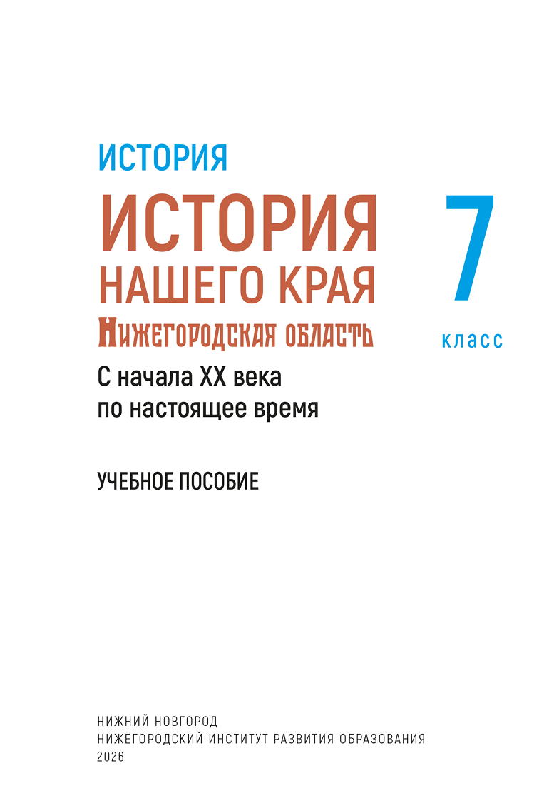
►
УДК 372.016:908
ББК 63.3(2Рос-4Ниж)я72
И90
Авторы
Б. Л. Гинзбург, кандидат исторических наук, доцент,
заведующий кафедрой истории и обществоведческих дисциплин
ГБОУ ДПО «Нижегородский институт развития образования»
Э. С. Иткин, старший преподаватель кафедры теории
и практики воспитания и дополнительного образования
ГБОУ ДПО «Нижегородский институт развития образования»
О. П. Морозова, старший преподаватель
кафедры истории и обществоведческих дисциплин
ГБОУ ДПО «Нижегородский институт развития образования»
Ф. А. Селезнев, доктор исторических наук, профессор кафедры
зарубежного регионоведения и локальной истории,
руководитель Центра краеведческих исследований
Института международных отношений и мировой истории
ФГАОУ ВО «Национальный исследовательский Нижегородский
государственный университет имени Н. И. Лобачевского»
В. К. Романовский, доктор исторических наук, доцент,
старший научный сотрудник кафедры истории и обществоведческих дисциплин ГБОУ ДПО «Нижегородский институт развития образования»
Ответственный редактор
С. М. Ледров, кандидат исторических наук, доцент
Рецензенты
Ю. В. Филиппов, доктор педагогических наук,
профессор, кандидат философских наук, генеральный директор
ГБУК НО «Нижегородский государственный историко-архитектурный музей-заповедник»
И. В. Рыжов, доктор исторических наук, доцент,
заведующий кафедрой истории и политики России
Института международных отношений и мировой истории
ФГАОУ ВО «Национальный исследовательский Нижегородский
государственный университет имени Н. И. Лобачевского»
Е. А. Медведева, учитель истории и обществознания
МБОУ «Школа № 14 имени В. Г. Короленко» Нижнего Новгорода,
почетный работник общего образования Российской Федерации
ISBN 978-5-7565-1023-2
© Гинзбург Б. Л., Иткин Э. С., Морозова О. П., Селезнев Ф. А., Романовский В. К., 2026
© ГБОУ ДПО «Нижегородский институт развития образования», 2026
►
Введение
Дорогой друг!
В 5-м и 6-м классах ты познакомился с историей родного края с древнейших времён до начала XX века. Ты узнал, как жили твои предки, как возводили города и осваивались земли, во что верили, за что боролись, чего хотели достичь.
В 7-м классе ты будешь изучать историю родного края в XX и в начале XXI века — исключительно важном периоде для истории России и всего мира. Это время было очень важным и во многом определяющим и для твоего края, для твоей семейной истории. Потому что живы люди, которые в эти годы работали, воспитывали детей и которые могут многое рассказать о событиях этих лет. Это семейная память, непосредственно касающаяся твоих близких и родных.
В начале XX века в России произошла череда событий, которые буквально перевернули жизнь людей: Первая мировая война, падение монархии, революции и Гражданская война. В результате возникло новое государство — Советский Союз, который стал одним из главных центров мирового развития. СССР стал новой формой исторического существования России, в которой её исторические и культурные ценности, народные традиции получили новое развитие.
Советский Союз впервые в истории провозгласил программу создания справедливого общества и предоставления гражданам широких социальных гарантий: ликвидацию частной собственности на заводы и фабрики, сокращение рабочего дня, всеобщую грамотность, равные права мужчин и женщин и многое другое. Во многом благодаря СССР значительные политические, экономические, социальные и культурные изменения начались и в других странах мира.
Советский Союз в очень короткие сроки сумел построить современное индустриальное общество, создать новые отрасли промышленности, преобразовать сельское хозяйство, построить новые города, выстроить систему всеобщего образования.►
В 1941 году СССР подвергся нападению нацистской Германии, на стороне которой выступало абсолютное большинство европейских стран. Но несмотря на все трудности, советский народ победил в Великой Отечественной войне, завершив её в Берлине полной и безоговорочной капитуляцией врага, подняв красное Знамя Победы над Рейхстагом.
Во второй половине XX века Советский Союз стал передовой индустриальной и научной державой, создал ядерную энергетику, активно развивал исследования космического пространства, первым в мире сумел вывести на орбиту Земли космический корабль с человеком на борту — гражданином СССР Юрием Гагариным. При этом каждый регион единой страны сохранял свои уникальные черты, внося вклад в её развитие. О достижениях твоего родного края в этот период ты узнаешь из этого учебника.
В конце XX века в результате сложных политических и экономических процессов Советский Союз прекратил своё существование. Его наследником и правопреемником стала Российская Федерация.
Российская Федерация продолжает лучшие традиции, ценности и смыслы своей истории, объединяет усилия всех народов, живущих на её территории. Наша страна сохраняет и приумножает достижения многих поколений наших предков в области науки, культуры, технологического развития и военной доблести. И каждый регион вносит вклад в процветание и развитие нашей Родины — России.
►
КАК РАБОТАТЬ С УЧЕБНым пособием
Учебное пособие состоит из пяти глав, включающих 16 параграфов. Исторические понятия и термины в тексте параграфов выделены полужирным курсивом. Их значение можно узнать в конце параграфа в «Историческом словаре». Наиболее важные имена, термины, даты параграфа размещены под рубрикой «Обратите внимание». В пособии представлены карты, фрагменты исторических источников, репродукции картин, фотографии. В начале каждого параграфа перечислены упоминаемые в нём важные события, личности, географические объекты. Все даты до февраля 1918 года даны по старому стилю.
В каждом параграфе содержатся обобщающие фрагменты, раскрывающие связь событий, происходивших в Нижегородском крае, с общим ходом исторического процесса в России. Эти фрагменты вплетены в единую ткань изложения, поскольку нижегородская история в данный период тесно связана с общероссийской и является её естественной частью.
После некоторых параграфов приводятся отрывки из исторических источников. При работе с историческим источником, картами, при анализе деятельности исторической личности, составлении аргументированного высказывания тебе помогут памятки.
Вопросы и задания после параграфа имеют как базовый уровень, так и углублённый (выделены знаком «*»). Они позволяют проверить фактические знания (о событиях, явлениях, исторических деятелях, датах, терминах). С помощью этих заданий можно научиться сравнивать исторические события, выделять главное в тексте, делать выводы, составлять рассказы и планы ответов, совершенствовать навыки в проектно-исследовательской деятельности. Задания для итогового повторения даются после каждой главы, и к ним необходимо отнестись с особым вниманием.
В конце учебного пособия представлены ссылки на интернет-ресурсы. Поработать с информацией, ответить на вопросы и выполнить задания можно самостоятельно. Творческие, проектные и исследовательские задания сориентируют на активное взаимодействие с одноклассниками и родителями, что сделает ещё более увлекательным изучение истории родного края. ►
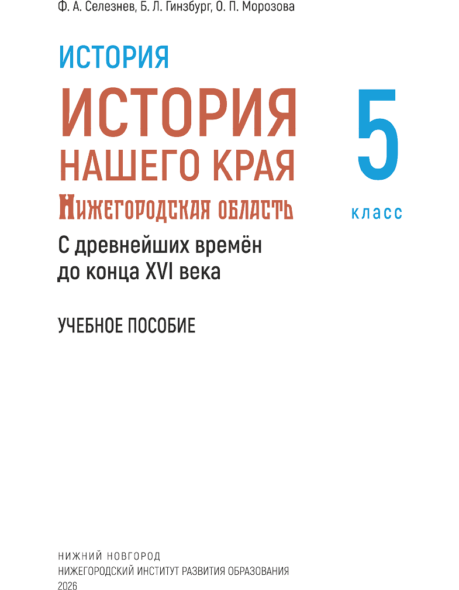
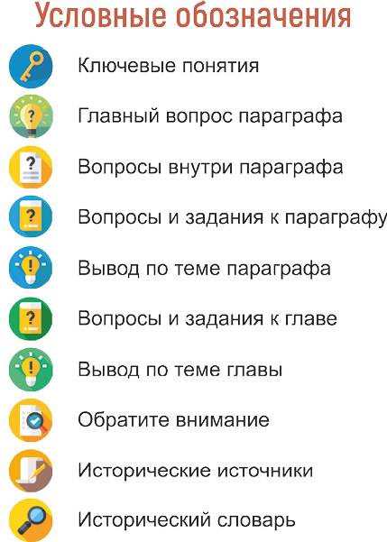
В добрый путь, дорогой друг!
►
Глава I
НИЖЕГОРОДСКИЙ КРАЙ
В ГОДЫ ВЕЛИКИХ ПОТРЯСЕНИЙ
Производство артиллерийских снарядов на Сормовском заводе
в годы Первой мировой войны
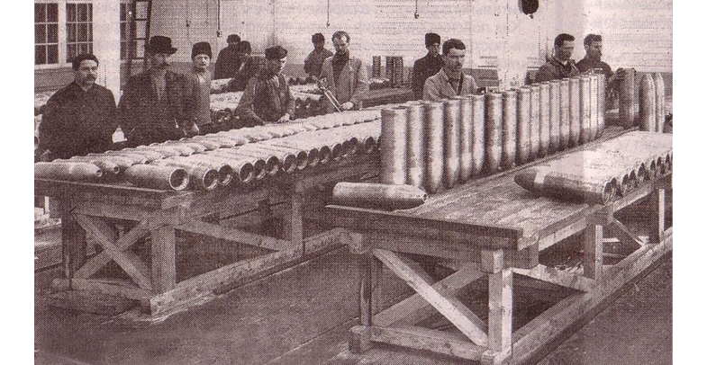
В начале ХХ века Россия напоминала вымахавшего за лето подростка. Быстро увеличивалось население, особенно городское. Высокие темпы были характерны для развития промышленности. В жизнь людей входила новая техника. Стране было тесно в старых социальных «одёжках». Тяжёлая и затяжная Первая мировая война стала тем испытанием на прочность, которое Российская империя не выдержала. Царскую власть смела революция 1917 года. Социальные противоречия приняли настолько острый характер, что привели к Гражданской войне.
►
§ 1
Первая мировая война и Нижегородский край
Мировой пожар (фрагмент)
Патриотический российский плакат начала Первой мировой войны
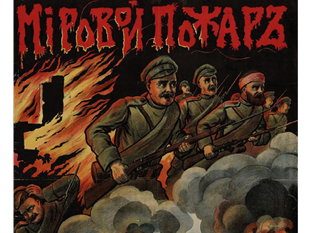
|
|
Как Первая мировая война изменила жизнь Нижегородского края? |
1. Нижегородский край в начале XX века.
2. Патриотический подъём в начале войны.
3. Эвакуация учебных заведений, промышленных предприятий и беженцев в Нижегородский край.
4. Нижегородская промышленность в годы войны.
5. Подвиги нижегородцев П. Н. Нестерова и П. Н. Черкасова.
● 1914 год
● Союз городов
● Д. В. Сироткин
● 1915 год
● Варшавский политехнический институт
● Рига
● Завод «Фельзер»
● Завод «Этна»
● Завод «Сименс и Гальске»
● П. Н. Нестеров
● П. Н. Черкасов
►
1. Нижегородский край в начале ХХ века. В начале ХХ века для Нижегородской губернии были характерны те же проблемы и социальные противоречия, что и для России в целом. Крестьяне страдали от малоземелья. К началу ХХ века на один двор в Нижегородской губернии приходилось 7,7 десятины земли. При этом значительная часть земли в губернии принадлежала дворянам-помещикам. Помещичьи имения составляли в среднем 500—1000 десятин. Крестьяне считали такое положение несправедливым.
Причины для недовольства были и у рабочих: недостаточная охрана труда, 10—11-часовой рабочий день, отсутствие оплачиваемых отпусков.
Существующие порядки не устраивали и интеллигенцию. Её представители считали, что их знания и таланты недостаточно востребованы государством. Им не нравилось то, что они не могут влиять на государственную политику. Для участия в выборах в органы местного самоуправления — городские думы и земские собрания — требовалось обладать дорогой недвижимостью, которой у интеллигентов как правило не было. Общероссийского парламента не существовало. Все общественные организации имели неполитический характер, ибо самодержавное государство пресекало любые попытки создания независимых политических структур.
Несмотря на запреты, политические объединения (партии) возникали, причём их деятельность отличалась ярко выраженной антиправительственной направленностью. В 1901 году был создан нижегородский комитет партии социал-демократов — РСДРП. Социал-демократы считали, что заводы нужно отнять у предпринимателей и обобществить. Одним из лозунгов социал-демократов было введение 8-часового рабочего дня. Члены ПСР — социалисты-революционеры (эсеры) — требовали обобществления земли и вели пропаганду преимущественно среди крестьян. Либералы были популярны у интеллигенции. Они выступали за скорейший созыв парламента на основе всеобщих выборов.
Накопившиеся противоречия привели в 1905 году к революции — открытому взрыву недовольства российского общества политикой правительства. ►
Во время революции 1905—1907 годов против правительства вели совместную борьбу социал-демократы, социалисты-революционеры и либералы. 9—10 июля 1905 года в Нижнем Новгороде на Острожной площади (ныне — площадь Свободы) произошли столкновения сторонников и противников царской власти. В память об этих событиях на площади Свободы в советское время установили памятник.
Чтобы сбить волну общественного недовольства, царь 6 августа 1905 года объявил о созыве Государственной думы, а 17 октября 1905 года о введении свободы слова, собраний и союзов (партий).
Крестьяне поняли провозглашённые свободы как право не платить налоги и захватывать помещичье имущество. В Лукояновском и Сергачском уездах сельские жители в ноябре — декабре 1905 года поджигали и громили господские имения, в массовом порядке рубили помещичий лес.
Понимая, что нужно идти на уступки крестьянству, в 1906 году царь Николай II поручил председателю Совета министров П. А. Столыпину провести земельную реформу. Крестьяне получили право бесплатно оформлять свои наделы в частную собственность и выходить из общины. Важной составляющей Столыпинской реформы было переселение малоземельных крестьян в Сибирь и на Дальний Восток.
Многие крестьяне отрицательно отнеслись к реформе. Они косо смотрели на односельчан, пожелавших покинуть общину. В Нижегородской губернии решились выйти из неё только 15 % крестьян. Против Столыпинской реформы были и многие политические партии. Их члены в Государственной думе критиковали правительство, утверждая, что удовлетворить земельную нужду крестьян может только конфискация помещичьих владений. Наиболее враждебно к власти были настроены социал-демократы и эсеры. Они хотели свергнуть царя, сделать Россию республикой и установить социалистические порядки, то есть сделать общей собственностью землю и промышленные предприятия. К оппозиции принадлежала и Конституционно-демократическая (в просторечии – кадетская) партия, которая объединила сторонников парламентской демократии. Её члены хотели, чтобы правительство формировала Государственная дума, а не царь.►
2. Патриотический подъём в начале войны.
|
|
С помощью учителя узнайте, когда началась Первая мировая война, каковы были её причины, какие государства были противниками России, а какие — союзниками. |
Политические противоречия в обществе на какое-то время смягчило начало Первой мировой войны. Патриотический подъём заставил людей на какое-то время забыть о социальных проблемах.
Через два дня после начала Первой мировой войны Нижегородская городская дума собралась на чрезвычайное заседание. Её депутаты обсудили вопрос о том, как помочь армии. Городской голова Д. В. Сироткин предложил собрать пожертвования на лечение солдат. Его единодушно поддержали. Подобные настроения в начале войны были распространены во многих городах. В августе 1914 года на съезд в Москве собрались представители городских дум со всех концов страны. Они образовали Всероссийский союз городов помощи больным и раненым воинам (сокращенно — Союз городов). Д. В. Сироткин вошёл в состав его руководства. Вернувшись из Москвы, он создал Нижегородский комитет Всероссийского союза городов.
Раненые начали прибывать в Нижний Новгород с середины августа 1914 года. Сначала их размещали в городских больницах. Потом пришлось приспосабливать для лечения солдат другие подходящие здания. Самый большой в Нижнем Новгороде лазарет (на 475 коек) открылся в доме, где находилось правление акционерного общества «Волга», которым руководил Сироткин (сейчас здесь расположен учебный корпус № 1 Приволжского исследовательского медицинского университета на площади Минина и Пожарского).►
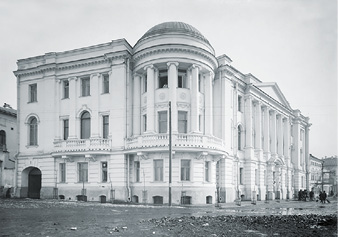
Здание правления
акционерного общества «Волга»
Фотография начала XX века
Под лазареты также заняли Народный дом, Коммерческий клуб, Биржу, графа Аракчеева кадетский корпус. Жена губернатора В. М. Борзенко развернула лазарет в губернаторском дворце. Этот лазарет состоял под покровительством царицы Александры Федоровны, которая отдавала много сил для помощи раненым. Солдаты с легкими ранениями размещались в частных домах.
Не забывали нижегородцы и тех, кто сражался на фронте. 4—6 октября 1914 года учащиеся графа Аракчеева кадетского корпуса устроили сбор пожертвований для воинов. Были собраны тёплые куртки, фуфайки, бельё, 100 пудов махо́рки, крупная сумма денег. Нижегородцы всей душой восприняли призыв Всероссийского союза городов послать солдатам подарки на Рождество. Подарки были отправлены также на Пасху. В феврале 1915 года из Нижнего Новгорода на Кавказский фронт коменданту крепости Карс отправили 569 комплектов тёплого белья, табак, мыло, 6 тысяч ложек.
3. Эвакуация учебных заведений, промышленных предприятий и беженцев в Нижегородский край. Весной 1915 года началось большое наступление немецких войск. Армия Германии захватила Польшу, Западную Белоруссию и Литву. Враг подошёл к Риге. Из этих мест началась эвакуация учебных заведений, промышленных предприятий и беженцев вглубь страны. Только с 22 июля по 1 сентября 1915 года в Нижний Новгород прибыло 22 тысячи человек.
Вместе с преподавателями и оборудованием в Нижний Новгород переехал Варшавский политехнический институт имени Николая II. Здесь 1 октября 1916 года он возобновил занятия. В 1918 году на базе этого учебного заведения открылся Нижегородский государственный университет.
Из Риги в Нижний Новгород вывезли ряд крупных предприятий. Среди них заводы «Фе́льзер» (будущий «Двигатель революции»), завод «Этна» (ныне — «Красная Этна»), «Эльрих и Ко» (в советский период — «Корунд»). ►
Все они, наладив производство на новом месте, главное внимание уделяли выпуску изделий военного назначения. «Фельзер» производил дизельные моторы. «Этна» изготавливала колючую и телеграфную проволоку. Химический завод «Эльрих и Ко» выпускал серную кислоту.
4. Нижегородская промышленность в годы войны. На обслуживание нужд фронта переключились и нижегородские предприятия. Некоторые из них уже давно выпускали военную продукцию, а теперь увеличили её объем и разнообразили ассортимент. Так, на Сормовском заводе после начала войны выплавлялась сталь для взрывателей, изготавливались пушки и снаряды. Павловская кустарная артель получила заказы на сапёрные лопаты, кольца для гранат, кусачки для резки колючей проволоки. Кулебакский металлургический завод производил броню.
Другие предприятия приступили к снабжению армии только в 1914—1915 годах. Д. В. Сироткин обратился к правительству с предложением использовать для этого возможности средней и мелкой промышленности. Инициативы Сироткина стали одним из толчков, приведших к созданию военно-промышленных комитетов, которые в качестве посредников начали распределять заказы военного ведомства среди частных предприятий.
Д. В. Сироткин
Фотография М. П. Дмитриева
Государственный архив аудиовизуальной документации Нижегородской области
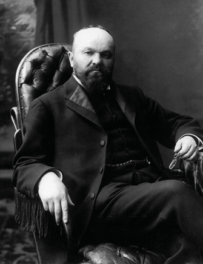
►
Нижегородский военно-промышленный комитет возглавил сам Д. В. Сироткин. Руководимое этим предпринимателем пароходное общество «Волга» в своих ремонтных мастерских в Сормовском затоне начало изготовление деталей к снарядам. Мукомольная фирма Бугровых взяла заказ на изготовление в своих механических мастерских бомбомётов.
В годы Первой мировой войны в Нижегородской губернии появились и новые высокотехнологичные оборонные предприятия. В 1915 году началось строительство телефонного завода общества «Сименс и Гальске» (в будущем — Нижегородский телевизионный завод) и Нижегородского завода взрывчатых веществ (ныне — завод имени Я. М. Свердлова в Дзержинске).
5. Подвиги нижегородцев П. Н. Нестерова и П. Н. Черкасова. Наш земляк, мастер высшего пилотажа, прославленный лётчик П. Н. Нестеров воевал на Юго-Западном фронте.
Подвиг и гибель лётчика
П. Н. Нестерова
Плакат. 1915
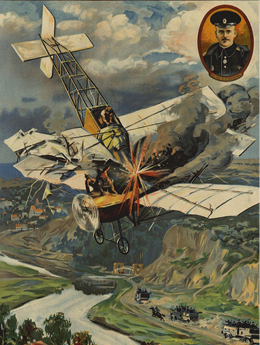
►
В первый месяц войны русские лётчики занимались только воздушной разведкой. Однако Нестеров открыл для отечественной авиации ещё два новых вида использования самолётов: бомбометание и воздушный бой.
Нужно отметить, что в то время идея воздушного боя казалась невозможной. Никакое вооружение на аэропланы не устанавливалось. Но у Нестерова ещё до войны родилась идея «соколиного удара» по самолёту противника. В разговорах с товарищами он неоднократно высказывал мнение, что можно сбить летательный аппарат врага ударом сверху, колёсами своей машины. Такой удар Пётр Николаевич и нанёс 26 августа 1914 года, взвившись над вражеским аэропланом. Однако это был уже пятый вылет за два дня, и утомившийся Нестеров не смог ударить противника колёсами. Он врезался сверху в австрийский самолёт, сбил его, но погиб и сам. Это был первый в истории мировой авиации боевой таран.
В августе 1915 года, когда немцы наступали на Ригу, совершил свой подвиг наш земляк П. Н. Черкасов. Он родился в семье капитана I ранга и тоже стал моряком. В 1913 году капитан II ранга Черкасов был назначен командиром каноне́рской лодки «Сивуч». Во время войны он руководил дивизионом канонерских лодок на Балтике.
19 августа 1915 года две канонерки дивизиона Черкасова возвращались на базу после постановки мин. В сумерках русские моряки обнаружили германский крейсер «Аугсбург» и два миноносца.
П. Н. Черкасов
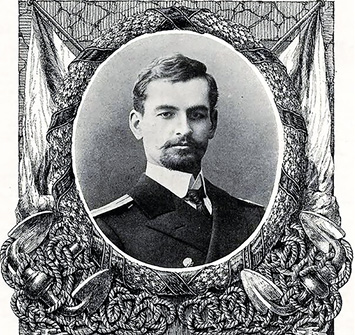
►
Враг двигался в направлении Риги. Черкасов отослал с сообщением об этом вторую канонерскую лодку, а сам на «Сивуче» принял бой, чтобы задержать немцев. Экипаж канонерки мужественно сражался с тремя кораблями противника. Немцам пришлось вызывать помощь — два линкора и флотилию миноносцев. «Сивуч» не сдался врагу и пошёл ко дну вместе со своим экипажем. Неожиданный прорыв германской эскадры к Риге была сорван.
В 2008 году памятная доска, посвящённая П. Н. Черкасову, была установлена на здании Нижегородского дворянского института, где учился герой. (Ныне здесь по адресу улица Варварская, д. 3 расположена Нижегородская государственная областная универсальная научная библиотека.)
В 2024 году в парке имени Кулибина был установлен памятник нижегородцам — участникам Первой мировой войны.
Памятник нижегородцам —
участникам Первой мировой войны
Скульптор А. А. Щитов
2024
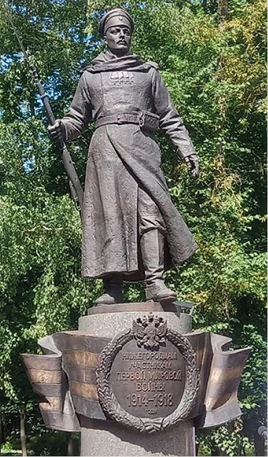
►
Памятка
Как работать с историческим источником
1. Установите «личность» источника: узнайте, как он называется, кто его создал и когда (хотя бы примерный век или год).
2. Внимательно изучите детали: в тексте подчеркните незнакомые слова и факты (даты, имена, цифры), а на фото разглядите людей, предметы, фон и то, чего на фотографии нет.
3. Переведите всё на современный язык: объясните непонятные термины и переформулируйте основное содержание своими словами, как будто рассказываете другу.
4. Поймите, зачем это создано: определите цель автора — хвалит он, приказывает, жалуется, информирует или убеждает (это видно и по тексту, и по ракурсу фотографии).
5. Сделайте собственное открытие: сформулируйте, что в этом источнике показалось самым удивительным, новым или необычным для той эпохи — это и есть его главная ценность для истории
|
|
Знакомимся с историческим источником |
Среднее потребление основных продовольственных
продуктов в Нижнем Новгороде в 1916 году
в расчёте на душу населения
Чёрного хлеба — 6,15 пуда
Белого хлеба — 6,47 пуда
Сахара-рафинада и сахарного песка — 60,8 фунта
Кофе — 1,5 фунта
Чаю — 2 фунта
Масла топлёного — 17,5 фунта
Соли — 22,4 фунта
Мяса разного — 4 пуда 32 фунта
Сала — 5,76 фунта
Сливочного масла — 1,68 фунта
Молока — 29,2 четверти
Яиц — 108 штук ►
Свежей рыбы — 14,3 фунта
Солёной рыбы — 8,6 фунта
Пшена — 28 фунтов
Гречневой крупы — 33,6 фунта
Других круп — 27,6 фунта
Гороха — 5 фунтов
Масла постного — 9,8 фунта
Картофеля — 5,43 пуда
Капусты — 1,37 пуда
Сметаны — 12 фунтов
Грибов сушёных — 1,5 фунта
Подведём итоги
После начала Первой мировой войны в Нижний Новгород стали прибывать раненые. В 1915 году сюда начали эвакуировать промышленные предприятия и беженцев с территорий, находившихся под угрозой захвата врагом. Вместе с преподавателями и оборудованием в Нижний Новгород переехал Варшавский политехнический институт. Ряд крупных предприятий вывезли в Нижний Новгород из Риги. Наладив производство на новом месте, главное внимание они уделяли выпуску военной продукции. На обслуживание нужд фронта переключились и нижегородские предприятия.
Наши земляки прославились выдающимися подвигами на фронтах Первой мировой войны. Лётчик П. Н. Нестеров совершил первый в истории мировой авиации таран самолёта противника. Канонерская лодка «Сивуч», которой командовал П. Н. Черкасов, остановила прорыв германской эскадры к Риге.
|
|
Исторический словарь |
Городской голова — руководитель городского самоуправления.
Каноне́рская лодка — небольшое военное судно, предназначенное для действия у берега (высадки десанта, обстрела крепостей).
ПСР — Партия социалистов-революционеров, политическая партия начала ХХ века; её членов называли эсерами.
Пуд — старинная русская мера веса, 16 килограммов. ►
Революция — резкое изменение политического и социального устройства государства.
РСДРП — Российская социал-демократическая рабочая партия, политическая партия начала ХХ века; разделялась на фракции большевиков во главе с В. И. Лениным и меньшевиков.
Социалисты — общее название социал-демократов, социалистов-революционеров и их единомышленников, намеревавшихся сделать общественной собственностью землю и промышленные предприятия.
Фунт — старинная русская мера веса, 400 граммов.
Четверть — старинная русская мера объёма жидкости, 3 литра.
|
|
Обратите внимание |
Пётр Николаевич Нестеров — нижегородец, военный лётчик, совершивший первый в мировой истории таран самолёта противника.
Пётр Нилович Черкасов — нижегородец, командир канонерской лодки «Сивуч», остановивший прорыв немецкой эскадры к Риге.
|
|
Сформулируйте один-два вывода по теме параграфа. Приведите два-три аргумента. |
|
|
Вопросы и задания |
1. Какая организация в годы Первой мировой войны занималась оказанием помощи раненым солдатам?
2. Узнайте, что сейчас находится в зданиях Нижнего Новгорода, в которых во время Первой мировой войны были размещены лазареты.
3. Какие заводы были эвакуированы в Нижний Новгород из Риги?
4. Как в Нижнем Новгороде увековечена память П. Н. Нестерова?
5. С помощью документа дайте оценку обеспечения продуктами питания нижегородцев в годы Первой мировой войны. Для этого переведите старинные меры веса и объёма в современные. Выясните, сколько жители современной России в среднем потребляют в год мяса, молока, чая, хлеба, картофеля и других продуктов питания.
|
|
Составьте небольшой устный или письменный рассказ с использованием нескольких дат, личностей и терминов, помещённых в начале параграфа. |
►
§ 2
Революция 1917 года и установление советской власти в Нижнем Новгороде и губернии (1917 — весна 1918 года)
Красные орлы (фрагмент)
Художник П. С. Бортнов. 1963. Нижнетагильский музей изобразительных искусств
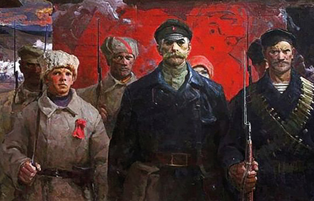
|
|
Как в Нижнем Новгороде и губернии произошёл переход от власти Временного правительства к советской власти? |
1. Свержение царской власти на Нижегородской земле.
2. Июльские дни в Нижнем Новгороде.
3. Нарастание революционного кризиса и приход к власти большевиков.
4. Первые преобразования советской власти в крае (октябрь 1917 — весна 1918 года).
● 1917 год
● Февральская революция
● Либералы
● Социалисты
● Эсеры
● Большевики
● Меньшевики
● Двоевластие
● Июльские дни
● И. Р. Романов
● Я. З. Воробьёв
● Октябрьская революция
● Красногвардейская атака на капитал
►
1. Свержение царской власти на Нижегородской земле. В конце февраля 1917 года в Петрограде вспыхнули народные волнения. Царских министров арестовали. Власть перешла в руки Вре́менного комитета Государственной думы, избранного из её депутатов. Эти события стали началом новой революции. Известия о ней дошли до нижегородских противников царской власти — либералов и социалистов в ночь на 1 марта 1917 года.
С утра 1 марта активисты социалистических партий (РСДРП и ПСР) начали призывать рабочих Сормовского завода к прекращению работы. Вскоре около шести тысяч сормовичей с красными знаменами под музыку двинулись в центр Нижнего Новгорода. Они прошли по улице Рождественской и Зеленскому съезду на Благовещенскую площадь, где устроили митинг. К ним присоединились тысячи жителей верхней части города. Митингующие двинулись к нижегородским тюрьмам и освободили всех заключённых.
Городская дума Нижнего Новгорода поддержала революцию. Она одной из первых в стране признала власть Временного правительства, которое было создано в Петрограде, чтобы управлять страной до созыва Учредительного собрания, уполномоченного принять новые законы.
Временное правительство отменило должность губернатора и ликвидировало полицию. Вместо полиции Временное правительство учредило народную милицию. Поначалу в роли милиционеров в Нижнем Новгороде выступали студенты и гимназисты старших классов, а затем — солдаты. Потом для будущих милиционеров были организованы трёхмесячные подготовительные курсы при губернском суде. Параллельно с народной милицией, подчинявшейся городской думе, на некоторых предприятиях заречной части Нижнего Новгорода возникла рабочая милиция.
Наличие двух параллельно действовавших милиций было характерным примером установившегося в России двоевластия. Оно возникло из-за того, что либералы и социалисты (эсеры, меньшевики, большевики), вместе выступавшие против старого режима, когда царь был свергнут, стали бороться за власть между собой. Но ни те ни другие не могли взять верх.►
Либералы контролировали Временное правительство в Петрограде и городские думы в провинции. Им подчинялись генералы и офицеры в армии. А социалисты создали советы рабочих, крестьянских и солдатских депутатов.
Советы получили в своё распоряжение кремлёвский дом нижегородского губернатора, который стал называться Дворцом Свободы.
2. Июльские дни в Нижнем Новгороде. В 1917 году наибольшие противоречия в обществе были связаны с вопросом о войне с Германией. Временное правительство, либералы и некоторые социалисты (меньшевики и эсеры) считали необходимым её продолжать. Большевики выступали за прекращение войны.
В июне 1917 году началось наступление русской армии. Для участия в нём на фронт начали направлять воинские части из тыловых городов. Некоторые из них отказались ехать на войну и в начале июля взбунтовались. Так случилось и в Нижнем Новгороде. Эти события получили название Июльских дней.
Для усмирения восставших Временное правительство направило в Нижний Новгород роту юнкеро́в из Москвы. Произошла перестрелка юнкеров и не пожелавших им подчиняться солдат. Три юнкера были ранены, а потом убиты. Остальных юнкеров взбунтовавшиеся солдаты разоружили. Солдатский мятеж поддержали большевики. Восставшие заняли Нижегородский кремль.
Дом нижегородского
губернатора
(ныне — здание
Нижегородского
государственного
художественного музея)
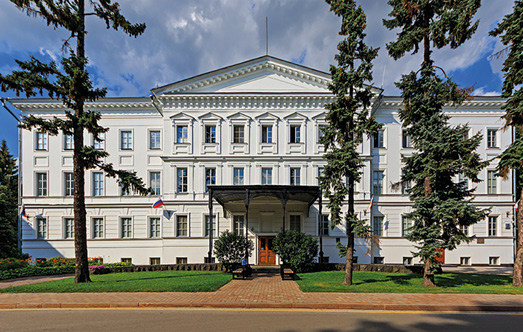
►
На подавление восстания из Москвы по железной дороге отправился командующий Московским военным округом полковник А. М. Верховский. Его отряд был усилен броневиками. Вечером 6 июля 1917 года поезд с отрядом Верховского прибыл в Нижний Новгород. В ночь на 7 июля 1917 года правительственные войска ворвались в Нижегородский кремль. После перестрелки мятежники, засевшие во Дворце Свободы, сдались.
3. Нарастание революционного кризиса и приход к власти большевиков. После Февральской революции крестьяне стали захватывать помещичьи земли (см. документ). В результате производство продуктов в помещичьих имениях сократилось. Крестьяне же отказывались продавать свой хлеб по назначенным Временным правительством низким закупочным ценам. Поэтому снабжение Нижнего Новгорода продовольствием летом 1917 года резко ухудшилось. Была установлена уменьшенная норма потребления хлеба в месяц: 30 фунтов муки или 45 фунтов печёного хлеба. Осенью месячная норма выдачи печёного хлеба составляла уже 30 фунтов.
|
|
Сравните нормы потребления хлеба в 1917 году и до революции (см. предыдущий параграф). |
На почве перебоев с хлебом 14 октября 1917 года в Нижнем Новгороде произошли крупные беспорядки. Сотни женщин, возмущённые отсутствием хлеба в лавке на Сенной площади, двинулись на улицу Большую Покровскую, ворвались в здание городской продовольственной управы (ныне — дом 18) и избили её служащих.
Кроме нехватки продуктов питания нижегородцев беспокоила захлестнувшая город волна преступности. Новая милиция с ней не справлялась. Уголовники чувствовали себя вольготно. Они могли на улице ограбить человека, врывались в квартиры.
|
|
Подумайте, почему милиция в 1917 году не справлялась с разгулом преступности. |
►
Власть Временного правительства слабела. Зато крепли позиции партии большевиков. Она взяла курс на свержение Временного правительства.
Среди нижегородских большевиков наметилось два течения: одно выступало за немедленный захват власти, а другое было против этого. К умеренному течению принадлежал И. Р. Романов (когда-то работавший на Сормовском заводе и избиравшийся депутатом II Государственной думы).
Лидером другого течения, выступавшего за восстание, являлся Я. З. Воробьёв. Он был секретарем Канавинского комитета партии большевиков. В сентябре 1917 года организовал в Нижнем Новгороде Красную гвардию. Так называли добровольные вооружённые отряды, создаваемые большевиками и эсерами.
Вечером 25 октября 1917 года в Нижнем Новгороде стало известно о революционных событиях в Петрограде. Они вошли в историю как Октябрьская революция. Имея благоприятные известия из Петрограда, нижегородские большевики решились взять власть в свои руки. В ночь на 27 октября для руководства восстанием ими был создан Военно-революционный комитет (ВРК). Возглавил его И. Р. Романов.
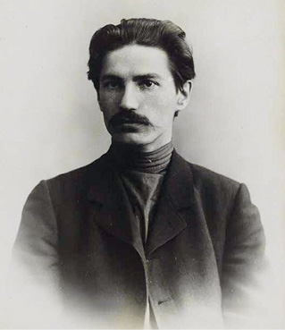
И. Р. Романов
►
На следующий день, 27 октября 1917 года в Нижнем внешне сохранялось спокойствие. Как обычно, ходили трамваи, работали магазины и даже рестораны. Затишье кончилось в субботу, 28 октября. С раннего утра к кремлю двинулись отряды Красной гвардии из Сормова и Канавина. Красногвардейцы захватили почтово-телеграфную контору на улице Рождественской, возмущённые служащие которой тут же прекратили работу. Другой отряд красногвардейцев во главе с Яковом Воробьёвым в это время занял редакции наиболее популярных городских газет «Нижегородский листок» и «Волгарь», прекратив на время их выпуск.
К вечеру большевики контролировали значительную часть города. Юнкера учебного подготовительного батальона, размещавшиеся в здании духовной семинарии на Благовещенской площади (ныне — пл. Минина, 7/1), занимали нейтральную позицию и в события не вмешивались. Тем не менее на всякий случай красногвардейцы решили их разоружить. Эту операцию провёл Яков Воробьёв.
Вопрос о разоружении юнкеров чуть было не вызвал раскол в большевистском ВРК. В газетах даже промелькнуло сообщение о том, что в знак протеста из его состава вышел И. Р. Романов. Умеренное большинство ВРК не желало кровопролития. Оно было настроено вести переговоры со своими политическими противниками. Воробьёв же выступал за вооружённые методы борьбы.
Главным очагом антибольшевистского сопротивления в Нижнем Новгороде являлась городская дума. Её депутаты 26 октября 1917 года создали Комитет защиты революции.
|
|
Как вы думаете, почему этот орган получил такое название? Какую революцию собиралась защищать городская дума? |
Депутаты решили не покидать здание городской думы и, если потребуется, дать отпор большевикам. На помощь членам думы пришли офицеры и 30 вооружённых студентов политехнического института.
Однако члены городской думы не желали пролития крови. Особенно их страшила возможность гибели студентов. Поэтому, когда возникла угроза непосредственного столкновения с красногвардейцами, депутаты попросили учащихся уйти.
►
От других активных форм борьбы, включая организацию забастовок протеста, гласные тоже отказались, поскольку это плохо сказалось бы на городском хозяйстве и принесло неудобство жителям. От стихийно забастовавших почтовиков, железнодорожников и служащих руководство городской думы отмежевалось. 1 ноября 1917 года Комитет спасения родины и революции, созданный на основе Комитета защиты революции, решил начать переговоры с большевиками об урегулировании жизни в городе и губернии. В итоге городская дума и большевики одновременно распустили Военно-революционный комитет и Комитет спасения родины и революции.
2 ноября 1917 года в здании общественного собрания (ныне — ул. Большая Покровская, 39а) состоялось заседание Нижегородского Совета рабочих и солдатских депутатов. Собравшиеся 157 голосами «за» (при 52 «против») провозгласили в губернии советскую власть.
Главным органом советской власти, общим и для губернии, и для Нижнего Новгорода, стал Нижегородский губернский Совет рабочих, крестьянских и солдатских депутатов со своим исполкомом. Председателем его президиума был избран большевик И. Р. Романов.
Здание Нижегородской
городской думы
Улица Большая Покровская, 1
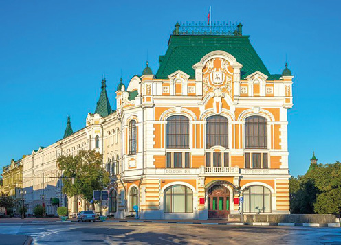
►
4. Первые преобразования советской власти в крае (октябрь 1917 — весна 1918 года). Одним из первых законодательных актов советской власти стал Декрет о земле, принятый II Всероссийским съездом Советов 26 октября 1917 года. Он провозглашал ликвидацию частной собственности на землю. Земли помещиков бесплатно передавались в бессрочное пользование крестьянам. В Нижегородской губернии Декрет о земле начал претворяться в жизнь в январе — феврале 1918 года. В результате ликвидации помещичьего землевладения нижегородские крестьяне безвозмездно получили в пользование более 500 тысяч гектаров земли, разделив их между собой по количеству едоков, без различия возраста, как мужчин, так и женщин. Это увеличило крестьянский земельный фонд более чем на одну треть и обеспечило большевикам поддержку деревни.
Значительные изменения были осуществлены большевиками в сфере просвещения. Этой работой руководил комиссариат народного образования. Из дореволюционных начальных училищ организовывались школы I ступени для детей 8—13 лет, а на основе гимназий — школы II ступени для детей 13—17 лет. Мальчики и девочки в них стали обучаться совместно, а не раздельно, как до революции.
25 июня 1918 года председатель Совнаркома В. И. Ленин подписал декрет об объединении Нижегородского политехнического института, Нижегородского городского народного университета и существовавших с 1917 года Высших сельскохозяйственных курсов. На их основе возник Нижегородский государственный университет. Он стал располагаться в здании Нижегородской семинарии на Благовещенской (ныне — Минина и Пожарского) площади.
Советская власть взяла под контроль не только народное просвещение, но и транспорт, промышленность, банковское дело. Исполком Нижегородского совета назначил комиссаров, отвечавших за эти отрасли общественного хозяйства.
Сначала чиновники не хотели им подчиняться. Они отказывались выдавать комиссарам ключи от помещений и сейфов, не выполняли их распоряжения. Такие действия называются сабота́жем. Похожая ситуация была и в других городах России. Для подавления сопротивления своих противников большевики 20 декабря 1917 года образовали Всероссийскую чрезвычайную комиссию по борьбе с контрреволюцией и саботажем. ►
Позднее её отделение во главе с Я. З. Воробьёвым было создано в Нижнем Новгороде.
5 января 1918 года губернский совет распустил городскую думу. Эти и другие действия большевиков подвергались острой критике на страницах оппозиционных нижегородских газет. Тогда совет произвёл смену руководства в газете «Нижегородский листок». С 28 декабря 1917 года она выходила под названием «Рабочий нижегородский листок» (потом «Рабоче-крестьянский нижегородский листок») и отражала позицию Нижегородского совета. 23 января 1918 года совет принял решение о закрытии газет меньшевиков «Жизнь» и эсеров «Народ». Ликвидирована была и независимая газета «Волгарь».
22 февраля 1918 года Нижегородский губернский исполнительный комитет наложил на местных капиталистов чрезвычайный налог в 50 миллионов рублей. В газетах публиковались списки тех, кому надлежало выплатить чрезвычайный налог персонально. Не желавших его платить брали под стражу. За решёткой оказались представители известных купеческих фамилий, в том числе Блиновы и Башкировы.
Чрезвычайный налог на нижегородскую буржуазию находился в русле проводимой большевиками по всей стране атаки на капиталистов. Наиболее важные частные предприятия, например банки, перешли в собственность Советского государства уже в 1917 году. В январе 1918 года декретом СНК была проведена национализация речных торговых судов.
На заводах, которые находились в частных руках, был введён рабочий контроль. Его органами были фабрично-заводские комитеты (завкомы), тесно связанные с Красной гвардией. Они вмешивались в решение вопросов оплаты труда, приёма и увольнения сотрудников, производственно-техническую и коммерческую деятельность предприятий. Так, председатель завкома предприятия «Сименс и Гальске» большевик П. П. Кринов (матрос Балтийского флота, поступивший на это предприятие в 1916 году) предупредил администрацию о том, что впредь «все платежи по заводским и частным счетам могут производиться только с ведома и за подписью заводского комитета».
►
К марту 1918 года в Нижнем Новгороде и Нижегородской губернии рабочий контроль действовал более чем на 50 заводах и фабриках. Он сделал положение владельцев и директоров предприятий невыносимым. Некоторые хозяева прекращали работу своих фабрик, другие скрывались.
Летом 1918 года большевиками была проведена массовая национализация заводов и фабрик. В собственность государства перешли Сормовский завод, заводы «Новая Этна», «Фельзер», телефонный завод «Сименс и Гальске» и другие крупные и средние нижегородские предприятия. Национализированными предприятиями стали руководить губернские советы народного хозяйства. Нижегородский губернский совет народного хозяйства возглавил большевик А. Д. Костин.
В конце 1918 года Нижегородский Совет рабочих и красноармейских депутатов постановил отменить право частной собственности на всю недвижимость, расположенную в черте Нижнего Новгорода. Она передавалась в распоряжение городских властей. Это касалось не только промышленных предприятий, но и жилья.
Действия большевиков задели интересы многих социальных групп. Причём ни большевики, ни их противники не хотели идти на компромисс. В итоге это привело к Гражданской войне — вооружённому конфликту внутри общества.
Рабочий контроль над производством
Художник Г. К. Савицкий
1963
Государственный центральный музей современной истории России
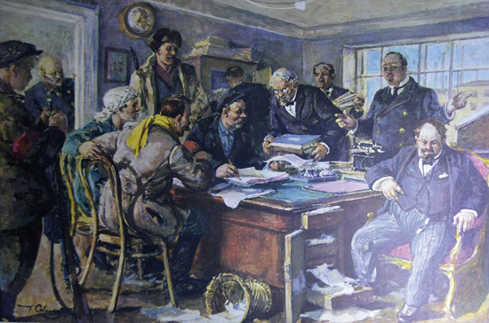
►
|
|
Знакомимся с историческим источником |
Захват крестьянами помещичьих земель в Нижегородской губернии (телеграммы помещиков нижегородским властям)
5 апреля 1917 года
Громят деревню Борок, меня арестовали на двое суток, разграбили дом, распоряжаются без уполномочий, прошу защиты. Гражданин граф Келлер.
8 апреля 1917 года
Крестьяне села Умай Арзамасского уезда выгнали управляющего, заперли амбары. Уездный комиссар уговаривает, приказывает без пользы. Прошу распорядиться прекратить самоуправство. Опекун Ульянин.
23 апреля 1917 года
Крестьяне села Ждановки 7, 8, 9 марта произвели разгром моей экономии при селе Ждановка, крестьяне села Маресева произвели разгром моей другой экономии, о чём имеется приговор о виновности тех и других из них. Довожу до сведения г. губернского комиссара, что крестьяне пасут свой скот на моих полях и лугах, портя по теперешнему весеннему времени мои луга. Землевладелица Н. Н. Венюкова.
Подведём итоги
После Февральской революции в России возникло двоевластие. Либералы контролировали Временное правительство в Петрограде и городские думы в провинции. А социалисты (эсеры, меньшевики, большевики) создали советы рабочих, крестьянских и солдатских депутатов. Большевики выступали за прекращение войны. В июле 1917 года они поддержали взбунтовавшиеся воинские части, которые отказались ехать на фронт. Эти события в Нижнем Новгороде получили название Июльских дней. Летом 1917 года снабжение Нижнего Новгорода продовольствием резко ухудшилось. Город захлестнула волна преступности. Власть Временного правительства слабела. Зато крепли позиции большевиков. 2 ноября 1917 года по призыву большевиков Нижегородский Совет рабочих и солдатских депутатов провозгласил в губернии советскую власть. ►
На основании Декрета о земле, принятого II Всероссийским съездом Советов 26 октября 1917 года, земли помещиков бесплатно передавались в бессрочное пользование крестьянам. Мальчики и девочки стали обучаться совместно, а не раздельно, как до революции. Была проведена национализация заводов и фабрик. Советская власть взяла под контроль транспорт, промышленность, банковское дело.
|
|
Исторический словарь |
Гласные — депутаты.
Комитет спасения родины и революции — орган власти, созданный 29 октября 1917 года городской думой Нижнего Новгорода на основе Комитета защиты революции для борьбы с захватом власти большевиками.
Национализация — перевод имущества из частной собственности в государственную.
Рабочий контроль — контроль, осуществляемый самими рабочими над производством, распределением продуктов и связанными с ними процессами.
Советы — выборные органы власти, представлявшие рабочих, солдат и крестьян; их ключевой особенностью первоначально было производственное представительство: депутатов избирали от коллективов заводов, фабрик, полков, деревень.
Совнарком (Совет народных комиссаров, СНК) — правительство советской России.
Юнкера́ — курсанты военных училищ, будущие офицеры.
|
|
Обратите внимание |
Иван Романович Романов — руководитель нижегородских большевиков.
2 ноября 1917 года — в Нижегородской губернии была провозглашена советская власть.
►
|
|
Сформулируйте один-два вывода по теме параграфа. Приведите два-три аргумента. |
|
|
Вопросы и задания |
1. Временное правительство ликвидировало полицию. К каким последствиям это привело?
2. Прочитайте документ и объясните, почему в 1917 году производство продукции в помещичьих хозяйствах резко сократилось. Почему Временное правительство не защитило помещиков?
3. Как назывались вооружённые отряды, на которые опирались большевики, захватывая власть в октябре 1917 года?
4. В каком здании Нижнего Новгорода была провозглашена советская власть?
5. К чему привело введение рабочего контроля на предприятиях?
6. На основании текста параграфа составьте хронику важнейших событий на Нижегородской земле с февраля по ноябрь 1917 года.
7. Представьте, что вы — журналист газеты «Нижегородский листок» (которая потом стала «Рабочим листком»). Напишите небольшую заметку (5—6 предложений) от лица очевидца об одном из событий (на выбор):
А. «Митинг рабочих Сормова 1 марта 1917 года»;
Б. «Разоружение юнкеров отрядом Якова Воробьёва».
8. В параграфе описаны Июльские дни — мятеж солдат, отказавшихся ехать на фронт. Большевики поддержали восставших. Как вы думаете, были ли у солдат основания не доверять Временному правительству и не желать воевать? Свой ответ аргументируйте, используя данные о продовольственном кризисе и недовольстве политикой властей.
|
|
Составьте небольшой устный или письменный рассказ с использованием нескольких дат, личностей и терминов, помещённых в начале параграфа.. |
►
§ 3
Нижний Новгород и Нижегородская губерния
в годы Гражданской войны (1918—1920)
Пароходы Волжской военной флотилии
1918
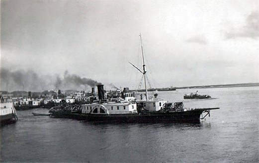
|
|
Как Гражданская война повлияла на жизнь нижегородцев? |
1. Продовольственная диктатура большевиков и Уренское восстание.
2. Прифронтовое положение Нижегородской губернии и созданиеВолжской военной флотилии.
3. Проявления террора на Нижегородской земле в 1918—1919 годах.
● 1918 год
● Продовольственная диктатура
● Продотряды
● Комбеды
● Уренское восстание
● Волжская военная флотилия
● Террор
● Нетрудовые элементы
►
1. Продовольственная диктатура большевиков и Уренское восстание.
|
|
Вспомните, почему при Временном правительстве возникли проблемы со снабжением городов продовольствием (см. предыдущий параграф). |
При советской власти, как и при Временном правительстве, крестьяне должны были продавать хлеб по установленным государством закупочным ценам. Они были низкими, и жители деревни отдавать выращенный урожай за такие суммы не хотели, тем более что деньги обесценивались. В результате продуктов в городах не хватало.
Весной 1918 года продовольственный паёк рабочего нижегородской типографии в месяц составлял: 14 фунтов муки, 6 фунтов печёного хлеба, 1 фунт соли, полфунта кофе, полфунта сахарного песка, четверть фунта табака. В Балахне, по свидетельству очевидца, люди ходили по улицам истощённые голодом, «жёлтые, худые, как скелеты, подбирая на мостовых огрызки садовых яблок, грязных, гнилых, и проглатывали их с жадностью». Основу питания составляли морковь, картофель и капуста. При этом даже такие продукты приходилось нелегально покупать у спекулянтов по высоким ценам.
Постепенно параллельно с официальной системой распределения продуктов сложился нелегальный рынок торговли ими. Советская власть попыталась его ликвидировать. В мае 1918 года Совнарком осуществил ряд мер под названием продовольственной диктатуры.
Продотряды собирают зерно
у крестьян
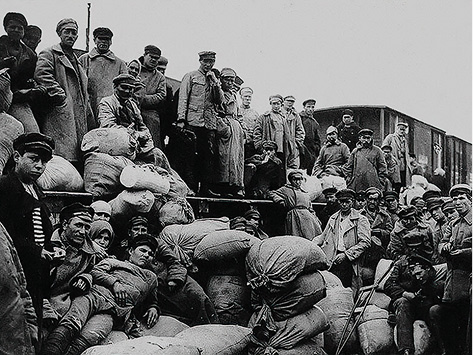
►
Крестьяне должны были сдать по государственным ценам зерно в распоряжение органов советской власти. Те, кто не свозил хлеб на ссыпные пункты, объявлялись врагами народа. Для них предусматривались тюремное заключение и конфискация имущества. Для осуществления продовольственной диктатуры были созданы вооружённые продотряды. Часть изъятого хлеба должна была поступать в распоряжение комбедов, создававшихся из малоимущих крестьян для помощи продотрядам.
Нижегородская деревня ответила на продовольственную диктатуру восстаниями. Самым продолжительным и кровавым во время Гражданской войны на территории современной Нижегородской области было Уренское восстание. Его центром стало село Урень, входившее в Варнавинский уезд Костромской губернии, а с 1922 года ставший частью Нижегородской губернии. В Уренском крае жило много зажиточных крестьян. В июне 1918 года в Урень прибыл продотряд во главе с членами исполкома Варнавинского совета.
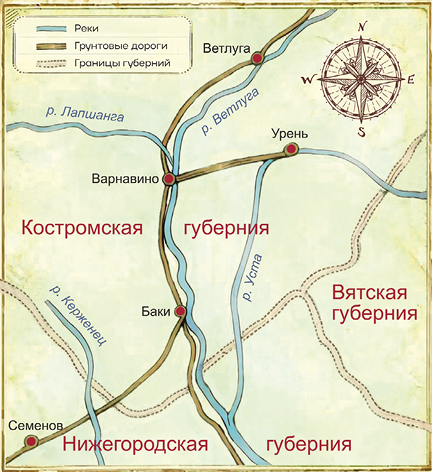
Поветлужье в 1918 году
►
Они проводили обыски и отбирали всё найденное зерно, причём за него не платили. Недовольных избивали.
Неодобрявшие действия Варнавинского совета, уренцы на собрании постановили отделиться от Варнавинского уезда. Они захотели создать самостоятельный Уренский уезд и присоединиться к Вятской губернии. Для обсуждения этого вопроса на 19 августа 1918 года был назначен общий сход жителей шести волостей Уренского края. Варнавинский совет решил не допустить это мероприятие и направил в Урень отряд Красной гвардии вместе со следственной комиссией. Красногвардейцы открыли огонь из пулемёта по участникам схода. Возмущённые уренцы кольями и топорами обратили пришельцев в бегство. Взятые в плен красногвардейцы были жестоко казнены.
Ситуацией воспользовались находившиеся в Урене участники Ярославского восстания из числа бывших офицеров. 20 августа при их участии был создан Комитет охраны Уренского края. Началась мобилизация мужчин в охранные дружины. Были разосланы гонцы во все волости Варнавинского и Ветлужского уездов с предложением присоединиться. Охранные дружины двинулись в город Варнавин, но не смогли его взять и отступили. Зато к восстанию присоединилось село Баки (ныне — Красные Баки). Восставшим также удалось захватить Ветлугу. Однако 4 сентября красные отбили этот город.
Памятник на братской могиле жертв Уренского восстания
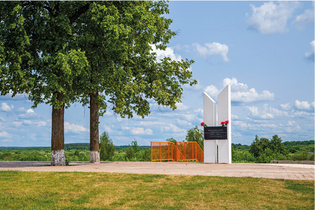
►
Из Нижнего Новгорода на пароходе был доставлен аэроплан. Он сбросил на Урень несколько бомб. Появление аэроплана вызвало ужас среди повстанцев. 15 сентября 1918 года части Красной армии заняли Урень. После того как восстание было подавлено, некоторых его участников расстреляли. На все селения, участвовавшие в мятеже, наложили контрибуцию.
Уренское и другие крестьянские восстания заставили большевиков смягчить и упорядочить политику продовольственной диктатуры. В январе 1919 года были изданы декрет и постановление о продразвёрстке, на основе которых распределялись задания по сбору продовольствия в конкретных губерниях, уездах и волостях. Было подчёркнуто, что изъятию подлежат только излишки хлеба. Однако этот принцип нередко нарушался. Для выполнения плана продразвёрстки изымался в том числе семенной хлеб. Это стало одной из причин массового голода в Поволжье в 1921 году.
2. Прифронтовое положение Нижегородской губернии и создание Волжской военной флотилии. Одновременно с Уренским восстанием вверх по Волге на Нижний Новгород наступали войска Ко́муча. Нижний Новгород, таким образом, стал прифронтовым городом.
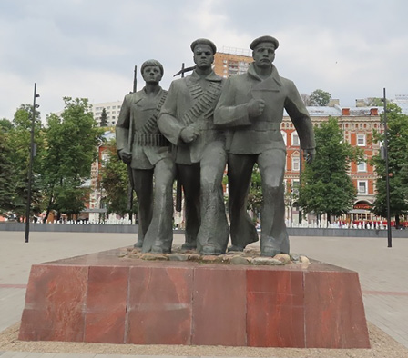
Памятник героям
Волжской военной флотилии
Скульптор П. И. Гусев,
архитектор В. Я. Яковлев
1977
►
Для отпора белым народный комиссар по военным и морским делам Л. Д. Троцкий предписал своему помощнику, балтийскому моряку Н. Г. Маркину создать в Нижнем Новгороде Волжскую военную флотилию. Маркин был назначен её комиссаром.
Штаб флотилии разместился в бывшем доме купца Долганова на улице Ильинской (д. 50). Эта улица впоследствии получила название Краснофлотской, а Софроновской площади, где находились пристани, было присвоено имя Маркина. В 1977 году на площади Маркина был установлен памятник матросам Волжской военной флотилии. Нижний Новгород стал основным местом базирования флотилии, а Сормовский завод в 1918—1920 годах являлся её главной ремонтной базой. Ядром первого состава флотилии стали десять буксиров, реквизированных Н. Г. Маркиным в Нижнем Новгороде. На Бору, на заводе «Теплоход», они переоборудовались в канонерские лодки.
Военные действия на Волге в это время разворачивались неудачно для красных. 7 августа 1918 года Казань была взята Народной армией Комуча под командованием полковника В. О. Каппеля. Штаб Восточного фронта Красной армии из Казани пришлось перевести в Арзамас. На здании бывшего Арзамасского духовного училища (ныне — Арзамасский филиал ННГУ им. Н. И. Лобачевского) установлена мемориальная доска: «Здесь с августа 1918 по февраль 1919 г. размещался штаб Красной Армии Восточного фронта».
Красноармейцы-нижегородцы перед отправкой на фронт
1918
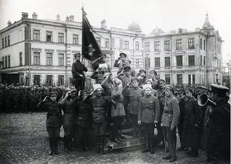
►
В этом здании работали командующие Восточным фронтом И. И. Вацетис, а после него — С. С. Каменев. Отсюда уходили телеграфные сообщения и приказы в воинские части под Казань.
3. Проявления террора на Нижегородской земле в 1918—1919 годах. В Казани войска Комуча захватили половину золотого запаса России. Другая половина хранилась в подвалах Нижегородской конторы Государственного банка. Каппель хотел захватить и это золото. В свою очередь большевикам требовалось во что бы то ни стало удержать Нижний Новгород. В этой связи В. И. Ленин 9 августа 1918 года отправил сообщение председателю Нижегородского губ-исполкома Г. Ф. Фёдорову: «В Нижнем, явно, готовится белогвардейское восстание. Надо напрячь все силы, составить тройку диктаторов (Вас, Маркина и др.), навести тотчас массовый meppop…»
Для выполнения указаний Ленина 10 августа в Нижнем Новгороде был создан чрезвычайный орган власти — Военно-революционный комитет (ВРК) во главе с Г. Ф. Фёдоровым. В. И. Ленин и Я. М. Свердлов регулярно поддерживали связь с ВРК, упрекая его членов в мягкотелости и требуя решительных действий.
Нижегородский ВРК начал аресты бывших офицеров царской армии. «Рабоче-крестьянский нижегородский листок» 16 августа сообщил о казни шести человек.
Ещё больший размах репрессии приняли после покушения на В. И. Ленина. Председатель Нижегородского ВРК Г. Ф. Фёдоров 31 августа 1918 года призвал ответить на это преступление «массовым террором против буржуазии и её приспешников» и предписал чекистам «беспощадно расстреливать всех, кто явно или тайно поддерживает контрреволюцию». В ночь на 1 сентября 1918 года группу арестованных вывезли на Мочальный остров на Волге и там казнили. Список жертв был опубликован в газете «Рабоче-крестьянский нижегородский листок» 1 сентября. Он включал 41 имя. Расстрелы проводились также в Арзамасе. 6 ноября 1918 года в Нижнем Новгороде были расстреляны епископ Лаврентий (Князев), священник А. А. Порфирьев и бывший член Государственного совета А. Б. Нейдгарт.
►
Многие из погибших не вели никакой борьбы против большевиков. Их казнили за принадлежность к дореволюционной элите.
Её представителей — бывших чиновников, священников, купцов, дворян — стали назвать нетрудовыми элементами. В 1918 году они были записаны в тыловое ополчение и были обязаны нести трудовую повинность. Она заключалась в разгрузке вагонов, заготовке дров, очистке проезжей части улиц от снега и нечистот. В 1919 году, когда началось перераспределение жилых помещений, новая власть стала переселять прежних владельцев из числа нетрудовых элементов в подвалы или отдавать часть их комнат новым жильцам из числа рабочих (это называлось «уплотнением»). Подобные действия, как и другие мероприятия большевиков, получили поддержку рабочих и крестьян.
|
|
Подумайте, какое мероприятие большевиков получило наибольшую поддержку крестьян (см. предыдущий параграф). |
В то же время недовольство рабочих и, особенно, крестьян вызвала начатая большевиками в 1918 году принудительная мобилизация в Красную армию для участия в Гражданской войне. После объявления о мобилизации в ночь на 2 сентября 1918 года вспыхнуло восстание в городе Курмыше. Группа местных жителей, в том числе бывших офицеров, захватила город, образовав Комитет спасения родины и революции. Против восставших было направлено несколько частей Красной армии, которые 5 сентября взяли Курмыш. После этого в городе и уезде начались расправы. В частности, было расстреляно 30 жителей села Бортсурманы. Массовая казнь участников восстания была осуществлена в Курмыше.
В связи с мобилизацией в октябре 1918 года вспыхнули волнения в Ардатовском уезде. Они были жестоко подавлены. 13 января 1919 года в деревне Семёновке Сергачского уезда произошло восстаниемобилизованных, в ходе которого погибло четверо коммунистов. В ответ чекисты расстреляли около 50 жителей деревни.
В 1919 году массовых восстаний против мобилизации уже не было. Но значительный размах приняло дезертирство из Красной армии. ►
С февраля по июнь 1919 года в Нижегородской губернии было отмечено 50 269 случаев дезертирства. Значительная часть дезертиров пряталась в лесах. Их вылавливали и судили. В некоторых местах они объединились в вооружённые отряды. Их называли «зелёными». Особенно большой размах движение «зелёных» приняло в Семёновском уезде. Его возглавил бывший офицер, сын полицейского Леонид Успенский. Отряд Успенского совершал нападения на советские учреждения уезда.
Для поимки «зелёных» в Семёновский уезд отправились чекисты из Нижнего Новгорода. В разведку были направлены местные коммунисты: Иван Козлов, Анатолий Дельфонцев и Никандр Завьялов. Около деревни Малое Оленево они встретили отряд вооружённых людей, которых приняли за красноармейцев, и рассказали, что ищут дезертиров. Но это были «зелёные». Они допросили и расстреляли трех коммунистов. В 1979 году Козлову, Дельфонцеву и Завьялову в центре Семёнова был установлен памятник.
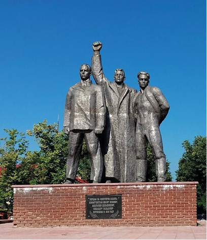
Памятник трём коммунистам
в Семёнове
Скульптор А. А. Бичуков
1979
►
|
|
Знакомимся с историческим источником |
Нижегородский писатель Николай Кочин
о базарах времён хлебной монополии
На задах базарного села телеги останавливаются на усадах знакомых людей, за овинами, подле омётов или в проулках. Мужики, оглядываясь, сходят с телег, оставляя на них баб или ребятишек, а сами отправляются на базарную площадь, узнавать ситуацию: будет ли облава на хлеботорговцев и на что сегодня больше спрос, нет ли рядом милиции, не слышно ли что-нибудь насчёт отмены хлебной монополии. Но монополия в прежней силе, милиция ходит по площади, знакомые советовали быть осторожнее.
Удивительно колоритны были эти базары времён военного коммунизма! Торгуются, бывало, на усадах, в саду под яблонями, в трактирах, за заборами, где-нибудь на околице, а главным образом на частных дворах. На площади продают яблоки с возов, лапти и всякую мелочь. Всё остальное упрятано с глаз.
Народу на базаре спозаранок видимо-невидимо. Тот, кому даже делать было нечего, приезжал увидеться с приятелями… посудачить о комбедах — известна любовь мужика к такого рода сборищам. Подлинное торжище перенесено было с площади на околицу.
Вот выныривает проворная фигура в кушаке из-за бревенчатого сарая и спрашивает встречного:
— Хлебец везёшь, приятель?
— А тебе что? — спрашивает тот настороженно.
— На базаре отберут, знай — монополия. Сколько у тебя?
Мужик мнётся и переглядывается с бабой.
— Сто семьдесят дам за пуд, а монопольная цена — десятка, — говорит человек в кушаке. — Вези за мной на двор к куму, думать нечего. Пока нет милиции рядом да комитетчиков, дело и обладим.►
Мужик заворачивает на усад и скрывается в яблонях. Перекупщики-спекулянты таким образом устрашали мужиков и скупали у них хлеб ещё при въезде в базарное село.
Подведём итоги
В мае 1918 года Советское правительство осуществило ряд мер под названием продовольственной диктатуры. Нижегородская деревня ответила на продовольственную диктатуру восстаниями. Самым продолжительным и кровавым было восстание в Поветлужье. Его центром стало село Урень. В то же самое время, когда шло Уренское восстание, в сторону Нижнего Новгорода наступали белые. Нижний Новгород стал прифронтовым городом. Для отпора белым создали Волжскую военную флотилию. В. И. Ленин приказал во чтобы то ни стало удержать Нижний Новгород. Для выполнения его указаний в Нижнем Новгороде был создан чрезвычайный орган власти — Военно-революционный комитет. Так Нижний Новгород остался под контролем красных. В Арзамасе разместился штаб Восточного фронта Красной армии. Недовольство рабочих и, особенно, крестьян, вызвала начатая большевиками принудительная мобилизация в Красную армию для участия в Гражданской войне. Она спровоцировала восстания, а после их подавления — массовое дезертирство. Значительная часть дезертиров пряталась в лесах. Их вылавливали и судили. В некоторых местах они объединились в вооружённые отряды. Их называли «зелёными». Особенно большой размах движение «зелёных» приняло в Семёновском уезде.
|
|
Исторический словарь |
Белые — так в годы Гражданской войны называли противников красных (большевиков).
Волость — административно-территориальная единица, часть уезда.►
Голод в Поволжье — массовый голод, особенно сильно проявившийся в Самарской и Саратовской губерниях, в 1921 году. Нижегородская губерния не была отнесена к числу голодающих. Однако население её шести уездов (Сергачского, Лукояновского, Васильского, Починковского, Княгининского, Воскресенского) сильно страдало от недоедания.
Комбеды — комитеты бедноты; создавались большевиками в сельской местности по декрету 11 июня 1918 года; во многих местах заменили советы в качестве органов государственной власти; распределяли помещичьи земли, изымали хлеб у зажиточных крестьян, проводили набор в Красную армию; в конце 1918 — начале 1919 года были объединены с сельскими советами.
Комуч — Комитет членов Учредительного собрания, правительство, организованное в 1918 году белыми в Самаре.
Продотряды (продовольственные отряды) — формировались из рабочих и крестьян-бедняков; изымали продукты в сельской местности.
Продразвёрстка (продовольственная развёрстка) — система обязательной сдачи крестьянами государству излишков сельхозпродукции по фиксированным ценам в годы Первой мировой и Гражданской войн.
Террор (от латинского terror — страх, ужас) — применение методов физической расправы к политическим противникам. Постановление о «красном терроре» было принято Советом народных комиссаров 5 сентября 1918 года, отменено в ноябре 1918 года. Соответственно «белый террор» применялся белыми на контролируемой ими территории. Частью «белого террора» были индивидуальные террористические акты против лидеров большевиков, например покушение на В. И. Ленина.
Ярославское восстание — вооружённое восстание, поднятое эсерами против большевиков в Ярославле в июле 1918 года.
|
|
Обратите внимание |
Николай Григорьевич Маркин — организатор и комиссар Волжской военной флотилии, его именем названа площадь в Нижнем Новгороде.
Август — сентябрь 1918 года — Уренское восстание.►
|
|
Сформулируйте один-два вывода по теме параграфа. Приведите два-три аргумента. |
|
|
Вопросы и задания |
1. Какое событие в Нижегородском крае 1918—1920 годов вы бы выделили в качестве иллюстрации наиболее острого противостояния враждующих сторон? Обоснуйте свой выбор.
2. Историки используют термины «красный террор» и «белый террор». Правомерно ли, на ваш взгляд, их применение к событиям Гражданской войны в Нижегородском крае?
3. Какие памятные места, связанные с Гражданской войной, на территории Нижегородской области вам известны?
4. Прочитайте текст исторического источника. Выпишите все незнакомые слова и узнайте их значение с помощью сети Интернет. Подумайте, почему крестьяне продавали хлеб перекупщикам.
5. Если бы вам поручили придумать надпись на памятнике участникам Гражданской войны на территории Нижегородской области, что бы вы написали?
|
|
Составьте небольшой устный или письменный рассказ с использованием нескольких дат, личностей и терминов, помещённых в начале параграфа. |
|
|
Сформулируйте один-два вывода по теме главы. Приведите два-три аргумента. |
|
|
Вопросы и задания к главе I |
1. Сравните уровень продовольственного снабжения нижегородцев в годы Первой мировой войны (см. § 1), в 1917 году (см. § 2) и во время Гражданской войны.
2. Некоторые историки считают, что Гражданская война началась после захвата власти большевиками — в октябре 1917 года. Подумайте, подтверждают или опровергают это мнение факты из истории Нижегородского края.►
3. Как вы думаете, какие лозунги и мероприятия большевиков получили поддержку большинства жителей Нижегородской губернии, а какие нет? Для ответа используйте материалы § 2 и 3.
4. На основе материалов § 2 и 3 дайте оценку позиции военных (офицеров, солдат, матросов). Являлись ли они сторонниками революции, поддерживали ли лозунги и действия большевиков?
Итоги главы
В годы Первой мировой войны в Нижний Новгород эвакуировали раненых, промышленные предприятия и беженцев.
После Февральской революции к власти пришло Временное правительство. В результате его неумелой политики снабжение Нижнего Новгорода продовольствием летом 1917 года резко ухудшилось. Кроме нехватки продуктов питания нижегородцев беспокоила захлестнувшая город волна преступности. Власть Временного правительства слабела. В ходе Октябрьской революции оно было свергнуто большевиками.
2 ноября 1917 года по призыву большевиков Нижегородский Совет рабочих и солдатских депутатов провозгласил в губернии советскую власть.
Советская власть национализировала заводы и фабрики, взяла под контроль транспорт, промышленность, банковское дело.
В мае 1918 года Советское правительство осуществило ряд мер под названием продовольственной диктатуры. Нижегородская деревня ответила на продовольственную диктатуру восстаниями. Самым продолжительным и кровавым было Уренское восстание.
Одновременно с Уренским восстанием вверх по Волге к Нижнему Новгороду наступали белые. Для отпора белым в Нижнем Новгороде создали Волжскую военную флотилию.
Начатая большевиками в 1918 году принудительная мобилизация в Красную армию вызвала недовольство рабочих и, особенно, крестьян. Формами протеста против мобилизации стали восстания и массовое дезертирство. ►
Глава II
Наш край в 1920—1930-х годах
Плакат времён нэпа
Художник М. М. Черемных
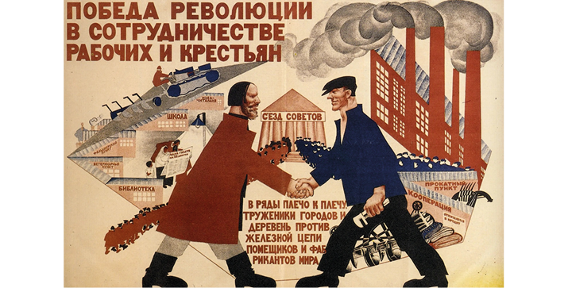
В марте 1921 года большевики вынуждены были перейти от политики военного коммунизма к новой экономической политике (нэпу). Благодаря нэпу был восстановлен промышленный и аграрный потенциал Нижегородской губернии и других регионов. Но Советский Союз оставался преимущественно аграрной страной, технически отсталой от государств Запада, и не мог им противостоять в случае военной агрессии. Поэтому большевистское руководство во главе с И. В. Сталиным в конце 1920-х годов отказалось от нэпа и провозгласило курс на ускоренную индустриализацию и сплошную коллективизацию. Наш край стал одним из ключевых регионов для осуществления грандиозных планов индустриализации. Этому способствовали выгодное географическое положение, развитая транспортная инфраструктура, устоявшиеся промышленные традиции. ►
§ 4
Нижегородская губерния в 1920-х годах
Нижегородская ярмарка 1924 года
Плакат
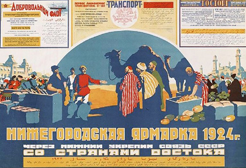
|
|
Как повлиял нэп на социально-экономическое развитие нашего края? |
1. Переход к новой экономической политике и возрождение мелких и средних предприятий.
2. Нэп и развитие крупной промышленности.
3. Нижегородская деревня в условиях нэпа.
● Военный коммунизм
● Продразвёрстка
● Новая экономическая политика
● Продналог
● Расслоение деревни
● Денационализация
● Хозрасчёт
● 1921 год
● 1922 год
● С. В. Малышев
►
1. Переход к новой экономической политике и возрождение мелких и средних предприятий. К началу 1921 года Нижегородская губерния, как и вся страна, находилась в состоянии глубокого кризиса. Политика военного коммунизма с принудительным изъятием хлеба у крестьян, национализацией, запретом частной торговли нанесла серьёзный урон экономике. Промышленное производство в губернии сократилось до 10—15 % от довоенного уровня. Крупнейшие предприятия — Сормовский завод, Выксунские металлургические заводы — практически остановились. На треть уменьшились посевные площади и поголовье крупного рогатого скота в губернии. Росло массовое недовольство среди крестьян. Эти явления в масштабе страны заставили советское руководство в марте 1921 года отказаться от военного коммунизма и провозгласить новую экономическую политику с целью выхода из кризиса и восстановления экономики. Нэп допускал рыночные отношения, вместо продразвёрстки вводился продналог (его размер объявлялся заранее), разрешалась торговля (излишки продукции крестьянин мог продать на рынке), дозволялось открытие арендных и частных предприятий мелкой и средней промышленности.
«Продовольственный
налог —
это маховое колесо
государственного
механизма»
Плакат. 1921
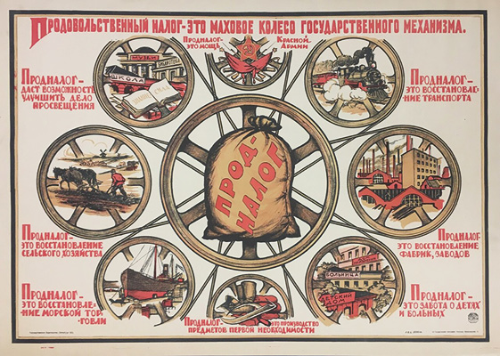
►
Постановление СНК о мерах по развитию кустарной и мелкой промышленности в форме частных предприятий и кооперативов для Нижегородской губернии имело большое значение, так как здесь было традиционно развито кустарное производство. Кустарными районами общероссийского значения считались Павловский сталеслесарный, Семёновский деревообрабатывающий, Мурашкинский овчинно-скорняжный и Нижегородский сетевязальный. В уездах стали учреждаться промысловые объединения кустарей — арте́ли. В Павловском сталеслесарном районе были созданы Вязовская, Коровинская и другие артели, а всего в 1921—1928 годах в этом районе действовала 51 артель. В одном только Краснобаковском уезде в 1926 году в кооперативах состояло 70 % трудоспособных граждан. Небольшие предприятия были тесно связаны с рынком, успешно реализовывали свою продукцию. Это способствовало быстрому восстановлению данного сектора экономики.
В условиях свободной торговли возрождались городские базары. Нэп вызвал оживление экономической жизни края, способствовал укреплению товарообмена между городом и селом. Восстанавливались нарушенные торговые связи России с другими странами. Весной 1922 года в Нижний Новгород был направлен уполномоченный Совета труда и обороны С. В. Малышев, которого современники называли «советским красным купцом». С его участием были восстановлены Главный ярмарочный дом и 18 торговых корпусов.
На Нижегородской
ярмарке
1922
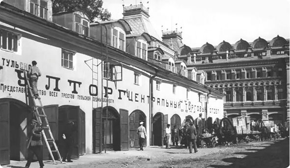
►
1 августа 1922 года вновь начала работать Нижегородская ярмарка. Её основными участниками были государственные органы, кооперативные организации, иностранные фирмы. Внешняя торговля на ярмарке происходила преимущественно со странами Востока: Персией, Турцией, Афганистаном, Китаем, Ираком, Монголией.
В губернии возрождался частный капитал в форме кустарных, арендных и акционерных предприятий. Широкое развитие частного сектора наблюдалось, например, в Сосновской волости, где с введением нэпа активизировались частные предприниматели. Так, в 1924 году заведующий государственной фабрикой № 12 взял фабрику в аренду, став частником. В начале 1925 года 11 частных предпринимателей организовали в селе Виткулове трест «Металлопром», управление которого находилось в Павлове. Основную работу в тресте выполняли наемные рабочие. О масштабах развития мелкой промышленности в губернии в период нэпа свидетельствует тот факт, что в 1927 году её валовая продукция составляла 50 % всей товарной промышленной продукции губернии, а в Поветлужье превосходила государственную в четыре раза. Трест «Металлопром» просуществовал до 1929 года и был закрыт под предлогом неуплаты налогов. К этому времени в губернии ликвидировали и другие частные предприятия, а в 1930 году была закрыта Нижегородская ярмарка, что было связано с полным отказом от рыночных отношений.
2. Нэп и развитие крупной промышленности. Крупные и средние предприятия оставались в руках государства. Стратегически важные из них финансировались из бюджета, остальные — переводились на хозяйственный расчёт (хозрасчёт). Это означало, что предприятия должны были покрывать свои расходы доходами от реализации продукции. Для управления группами родственных предприятий создавались тре́сты — государственные промышленные объединения металлообрабатывающих заводов, текстильных фабрик, предприятий по переработке животного сырья. Тресты сами планировали производство, закупали сырьё, реализовывали готовую продукцию. Так, 1 апреля 1925 года был организован Нижегородский государственный стекольный трест «Нижкрайстек-лотрест». ►
В его состав в 1925 году входили шесть стекольных заводов: «Красный боец», «Труд», имени Товарища Воровского (Ветлужский уезд), «Красная звезда», имени Степана Разина, завод «Революционер» (Краснобаковский уезд). Для оптимизации сбыта и снабжения тресты добровольно объединялись в синдика́ты — общесоюзные или региональные сбытовые организации. Например, текстильные тресты входили во Всероссийский текстильный синдикат, который занимался закупкой хлопка и продажей тканей.
В 1921—1922 годах некоторые заводы сократили производство или находились на грани закрытия. Завод «Красное Сормово» перешёл от ремонта паровозов и производства вооружения к выпуску гражданской продукции: сельскохозяйственных машин, дизелей, первых советских танков МС-1. В 1927 году здесь была построена первая в СССР цельносварная баржа. Выксунские металлургические заводы восстановили выпуск чугуна, стали, проката, железнодорожных колёс. Молитовская льнопрядильная ткацкая фабрика — одно из крупнейших предприятий отрасли — в 1922 году была переименована в фабрику «Красный Октябрь». В целом к концу 1920-х годов промышленное производство в губернии достигло уровня 1913 года.
3. Нижегородская деревня в условиях нэпа. Введение продналога стало главным стимулом для крестьянства. Зная твёрдый объём сельскохозяйственной продукции для сдачи государству, крестьянин был заинтересован в увеличении производства, чтобы больше урожая оставалось на продажу. Это привело к быстрому восстановлению сельского хозяйства. К середине 1920-х годов были в основном восстановлены посевные площади, поголовье скота, урожайность. Вместе с тем преобладающей формой хозяйствования оставалось единоличное крестьянское хозяйство. В 1923 году разразился первый серьёзный кризис нэпа — кризис сбыта. Государственная промышленность, восстанавливаясь медленнее сельского хозяйства и обладая монопольным положением, взвинчивала цены на промышленные товары (гвозди, ткани, керосин). А цены на сельхозпродукцию оставались низкими. Такое явление получило название «ножницы цен». ►
Крестьяне, не имея возможности выгодно продать хлеб и купить необходимые товары, перестали везти зерно на рынок. Возникли трудности со снабжением городов. Кризис был преодолён административным снижением промышленных цен.
Нэп способствовал расслоению деревни. Выделился слой зажиточных крестьян — кулаков, которые использовали наёмный труд, имели сельхозмашины и могли производить товарный хлеб. Однако большинство крестьянских хозяйств были бедняцко-середняцкими. Общий же уровень сельского хозяйства губернии оставался низким: урожайность зерна составляла всего 8 центнеров с десятины, продуктивность скота была незначительной. Причинами такого положения дел в деревне власти считали малоземелье, дробность крестьянских хозяйств и их слабую обеспеченность рабочим скотом и инвентарем. В 1926 году 48 % крестьянских хозяйств не имели лошадей, 23 % были бескоровными, 66 % хозяйств обходились без плугов. На рынок крестьяне могли поставить лишь четверть произведенной сельскохозяйственной продукции. Деревня с бедняцко-середняцким большинством не могла выполнить роль поставщика продуктов питания для городов и сырья для промышленности.
«Крестьянин кормит рабочего. Рабочий знает это и в долгу перед крестьянином не останется!»
Плакат. 1921
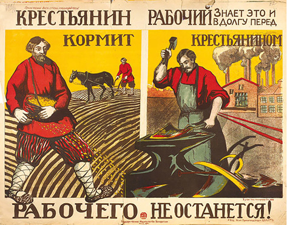
►
|
|
Знакомимся с историческим источником |
Реклама Всероссийского кожевенного синдиката
Центральный архив Нижегородской области
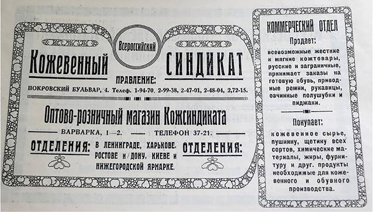
Подведём итоги
Переход от военного коммунизма к новой экономической политике способствовал возрождению в крае мелкой промышленности, частных и арендных предприятий, развитию артелей. Восстановился товарообмен между городом и селом, возобновила работу Нижегородская ярмарка. Стратегически важные предприятия крупной промышленности оставались в руках государства, на его бюджетном финансировании. Остальные госпредприятия переводились на хозяйственный расчёт. Быстрыми темпами восстанавливались крестьянские хозяйства. В середине 1920-х годов экономика края в основном была восстановлена. Но нэп вызывал кризисы, социальное расслоение деревни, противоречил стратегическим планам большевиков. Поэтому, провозгласив курс на индустриализацию и коллективизацию, советское руководство отказалось от нэпа.
Исторический словарь
Артель — добровольное объединение людей для совместной работы, имевшее хозяйственную самостоятельность.►
Военный коммунизм — экономическая политика Советского государства в годы Гражданской войны (1918—1921), основанная на продразвёрстке, национализации, запрете частной торговли, всеобщей трудовой повинности.
Новая экономическая политика (нэп) — экономическая политика, проводившаяся в Советском государстве в 1921—1928 годах; допускала элементы рыночной экономики (свободную торговлю, мелкое частное предпринимательство) при сохранении государственного контроля над крупной промышленностью и финансами.
Продовольственный налог (продналог) — натуральный налог, взимавшийся с крестьянских хозяйств с 1921 года, заменивший продразвёрстку; он объявлялся заранее и был меньше по объёму.
|
|
Обратите внимание |
Март 1921 года — начало новой экономической политики в России.
1922—1929 годы — возобновление работы Нижегородской ярмарки.
|
|
Сформулируйте один-два вывода по теме параграфа. Приведите два-три аргумента. |
|
|
Вопросы и задания |
1. Почему и зачем советская власть от военного коммунизма перешла к новой экономической политике?
2. Какие отрасли мелкой и кустарной промышленности Нижегородской губернии в годы нэпа восстановились быстрее и почему?
3. Какие крупные предприятия Нижегородской губернии были восстановлены и модернизированы в период нэпа?
4. Почему Нижегородская ярмарка стала символом нэповских преобразований в регионе?
5. В чём проявлялось противоречие между интересами государства и крестьянства в Нижегородской губернии в период нэпа?
|
|
Составьте небольшой устный или письменный рассказ с использованием нескольких дат, личностей и терминов, помещённых в начале параграфа. |
►
§ 5
Индустриализация и коллективизация в нашем крае
в годы первых пятилеток: конец 1920-х — 1930-е годы
Первый автомобиль сходит с конвейера автозавода
29 января 1932 года
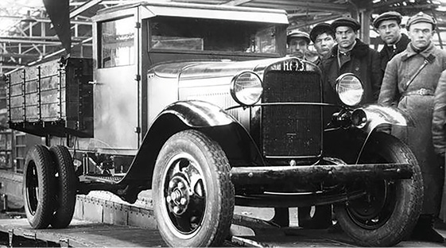
|
|
Как в годы первых пятилеток наш край превратился в один из крупнейших индустриальных центров страны? |
1. Административно-территориальные изменения в крае.
2. Индустриализация Нижегородского края в годы первых пяти леток.
3. Легендарный лётчик-испытатель В. П. Чкалов.
4. Коллективизация в нижегородской деревне.
● 14 января 1929 года
● 1929—1930 годы
● 1 января 1932 года
● 7 октября 1932 года
● 18—20 июня 1937 года
● В. П. Чкалов
● С. С. Дьяконов
● М. Горький
● Пятилетка (первая, вторая)
● Раскулачивание
● Колхоз
● Стахановское движение
● «Великий перелом»
►
1. Административно-территориальные изменения в крае. Перед началом масштабных экономических преобразований в Советском Союзе требовалось создать новую, более управляемую и эффективную систему административно-территориального деления, призванную заменить старую губернскую систему, плохо приспособленную для планового хозяйства. 14 января 1929 года была образована Нижегородская область (с 15 июля того же года — Нижегородский край, с 1932 года — Горьковский край). Это было не просто переименование, а коренная ломка границ. В состав нового края вошли бывшая Нижегородская губерния, некоторые районы Вятской, Костромской, Владимирской и Пензенской губерний, а также Чувашская АССР, Марийская и Вотская (Удмуртская) автономные области. Создание Нижегородского края стало частью всесоюзной административной реформы, заменившей старое деление (губерния — уезд — волость) на новое (область/край — округ — район). Цель её состояла в усилении централизованного контроля и улучшении управления экономикой.
|
|
Предположите, как создание Нижегородского края с включением в его состав промышленных территорий соседних губерний способствовало концентрации ресурсов для индустриализации. |
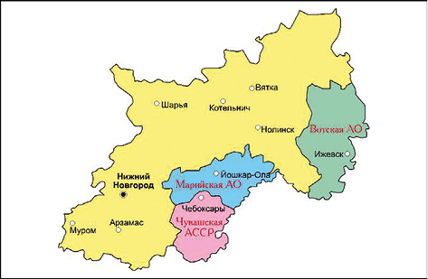
Нижегородский
(Горьковский) край
►
Край стал огромным образованием с населением около 7 миллионов человек. Он делился на промышленно-территориальные округа и национальные автономии. Управление было строго централизовано: краевой комитет ВКП(б) и исполнительный комитет краевого совета (крайисполком) обладали всей полнотой власти. Важный вклад в реализацию ключевых задач развития края в годы первых пятилеток внесли его партийные руководители А. А. Жданов и Э. К. Прамнек. При них основные ресурсы направлялись на приоритетные предприятия и стройки, формировался индустриальный облик края. 7 октября 1932 года край и его центр были переименованы в Горьковский край и город Горький — в честь уроженца Нижнего Новгорода писателя Максима Горького (А. М. Пешкова) в связи с 40-летием его литературной и общественной деятельности. Это был идеологический акт, призванный подчеркнуть связь региона с пролетарской культурой и утвердить новые советские символы. Административная реформа превратила Нижегородский регион в мощный управленческий и экономический комплекс, людские, сырьевые, финансовые ресурсы которого могли быть централизованно перераспределены на выполнение задачи индустриализации.
2. Индустриализация Нижегородского края в годы первых пятилеток. Индустриализация в крае носила ударный, «штурмовой» характер. Регион стал местом возведения гигантов первой пятилетки, определивших его экономический профиль на десятилетия вперед.
Автомобильной столицей СССР стал Горьковский автомобильный завод (ГАЗ). В мае 1929 года был подписан договор о технической помощи с американской фирмой «Форд Мотор Компани». 1 января 1932 года состоялся пуск первой очереди ГАЗа, а 29 января с конвейера сошел первый грузовик ГАЗ-АА («полуторка»). В 1935 году был выпущен 100-тысячный автомобиль. Первым директором завода стал С. С. Дыбец, возглавлявший предприятие с 1 января по 28 сентября 1932 года. Вторым директором, также считающимся одним из организаторов завода, был назначен С. С. Дьяконов. ГАЗ стал градообразующим предприятием Автозаводского района — первого в городе района, построенного по единому плану. ►
Завод обеспечил страну грузовым и легковым автотранспортом, став символом советской индустриальной мощи.
В химический щит СССР превратился город Дзержинск. На месте небольшого посёлка Растяпино вырос крупнейший центр химической промышленности. Завод «Корунд» производил цианистые соединения, «Заводстрой» (ныне «Капролактам»), «Чернореченские химические заводы» — взрывчатые вещества. На Азотно-туковом заводе впервые в СССР стали выпускать аммиак и азотные удобрения. Дзержинск проектировался как образцовый социалистический город, но в условиях спешки и приоритета производства стал городом с тяжёлой экологической обстановкой. Его рост — яркий пример индустриализации «любой ценой».
Модернизировались традиционные отрасли промышленности. Завод «Красное Сормово» перешёл от выпуска речных пароходов к производству танкеров и дизельных судов, а в годы Великой Отечественной войны — подводных лодок и танков Т-34. Завод № 21 (ныне — «Сокол») стал одним из ведущих производителей истребителей (И-5, И-16, позднее ЛаГГ-3). Нижегородский машиностроительный завод выпускал оборудование для химической и нефтяной промышленности.
Памятник автомобилю ГАЗ-АА перед главной проходной
Горьковского автомобильного
завода
1982
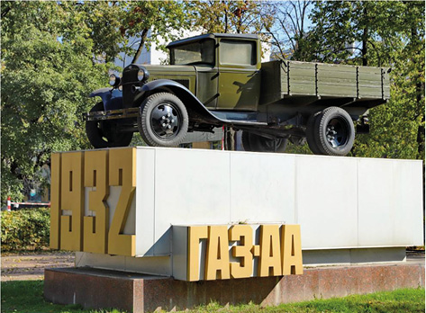
►
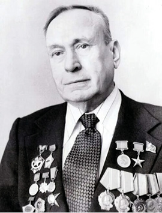
А. Х. Бусыгин
Широкое распространение получили ударничество — массовое движение рабочих за перевыполнение планов — и стахановское движение. С середины 1930-х годов развернулось движение новаторов производства, многократно перевыполнявших нормы. А. Х. Бусыгин — кузнец Горьковского автомобильного завода, зачинатель стахановского движения в крае — 10 сентября 1935 года при норме 675 валов в смену отковал 966 валов.
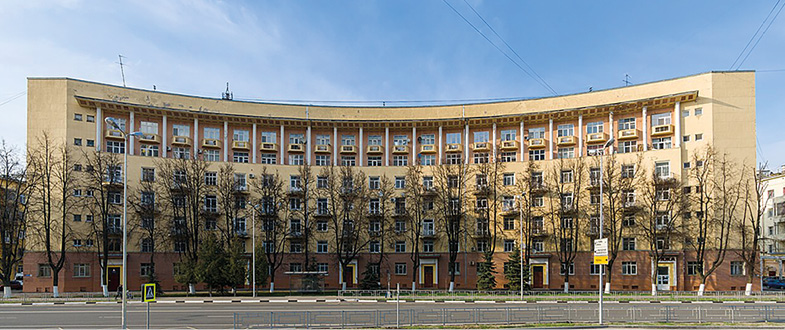
Радиусный дом на Молодёжном проспекте в Соцгороде Автозавода
Архитекторы Н. С. Полюдов и Н. А. Красильников. 1937
►
На автогиганте быстро росло число рабочих, в основном за счёт массового притока в город крестьян. Жилищный кризис был колоссальным: сначала люди жили в бараках и землянках, лишь позже началось строительство рабочих кварта́лов.
Таким образом, индустриализация кардинально изменила экономический ландшафт края, создав новые города и отрасли. Горьковский край стал одним из главных арсеналов страны. Эти впечатляющие успехи были достигнуты во многом благодаря самоотверженному труду и небывалому энтузиазму горьковчан.
3. Легендарный лётчик-испытатель В. П. Чкалов. Символом эпохи стал В. П. Чкалов — смелый, талантливый выходец из народа, преодолевавший любые преграды. Чкалов родился в селе Василёво Балахнинского уезда (ныне — город Чкаловск). Его имя стало брендом региона, источником гордости. Как лётчик-испытатель Чкалов работал на московских заводах, но испытывал и самолёты, которые производились в Горьком. Его смелость и новаторские приёмы пилотирования (например, испытание истребителя И-16 конструкции Н. Н. Поликарпова) помогали совершенствовать машины, которые затем серийно выпускались на горьковских заводах.
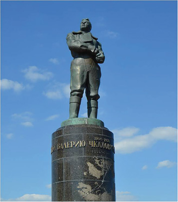
Памятник В. П. Чкалову
Скульптор И. А. Менделевич,
архитекторы И. Г. Таранов
и В. С. Андреев
1940
►
Триумфом советской технологии стал беспосадочный перелёт 20—22 июля 1936 года по маршруту Москва — остров Удд (ныне — остров Чкалов) в Охотском море на самолёте АНТ-25 (экипаж: В. П. Чкалов, Г. Ф. Байдуков, А. В. Беляков) дальностью 9374 километра. 18—20 июня 1937 года состоялся легендарный исторический беспосадочный перелёт через Северный полюс в США (Москва — Ванкувер, штат Вашингтон) протяжённостью 8504 километра. Это был мировой прорыв, доказавший возможности советской авиации и Арктики как транспортного пути. Перелёты имели огромный пропагандистский эффект. Чкалов стал мировой знаменитостью, живым символом мощи СССР, «сталинским соколом». Его образ использовался для мобилизации молодёжи, воспевания отваги и преданности Родине. 15 декабря 1938 года В. П. Чкалов погиб при испытании нового истребителя И-180. В Горьком ему был установлен памятник, его именем названа улица, а родное село Василёво стало городом Чкаловском, с площадью, названной в честь отважного лётчика.
4. Коллективизация в нижегородской деревне. Задачи индустриализации, рост городского населения диктовали необходимость резкого увеличения производства продовольствия и сельскохозяйственного сырья. Но в нижегородской деревне преобладали маломощные единоличные крестьянские хозяйства с низкой товарностью. Они не могли обеспечить продовольствием растущие потребности края. Выходом из создавшегося положения советское руководство считало проведение коллективизации сельского хозяйства. Этот курс был объявлен в СССР в 1927 году, но процесс организации колхозов первоначально проходил медленно. В ноябре 1929 года И. В. Сталин в статье «Год великого перелома» объявил, что в колхозы пошли основные массы крестьянства, тем самым призвал к их (колхозов) массовой организации. После этого в Нижегородском крае, как и по всей стране, началось проведение сплошной и ускоренной коллективизации.
В деревнях местные власти на собраниях в спешном порядке заставляли крестьян принимать решения о создании коллективных хозяйств. ►
С предприятий Нижнего Новгорода в сельскую местность для организации колхозов направлялись рабочие-коммунисты — двадцатипятитысячники. Вместо принципа добровольности при организации колхозов широко использовался административный нажим. Крестьян вынуждали вступать в коллективные хозяйства под угрозой раскулачивания и выселения. Так на местах претворялся в жизнь сталинский лозунг о необходимости «ликвидации кулачества как класса». В категорию «кулаков» записывали не только зажиточных крестьян, не желавших вступать в колхозы, но и середняков и даже бедняков, не согласных с насильственными методами создания колхозов. Они подлежали аресту или высылке в отдаленные регионы страны, их имущество конфисковывали и передавали колхозам.
А те, кто коллективизацию поддерживал, наоборот, мог рассчитывать на некоторые льготы для вступающих: освобождение на два года от сельхозналога, списание недои́мок за прошлые годы, материальную помощь при покупке скота или строительстве домов. Действуя таким образом, власти справились с поставленной задачей. В Горьковской области коллективизация была завершена к концу второй пятилетки, когда в колхоз вступило более 90 % крестьянских хозяйств.
Результаты коллективизации неоднозначны. С одной стороны, в колхозах появилась сельскохозяйственная техника, колхозники более активно стали использовать достижения агрономической науки, возросло применение удобрений.
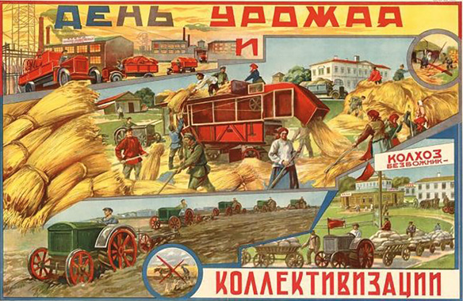
День урожая
и коллективизации
Плакат. 1930
►
Всё это способствовало росту урожайности. С колхозным строительством на селе появились электричество, радио, кино, телефонная связь, строились школы, медпункты, дороги. С другой стороны, насильственные методы организации колхозов, раскулачивание и высылка крестьян в отдалённые районы страны стали трагическими страницами в истории горьковской деревни. Через колхозы государство по низким ценам изымало сельхозпродукцию. Колхозникам не выдавали паспорта, они были лишены свободы передвижения. Жизнь в колхозах оставалась тяжёлой.
|
|
Знакомимся с историческим источником |
Самолёт АНТ-20 («Максим Горький»)
Марка. 1937
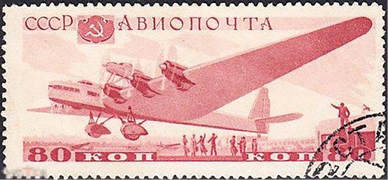
Подведём итоги
Процессы индустриализации и коллективизации в Нижегородском (Горьковском) крае в 1930-х годах представляли собой две стороны одной медали — политики форсированной модернизации СССР. Регион с новыми отраслями промышленности и крупнейшими предприятиями («Красное Сормово», ГАЗ, авиазавод № 21, химкомбинаты Дзержинска и др.) превратился в мощный индустриальный центр общесоюзного значения. ►
Тем самым был заложен экономический фундамент под его дальнейшее развитие в XX веке. Город Горький стал арсеналом будущей Великой Победы, здесь в большом количестве производились оружие и боеприпасы. Колхозная деревня обеспечивала фронт продовольствием, помогала блокадному Ленинграду. Но наследие первых пятилеток оказалось противоречивым. С одной стороны — мощная промышленность, новые города, прорывные технологии, трудовой энтузиазм масс. С другой — насильственные методы организации колхозов, трагические судьбы десятков тысяч крестьян. Понимание этого двойственного итога необходимо для объективной оценки одного из самых судьбоносных периодов в истории нашего края и страны в целом.
|
|
Исторический словарь |
Двадцатипятитысячники — рабочие, направленные в сельские районы с целью организации колхозов в период коллективизации сельского хозяйства; их численность составляла 25 тысяч человек.
Индустриализация — процесс форсированного создания крупного промышленного производства (отраслей тяжёлой промышленности) с целью преодоления технической отсталости страны, достижения экономической независимости, укрепления обороноспособности и превращения СССР из аграрного государства в индустриальное.
Коллективизация — объединение единоличных крестьянских хозяйств в коллективные хозяйства (колхозы).
Пятилетка — план развития народного хозяйства СССР, рассчитанный на пять лет.
Раскулачивание — лишение зажиточных крестьян (кулаков) средств производства, земли и собственности в период коллективизации.
Стахановское движение — массовое движение последователей шахтёра Алексея Стаханова в СССР в годы первых пятилеток, направленное на повышение производительности труда путём совершенствования его организации и рационального использования техники.►
|
|
Обратите внимание |
14 января 1929 года — образована Нижегородская область (с 15 июля того же года — Нижегородский край).
Андрей Александрович Жданов, Эдуард Карлович Прамнек — партийные руководители края в годы первых пятилеток.
|
|
Сформулируйте один-два вывода по теме параграфа. Приведите два-три аргумента. |
|
|
Вопросы и задания |
1. Опишите границы Нижегородской губернии до 1929 года и Нижегородского края после 1929 года, включая новые промышленные районы.
2. Охарактеризуйте города и посёлки, получившие статус городов или резко выросшие в период индустриализации, на выбор: Дзержинск, Бор, Павлово, Выкса, Кулебаки, Кстово и др.
3. Найдите на карте крупнейшие стройки первых пятилеток: Горьковский автомобильный завод (ГАЗ), авиационный завод № 21 (ныне — «Сокол»), Нижегородский машиностроительный (артиллерийский) завод № 92, Дзержинский химический комбинат.
4. Кто автор высказывания: «Если быть, то быть первым!»? Как увековечено его имя в Нижегородской области? Что это говорит о ценности героических символов для региона и страны?
5. Используя Нижегородскую биографическую энциклопедию, подготовьте сообщение о людях, в судьбе которых отразились ключевые процессы 1930-х годов в СССР и в Нижегородском крае.
6*. Можно ли считать, что успехи нижегородской (горьковской) индустриализации были достигнуты ценой разорения и жертв деревни? Был ли иной путь модернизации для региона?
|
|
Составьте небольшой устный или письменный рассказ с использованием нескольких дат, личностей и терминов, помещённых в начале параграфа. |
►
§ 6
Образование, научная и культурная жизнь
в Нижегородском крае в 1920—1930-х годах
Борьба с неграмотностью
Плакат. 1927
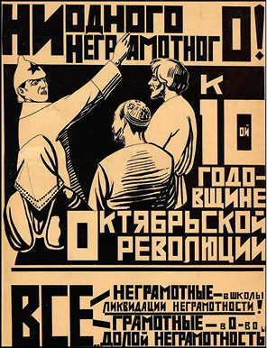
|
|
Какие изменения произошли в системе образования, научной и культурной жизни нашего края? |
1. Развитие школьного, среднего технического и высшего образования в крае.
2. Развитие нижегородской науки.
3. Нижегородские литераторы и художники.
4. Композитор А. А. Касьянов.
5. Центры советской культуры, агитации и просветительства.
● 1918 год
● 1919 год
● А. Я. Садовский
● Б. П. Корнилов
● А. А. Касьянов
● Нижегородская радиолаборатория
● Нижегородский государственный университет
►
1. Развитие школьного, среднего технического и высшего образования в крае. В 1920 году в Нижегородской губернии около 60 % населения было неграмотным (в сельской местности — свыше 70 %). В 1919 году вышел декрет СНК РСФСР «О ликвидации безграмотности среди населения РСФСР». В губернии была создана Чрезвычайная комиссия по ликвидации безграмотности. Активную роль в этом деле играли ликвидационные пункты и школы ликвидации безграмотности (ликбез). Учителями ликбеза, помимо педагогов, были комсомольцы, грамотные рабочие. К концу 1920-х годов удалось снизить уровень неграмотности до 30—40 %, а в конце 1930-х годов эта проблема в основном была решена.
В 1918 году провозглашалась единая трудовая школа с двумя ступенями. Отменялись старые учебные программы, оценки, экзамены и домашние задания. Вводилось политехническое обучение, направленное на связь с производством. В Нижнем Новгороде и крупных городах новые принципы внедрялись активно. В сельской местности не хватало учителей, помещений и учебников. К середине 1930-х годов произошёл возврат к более традиционной модели: с 1932 года были восстановлены классно-урочная система, учебные программы, учебники, оценки уровня знаний.
Для подготовки кадров для промышленности создавалась сеть профессиональных учебных заведений. Рабочие факультеты (рабфаки) при вузах готовили рабочих и крестьян к поступлению в высшую школу.
Автозаводская
школа ФЗУ
1933
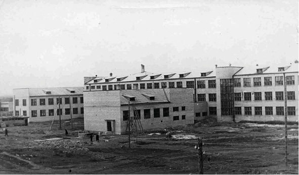
►
Школы фабрично-заводского ученичества (ФЗУ) при крупных предприятиях (Горьковском автозаводе, заводе «Красное Сормово») выпускали рабочие кадры. Техникумы (педагогические, промышленные, сельскохозяйственные) обеспечивали кадрами среднего звена. Нижегородский государственный университет (ННГУ), созданный в 1918 году на базе Народного университета и Варшавского политехнического института, стал главным вузовским центром. В 1930 году на базе различных факультетов ННГУ были созданы самостоятельные институты: Горьковский индустриальный (политехнический) институт, педагогический институт, сельскохозяйственный институт, медицинский институт. Это была часть общесоюзной кампании по созданию узкопрофильных вузов.
2. Развитие нижегородской науки. В 1918 году была открыта Нижегородская радиолаборатория (НРЛ). Она сыграла важнейшую роль в создании радиопередающей и радиоприёмной аппаратуры и организации радиовещательной сети в масштабах страны. В декабре 1924 года в здании НРЛ открылась радиовещательная станция — третья в СССР после Москвы и Ленинграда, а 27 декабря 1924 года началось местное радиовещание. В январе 1925 года радиофикация проводилась по всей губернии. 8 августа 1930 года на базе НРЛ был создан Нижегородский исследовательского физико-технический институт (НИФТИ). В 1932 году он был включён в структуру Нижегородского государственного университета.
ННГУ стал центром многогранной научной деятельности. В его лабораториях велись научные исследования. Так, на химическом факультете проводились работы по изготовлению дубильных веществ, улучшающих пластичность и прочность выделанных кож, для кожевенной промышленности, исследовались возможности газификации с использованием торфа. В 1930-х годах нижегородскую науку прославили физик А. А. Андронов, биолог С. С. Четвериков и другие ученые.
Золотым веком нижегородского краеведения стали 1920-е годы. Активно работало Нижегородское научное общество по изучению местного края, издавался журнал «Нижегородский краевед». ►
А. Я. Садовский
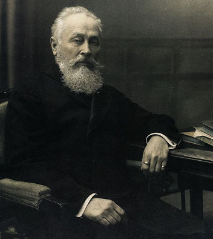
Энтузиасты А. Я. Садовский и другие краеведы изучали историю, этнографию, природу края. Но в 1930-х годах главной задачей краеведения стало исследование не прошлого, а современных преобразований в регионах. В центре внимания оказалось изучение фабрик и заводов, колхозов и совхозов, важных изменений в жизни рабочих и крестьян.
3. Нижегородские литераторы и художники. В 1920-х годах литературная жизнь в крае была многообразной и охватывала не только Нижний Новгород, но и Павлово, Балахну, Сормово, Лысково, Арзамас. Действовали творческие литературные объединения, а при клубах и заводах — литературные кружки. К концу 1920-х годов в литературные кружки и объединения Нижнего Новгорода и других городов губернии входило 80 литераторов. В 1934 году было образовано Горьковское отделение Союза писателей РСФСР.
Ведущими нижегородскими поэтами 1920—1930-х годов были Борис Пильник, Александр Зарубин, Константин Поздняев, Фёдор Жиженков, Михаил Шестериков и другие. Но всесоюзную славу завоевал уроженец города Семёнова Борис Корнилов. Он начинал литературную деятельность на родине. Широкая известность к нему пришла в Ленинграде, куда Борис Петрович переехал в конце 1925 года. Его стихотворения («Сын», «Память», «Вечер» и др.), поэмы («Соль», «Триполье», «Моя Африка» и др.) публиковались во многих газетах, журналах и книжных изданиях.
►
Памятник Б. П. Корнилову
в Семёнове
Скульптор А. А. Бичуков
1968
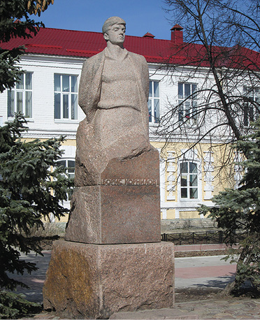
В 1932 году в СССР вышел фильм «Встречный» с «Песней о встречном» на стихи Корнилова, ставшей знаменитой. В Семёнове бережно хранят память о земляке: там открыт мемориальный музей и установлен памятник. В Нижнем Новгороде в честь поэта названы улица и библиотека.
Конец 1920-х годов — время вступления в большую литературу многих нижегородских писателей, героями произведений которых были их земляки. Один из них Николай Кочин, автор романа «Девки». Книга вышла в конце 1920-х годов и повествует о жизни нижегородского села. В 1930-х годах им были написаны романы «Парни» (о строителях автозавода), «Юность» (о деревенской молодёжи в годы революции), биографическое повествование о замечательном механике И. П. Кулибине. Творчество Кочина продолжалось и в последующих десятилетиях.
Литературная деятельность другого талантливого нижегородца Александра Патреева посвящена индустриализации. Его роман «Глухая рамень» (1936) повествует о людях первой пятилетки, которые вручную заготавливали древесину для советских новостроек.
►
Писателя Валентина Костылева глубоко интересовало историческое прошлое родного края. Он написал роман «Кузьма Минин» о событиях Смутного времени. Роман «Питирим» автор посвятил борьбе нижегородского епископа Питирима с керженскими старообрядцами.
В 1920-х годах разнообразным было творчество нижегородских художников. Некоторые из них, отказываясь от реалистических традиций русской живописи, обращались к модным авангардистским течениям. Но немало было и художников-реалистов, которые стремились отразить ту действительность, которая их окружала. Они изображали труд и быт Нижегородской губернии, земляков, природу, производственные объекты.
Например, широкой известностью пользовались картины Лазаря Хныгина: «Октябрьская демонстрация на площади Минина», «Субботник на заводе “Красное Сормово”», «Красноармейский субботник на Автострое в г. Горьком», портреты А. М. Горького, В. П. Чкалова и других знаменитых нижегородцев.
Творчество Василия Мартынова было тесно связано с его родным районом — Сормовом. Его картины «На сормовской судоверфи», «Весна в Сормове», «Листопрокатный стан», «Половодье в Нижнем Новгороде» проникнуты любовью к родному краю и землякам.
В 1930-х годах ряды известных живописцев края пополнили А. М. Каманин, А. В. Кикин, А. В. Семенюк и другие художники нового поколения.
Октябрьская демонстрация
на площади Минина
Художник Л. А. Хныгин. 1930
Нижегородский
государственный
художественный музей
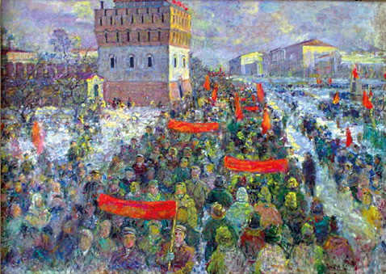
►
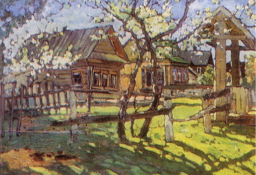
Весна в Сормове
Художник В. Л. Мартынов. 1926
Нижегородский
государственный
художественный музей
Но признанными мастерами они становятся уже в последующих десятилетиях. В 1934 году в клубе имени Дзержинского состоялась первая выставка членов Горьковского отделения Союза художников РСФСР, созданного в том же году. В 1935 году прошла первая областная художественная выставка, на которой были показаны 254 работы, в основном связанные с командировками горьковских художников на великие стройки пятилеток, в цеха новых заводов, в колхозы области. На полотнах отражались дух и ритм эпохи, великолепные портреты созидателей новой жизни.
4. Композитор А. А. Касьянов. Видным представителем музыкального искусства Нижегородского края является Александр Александрович Касьянов. Детские годы его прошли в селе Лыскове.
Во время обучения в Нижегородской гимназии Александр проявлял особый интерес к музыке. По совету дяди, видного русского пианиста и композитора С. М. Ляпунова, он был определён в музыкальную школу В. М. Цареградского, затем окончил Петроградскую консерваторию. Вернувшись в Нижний Новгород, Касьянов работал дирижёром Нижегородского симфонического оркестра, преподавал в народной консерватории, возглавлял музыкальное училище. Длительное время Александр Александрович заведовал музыкальной частью Горьковского академического театра драмы имени А. М. Горького. ►
В 1930—1941 годах он сотрудничал с Радиоцентром, который был создан при Нижегородской радиолаборатории, был автором и составителем музыкальных радиопередач. В 1939 году на сцене Горьковского театра оперы и балета была поставлена его первая опера «Степан Разин». Всю свою долгую жизнь Александр Александрович занимался музыкальным творчеством. Его наследие представлено шестью операми, многочисленными сюитами, сонатами, пьесами, кантатами, хорами, более чем 50 романсами, десятками песен. Все это музыкальное богатство снискало А. А. Касьянову славу талантливого композитора, его имя было широко известно в Советском Союзе. В Нижнем Новгороде установлены мемориальные доски в память о нём: на улице Минина, 15а, где жил композитор, и на улице Пискунова, 40 (на здании Нижегородской консерватории имени М. И. Глинки), где он работал. Его именем названа одна из улиц города.
5. Центры советской культуры, агитации и просветительства. В 1918 году на основе Николаевского театра был создан Нижегородский советский городской театр. В условиях идеологических требований новой власти с репертуаром возникли сложности. Однако выход был найден в спектаклях по произведениям М. Горького «Васса Железнова» и «Мещане», которые собирали большое количество публики. В репертуар театра также входили произведения В. В. Маяковского, пьесы А. П. Чехова «Чайка» и «Вишнёвый сад», трагедии В. Шекспира. В 1924 году в театр вновь пришёл выдающийся русский актёр и режиссёр Н. И. Собольщиков-Самарин, ранее работавший на нижегородской сцене.
Важным событием городской жизни стало открытие Театра юного зрителя в ноябре 1928 года. Он должен был воспитывать «нового зрителя» — советского школьника. Но помимо идеологически актуальных пьес (например, «Белеет парус одинокий» В. Д. Катаева) на сцене театра с успехом шли спектакли по произведениям Д. И. Фонвизина, А. С. Грибоедова, А. С. Пушкина и других авторов.
В 1920—1930-х годах в Нижнем Новгороде действовали Нижегородский государственный художественный музей, Нижегородский краеведческий музей и Литературный музей имени Максима Горького. ►
В этот период музеи трансформировались из культурно-образовательных учреждений в политико-просветительские. В экспозициях музеев главенствовали темы революционной борьбы и советских преобразований в регионе. Проводилась чистка библиотечных фондов от буржуазной и религиозной литературы. Создавалась сеть массовых районных и сельских библиотек, которые становились центрами агитации и формирования нового образа жизни.
При заводах и в районах появились рабочие клубы. В здании бывшего губернского дворянского собрания в Нижнем Новгороде 3 сентября 1922 года открылся Центральный межсоюзный клуб имени Я. М. Свердлова — первый рабочий клуб города. 29 декабря 1928 года начал работу Дворец культуры имени В. И. Ленина в Канавине, 1 мая 1930 года — Дворец культуры «Красное Сормово». Здесь проводились лекции, спектакли, работали кружки, устраивались политические информации.
Радио и кино рассматривались как средства агитации и образования. Создавалась сеть кинотеатров, где показывались как художественные, так и документальные фильмы. В 1930-х годах в нашем крае действовало около 60 кинотеатров и 28 кинопередвижек — небольших киноустановок для демонстрации кинофильмов на открытых площадках и в помещениях, в основном в сельской местности.
Дворец культуры «Красное Сормово»
Архитекторы Е. М. Мичурин, А. Н. Полтанов и С. А. Новиков. 1930
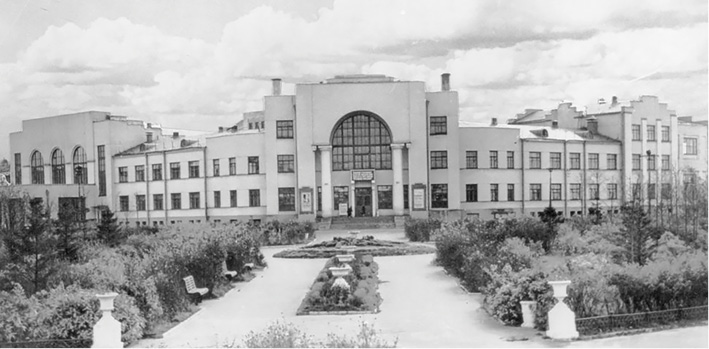
►
|
|
Знакомимся с историческим источником |
Музыка Д. Д. Шостаковича. Слова Б. П. Корнилова
Песня о встречном
Нас утро встречает прохладой,
Нас ветром встречает река.
Кудрявая, что ж ты не рада
Весёлому пенью гудка?
Припев:
Не спи, вставай, кудрявая!
В цехах звеня,
Страна встаёт со славою
На встречу дня!
И радость поёт, не скончая,
И песня навстречу идёт,
И люди смеются, встречая,
И встречное солнце встаёт.
Припев:
Горячее и бравое,
Бодрит меня.
Страна встаёт со славою
На встречу дня!
Бригада нас встретит работой,
И ты улыбнёшься друзьям,
С которыми труд, и забота,
И встречный, и жизнь — пополам.
Припев:
За Нарвскою заставою,
В громах, в огнях,
Страна встаёт со славою
На встречу дня!
И с ней до победного края
Ты, молодость наша, пройдёшь,
Покуда не выйдет вторая
Навстречу тебе молодёжь.►
Припев:
И в жизнь вбежит оравою,
Отцов сменя.
Страна встаёт со славою
На встречу дня!
Такою прекрасною речью
О правде своей заяви.
Мы жизни выходим навстречу,
Навстречу труду и любви!
Припев:
Любить грешно ль, кудрявая,
Когда, звеня,
Страна встаёт со славою
На встречу дня!
Впервые песня прозвучала в 1932 году в фильме «Встречный» режиссёров Ф. М. Эрмлера, С. И. Юткевича и Л. О. Арнштама. Создатели фильма решили, что у него должна быть своя песня, вписывающаяся в сюжет и помогающая раскрыть основную идею. Песня должна была быть весёлой, задорной, зовущей на трудовые подвиги. Поэту Б. П. Корнилову было поручено написать стихи к будущей песне. Она стала одной из первых советских массовых песен, сохранивших устойчивую популярность, и принесла всесоюзную известность её авторам.
Подведём итоги
В 1920—1930-х годах решались задачи борьбы с неграмотностью, формировались основы советского школьного и высшего образования, осуществлялась подготовка кадров для предприятий и организаций. Научные коллективы Нижегородской радиолаборатории и Нижегородского университета способствовали становлению нижегородской науки. Литераторы и художники края в своём творчестве обращались к осмыслению переживаемой эпохи, создавая образы созидателей нового общества. ►
Важный вклад в развитие нижегородской культуры внёс выдающийся деятель музыкального искусства, композитор А. А. Касьянов. Театры, музеи, клубы решали актуальные задачи формирования советского человека, приобщая массы к достижениям культуры.
|
|
Исторический словарь |
Ликвидация безграмотности (ликбез) — массовая кампания по обучению грамоте взрослого населения в 1920—1930-х годах.
Рабочий факультет (рабфак) — учебное заведение в СССР для подготовки рабочих и крестьян к поступлению в вузы.
Школа фабрично-заводского ученичества (ФЗУ) — тип профессионально-технической школы в СССР в 1918—1940 годах, готовившей квалифицированных рабочих.
Обратите внимание
Декабрь 1924 года — началось развитие регулярного радиовещания в Нижегородской губернии.
Александр Александрович Касьянов — композитор, видный представитель музыкального искусства нашего края.
|
|
Сформулируйте один-два вывода по теме параграфа. Приведите два-три аргумента. |
|
|
Вопросы и задания |
1. Назовите новые явления в процессе развития школьного образования, системы среднего технического и высшего образования, становления нижегородской науки.
2. Охарактеризуйте основные направления культурной жизни в крае.
3. Какие примеры сохранения памяти о событиях, рабочих-передовиках, видных организаторах производства, деятелях науки, образования, культуры эпохи первых пятилеток вам известны?
4*. Оформите небольшую карту-путеводитель «Культурная карта города Горького 1930-х годов: маршрутом современника».
►
5*. Подготовьте презентацию об истории строительства и работе Горьковского автомобильного завода в 1929—1930-х годах с привлечением сведений из дополнительных источников.
|
|
Составьте небольшой устный или письменный рассказ с использованием нескольких дат, личностей и терминов, помещённых в начале параграфа. |
|
|
Сформулируйте один-два вывода по теме главы. Приведите два-три аргумента. |
|
|
Вопросы и задания к главе II |
1. Объясните, почему для строительства ГАЗа был выбран участок около деревни Монастырка, а не территория ближе к историческому центру Нижнего Новгорода. Приведите не менее двух причин.
2. Сравните два промышленных центра, созданных в 1930-х годах: Горьковский автозавод и химические предприятия Дзержинска. Заполните таблицу по критериям: «Главная продукция», «Значение для экономики края».
3. «Пятилетку — в четыре года!», «Даёшь автогигант на Волге!», «Техника решает всё!». Раскройте историческое содержание одного из лозунгов. Какой из них, на ваш взгляд, наиболее точно характеризует суть индустриализации в Горьковском крае? Свой ответ обоснуйте.
4. Найдите на карте мира пункты: город Москва, остров Удд (ныне — остров Чкалов), Северный полюс, город Ванкувер (США).
5. Известно, что перелёт Москва — Ванкувер через Северный полюс занял 63 часа 16 минут. Самолёт АНТ-25 преодолел 8504 километра. Рассчитайте среднюю скорость полёта (км/ч). Сделайте вывод о технических возможностях советской авиации.
6. Опишите один день из жизни подростка вашего возраста в 1930-х годах. Выберите социальную роль: а) сын рабочего-стахановца на ГАЗе, живущий в новом Соцгороде; б) дочь колхозника в селе Починковского района. В описании используйте не менее пяти реалий эпохи (предметы быта, занятия, лозунги, проблемы).
►
7. В 1930-х годах в Горьком многие улицы были переименованы. Например, Большая Покровская стала улицей Свердлова, Осыпная — Пискунова. Объясните, с чем была связана эта волна переименований.
Итоги главы
Весной 1921 года большевистское руководство провозгласило новую экономическую политику. Она допускала рыночные принципы хозяйствования. Благодаря этому удалось восстановить промышленный и аграрный потенциал края. Однако предприятия оставались технически отсталыми. Деревня преимущественно с мелкими и слабыми крестьянскими хозяйствами не могла обеспечить регион товарным хлебом. Такое было характерно для всего СССР. Поэтому руководство страны взяло курс на индустриализацию и коллективизацию. В 1930-х годах в крае было построено много новых предприятий, созданы передовые отрасли экономики. Вместе с другими регионами нижегородцы способствовали созданию мощной тяжелой и оборонной промышленности СССР, достижению его экономической независимости. Флагманом советского авиастроения стал авиазавод № 21, на котором испытывал новые образцы самолётов выдающийся лётчик-испытатель, наш земляк В. П. Чкалов. Его знаменитые дальние перелёты были демонстрацией мощи и технического прогресса СССР.
Во время коллективизации объединение крестьянских хозяйств происходило в основном насильственными методами. Несогласные попадали в категорию «кулаков», подвергались аресту или высылке в отдалённые регионы страны. К концу второй пятилетки коллективизация в крае была завершена. Более 90 % крестьянских хозяйств были объединены в колхозы.
1920—1930-е годы стали также эпохой культурной революции. В крае велась борьба с неграмотностью, создавалась советская система образования, готовились кадры для основных сфер деятельности, происходило становление нижегородской науки. Деятели литературы и художники стремились в своём творчестве запечатлеть новую эпоху и её героев. Театры, музеи, клубы решали актуальные задачи приобщения широких масс к культурным достижениям.
►
Глава III
Город Горький и Горьковская область
в период Великой Отечественной войны 1941—1945 годов
«Родина-мать зовёт!»
Плакат. Художник И. Тоидзе. 1941
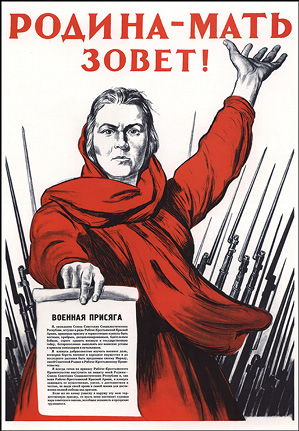
За свою более чем тысячелетнюю историю России довелось участвовать во многих войнах. Но самой большой и кровопролитной была Великая Отечественная война 1941—1945 годов. Её и назвали так, потому что от исхода этого вооружённого противостояния зависели судьба нашего Отечества как независимого свободного государства и жизнь миллионов его граждан. В годы войны горьковчане вместе со всей страной в тылу и на фронте вели борьбу за независимость Отчизны и внесли огромный вклад в Великую Победу. ►
§ 7
Трудовой подвиг горьковчан в годы войны.
«Всё для фронта! Всё для победы!»
«Всё для фронта! Всё для победы!»
Фотоколлаж
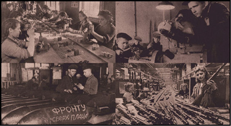
|
|
Для чего горьковчанам в 1941 году требовалось переводить экономику на военные рельсы? |
1. Начало Великой Отечественной войны и перестройка экономики на военный лад.
2. Трудовой подъём горьковчан.
3. Горьковская область — крупнейший центр по производству военной продукции.
4. Подвиг тружеников деревни.
5. Горький — важный транспортный узел страны.
6. Горьковская область — госпитальная база тыла.
● 1941—1945 годы
● Горьковский автомобильный завод
● Завод «Красное Сормово»
● Горьковский артиллерийский завод № 92
● Горьковский авиационный завод № 21 имени Серго Орджоникидзе
● Двухсотник
● Фронтовая бригада
● Горьковская железная дорога.
● Эвакогоспиталь
►
1. Начало Великой Отечественной войны и перестройка экономики на военный лад.
|
|
Вспомните, что такое Отечественная война. |
22 июня 1941 года началась Великая Отечественная война. На СССР напала нацистская Германия. Вскоре на её стороне выступили страны-союзницы: Италия, Румыния, Финляндия, Венгрия, Словакия, Хорватия.
|
|
Как вы считаете, можно ли утверждать, что СССР в Великой Отечественной войне воевал только с гитлеровской Германией? |
Гитлеровское командование разработало план молниеносной войны, в соответствии с которым СССР должен был быть разгромлен в течение 6—7 недель. Главный удар наносился на центральном направлении — на Москву. Захват города Горького должен был произойти после взятия советской столицы во второй половине сентября — начале октября 1941 года.
О начале войны горьковчане узнали 22 июня из правительственного сообщения, прозвучавшего по радио. На Советской площади (ныне — площадь Минина и Пожарского) состоялся общегородской митинг. Его участники поклялись отдать все силы, а если потребуется, и жизнь для полной победы над захватчиками.
Общегородской
митинг горьковчан
22 июня 1941 года
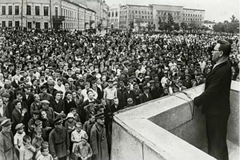
►
Позднее был образован Горьковский городской комитет обороны (ГГКО) под руководством первого секретаря Горьковского обкома и горкома ВКП(б)М. И. Родионова. Этот чрезвычайный орган объединял гражданскую, военную и правоохранительную структуры власти в городе и области и действовал с 24 октября 1941 года по 9 ноября 1943 года.
Для советских людей главным стал лозунг «Всё для фронта! Всё для победы!». Для начала потребовалась перестройка народного хозяйства на военный лад. Многих рабочих мобилизовали на фронт. Это привело к тому, что на предприятиях пришлось увеличивать рабочий день. Теперь он стал длиться 11 часов вместо 8 часов. На заводах и фабриках, которые до войны изготовляли мирные товары, стали производить военную продукцию.
Сормовскому судостроительному заводу поручалось освоить выпуск танков Т-34, а автомобильному заводу — танков Т-60. Завод «Двигатель революции» стал выпускать быстроходные дизели для военно-морского флота. Артиллерийский завод № 92 к концу 1941 года резко увеличил производство и стал поставлять пушек в 5,5 раза больше, чем до войны. Шла активная работа по увеличению производства и на авиационном заводе № 21 имени Серго Орджоникидзе. К концу 1941 года завод стал мощнейшим производителем самолётов-истребителей в стране.
|
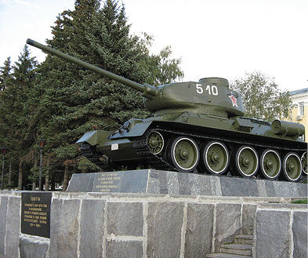 |
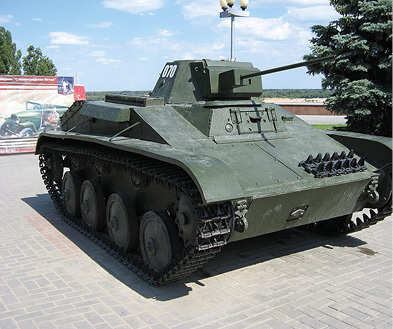 |
|
● Танк Т-34 |
● Танк Т-60 |
►
Истребитель Ла-5
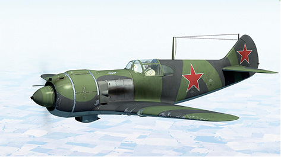
На выполнение военных заказов переводились предприятия лёгкой и пищевой промышленности. Швейные фабрики перешли с изготовления костюмов и пальто на пошив шинелей, гимнастёрок, палаток, парашютов. Рабочие горьковской фабрики «Красный обувщик» от женских туфель, мужских ботинок и детских сандалий переключились на изготовление солдатских ботинок. Арзамасские пищевики приступили к производству овощных суповых концентратов для армии и т. д.
Горьковчане успешно справились с задачами перестройки экономики на военный лад. Её удалось завершить к концу 1941 года. Ещё 6 сентября 1941 года первые танки Т-60 с автозавода отправились на фронт.
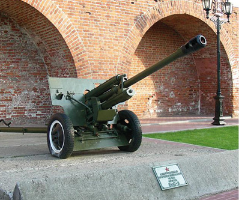
Пушка ЗИС-3
►
Не отставали и сормовичи. В своих мемуарах «Воспоминания и размышления» маршал Г. К. Жуков писал: «В октябре 1941 года… мы начали получать с Сормовского завода первые танки Т-34. Эта помощь пришла вовремя и сыграла большую роль в битве за Москву».
В выпуске военной продукции стали активно участвовать и промышленные предприятия, эвакуированные с территорий, которые могли пострадать в результате военных действий. В Горьковской области было размещено 13 таких предприятий из Москвы, Ленинграда, Харькова, Киева, Ульяновска, Брянской области. Благодаря работе эвакуированных заводов горьковчане стали производить армейские мотоциклы, приборы для военно-морского флота, запчасти для авиации.
Всего в СССР в годы войны на Восток за короткий срок было эвакуировано 1523 предприятия. Таких огромных масштабов и сроков перебазирования промышленности не знала ни отечественная, ни мировая история!
2. Трудовой подъём горьковчан. В связи с мобилизаций в Красную армию встал вопрос нехватки рабочей силы на предприятиях. Одним из решений этого вопроса было увеличение производительности труда.
В начале июля 1941 года в Горьком зародилось движение двухсотников. Молодой рабочий артиллерийского завода Фёдор Букин призвал своих коллег выполнять план на 200 процентов, то есть работать не только за себя, но и за товарища, ушедшего на фронт. Это начинание было подхвачено на других горьковских предприятиях.
В начале октября 1941 года на автозаводе появилась ещё одна форма ударного труда — фронтовая бригада. Зачинателями новой инициативы стали молодые рабочие В. Шубин, А.Тихомиров, Н. Якименко и другие. Под девизом «В труде как в бою» члены фронтовых бригад перевыполняли трудовые нормы и не заканчивали работу, пока производственное задание не выполнялось полностью. К январю 1945 года на предприятиях города Горького насчитывалось 3250 фронтовых бригад.
►
Трудовой героизм горьковчан ярко проявился и в время строительства Горьковского оборонительного рубежа. К осени 1941 года в связи со стремительным продвижением немцев к Москве возникла угроза их прорыва к Горькому. В ноябре началось возведение линии обороны на дальних подступах к этому городу: противотанковых рвов, огневых точек, блиндажей. Дороги перегораживали противотанковыми ежами.
«На окопах», как в народе называли строительство оборонительных сооружений, трудились около 350 тысяч жителей области, преимущественно женщин и подростков. Условия работы были тяжёлыми, в утренние часы случались 30-градусные морозы. И всё же 1 января 1942 года строительство рубежа завершилось. Его протяжённость составила 1134 километра.
К счастью, врагу не удалось осуществить свои планы — гитлеровцы были разгромлены под Москвой. Оборонительные сооружения вокруг города Горького так и остались «невоевавшими окопами».
3. Горьковская область — крупнейший центр по производству военной продукции. В Великой Отечественной войне советский народ добился не только военной, но и экономической победы над нацистской Германией. В эту победу внесли огромный вклад трудящиеся Горьковской области.
Во время войны в Горьком производились танки и самоходные артиллерийские установки, подводные лодки, пушки, самолёты-истребители, автомобили, радиостанции, реактивные миномёты («катюши») и боеприпасы. На предприятиях Выксы, Кулебак, Первомайска производились оружейная сталь, снаряды, бомбы, мины, в волжских затонах — корабли и аэросани, в других городах — гранаты, лыжи, валенки, сапоги, военная форма. Химические предприятия Дзержинска за годы войны втрое увеличили производство и дали стране 50 % всех взрывчатых веществ, производившихся в СССР. Это значит, что каждый второй снаряд, вторая бомба, вторая мина, произведённые в Советском Союзе, были начинены дзержинской взрывчаткой.
Посмотрите таблицу и убедитесь, насколько огромным был вклад одного только города Горького в производство военной техники.►
Производство важнейших видов вооружения Германией и Советским Союзом, в том числе предприятиями города Горького в 1941—1945 годах
|
Виды вооружения |
Произведено в тысячах штук |
||
|
Германия (без вооружений, производившихся в странах-союзницах) |
СССР |
Город |
|
|
Орудия полевые, танковые, противотанковые и зенитные |
170 |
294 |
101,6 |
|
Танки и самоходные артиллерийские установки |
46,3 |
102,8 |
31 |
|
Самолёты-истребители |
49,8 |
62,4 |
16,3 |
Спустя годы Указами Президента Российской Федерации В. В. Путина Нижнему Новгороду и Дзержинску было присвоено почётное звание «Город трудовой доблести». Этим был отмечен огромный вклад нижегородцев-горьковчан, дзержинцев, всех жителей области в достижение Победы в Великой Отечественной войне.
4. Подвиг тружеников деревни. Развитие сельского хозяйства Горьковской области в годы войны было сопряжено со множеством трудностей. Из сельской местности в Красную армию было мобилизовано около 500 тысяч мужчин, взято более тысячи тракторов и 78 тысяч лошадей. Всё это должно было бы привести к резкому падению сельскохозяйственного производства. Но этого не произошло. Колхозы и совхозы области ценой самоотверженного труда оставшихся на селе тружеников: женщин, стариков и подростков, преодолевая трудности и лишения военного времени, справлялись с задачами по обеспечению армии и горожан продуктами питания. Планы по хлебозаготовкам, поставкам мяса, овощей и картофеля неизменно выполнялись.
Сельскохозяйственный труд нелёгок всегда. А в военную пору особенно! Тракторы, да и лошадей забирали для нужд армии. На полевых работах приходилось использовать коров. А если не хватало коров, то крестьяне сами впрягались в плуг и по-бурлацки тянули его на своих плечах. ►
Надо было удобрить почву, вспахать поле, посеять рожь, пшеницу, морковь, свёклу, картофель. Каждый день надо было ходить на ферму ухаживать за животными. В колхозных бригадах устанавливался строгий режим работы: с 4 часов утра до 9—10 часов вечера.
У крестьян есть пословица: «Один день год кормит». Пропустил хорошую погоду, а на следующий день пошёл дождь и погубил богатый урожай. Поэтому на такие работы, как сенокос или уборка урожая, выходили всей деревней — от девятилетнего ребёнка до девяностолетней бабушки. С раннего утра до позднего вечера трудились на ветру, на солнце, под дождём.
Уставали сильно, но на следующий день спозаранок опять спешили на поля, фермы, в зернохранилища, потому что знали: «Фронту нужен хлеб. Без хлеба победить врага нельзя».
5. Горький — важный транспортный узел страны. Город Горький являлся крупнейшим транспортным узлом, связывающим железнодорожными и водными путями родные регионы страны.
С первых дней войны с востока на запад через область хлынули эшелоны с воинскими частями и оружием. С запада на восток шли поезда с эвакуируемыми предприятиями, людьми и санитарные поезда с ранеными.
«Женщины-колхозницы!
Заменяйте комбайнёров, ушедших на фронт!»
Плакат
Художник Г. Ликман
1941
►
Эвакуация детей
по железной дороге
1941
С предприятий Горького и области на фронт направлялись эшелоны с танками и пушками, автомобилями и артиллерийскими снарядами.
Большую роль в грузоперевозках сыграли горьковские речники. В Горьковском порту на Стрелке из барж выгружали нефтепродукты, боеприпасы, продовольствие. На судах перевозились воинские части, беженцы. Тысячи раненых доставлялись в Горький на 94 санитарных пароходах.
Во время Великой Отечественной войны железнодорожники и речники с честью справились с возложенными на них задачами.
Памятник
воинам-железнодорожникам на станции Сортировочная
►
6. Горьковская область — госпитальная база тыла.
|
|
Узнайте, в каких школах вашего района находились эвакогоспитали. |
Военных действий на территории Горьковской области не велось, она находилась в тылу. Это давало возможность использования её для лечения раненых красноармейцев. В здании, где сейчас находится филилогический факультет ННГУ им. Н. И. Лобачевского (Большая Покровская, 37) в июле 1941 года был открыт первый эвакогоспиталь в городе Горьком.
В разные периоды войны на территории Горьковской области располагался 171 эвакогоспиталь на 71 640 коек. Под госпитали отводились больницы, школы, гостиницы, общежития, санатории и дома отдыха. Больше всех госпиталей было развёрнуто в Горьком — 59 эвакогоспиталей, Дзержинске — 15, Выксе — 12, Борском районе — 10. Всего за годы войны на Горьковской земле в госпиталях прошли лечение 422 949 бойцов и командиров Красной армии. Более 90 % раненых горьковские медики сохранили жизнь.
Около 72 % прошедших лечение в госпиталях пациентов вернулись в действующую армию, другие остались инвалидами. Для них были открыты курсы, где люди могли одновременно с лечением получать подготовку по различным мирным специальностям. Всего в госпиталях на курсах было обучено более 11 тысяч инвалидов, многие из которых приобрели профессии счетовода, животновода, пчеловода, сапожника, шофёра, портного, автомеханика, часового мастера, юриста.
Подведём итоги
Горьковская область в 1941—1945 годах превратилась в огромный арсенал, который снабжал Красную армию. Промышленность была переведена на военное производство. За четыре года войны местные предприятия дали фронту от произведённых в СССР: 37 % танков и самоходных артиллерийских установок, 24 % артиллерийских орудий, 43,1 % подводных лодок, 26 % истребителей.►
|
|
Исторический словарь |
Двухсотник — рабочий, выполнявший трудовое задание в годы Великой Отечественной войны на 200 % и трудившийся под лозунгом «Работать за себя и за товарища, ушедшего на фронт!».
Перевод народного хозяйства на военный лад — процесс перестройки всех отраслей экономики (промышленности, сельского хозяйства, транспорта, связи) для обеспечения потребностей страны и вооружённых сил в условиях войны.
Эвакуационный госпиталь (эвакогоспиталь) — госпиталь военного времени, в котором происходит лечение раненых и больных воинов; эвакогоспитали разворачивались за пределами театра военных действий.
|
|
Обратите внимание |
22 июня 1941 года — нападение гитлеровской Германии на Советский Союз, начало Великой Отечественной войны. День памяти и скорби в Российской Федерации.
24 октября 1941 года — 9 ноября 1943 года — период действия чрезвычайного органа — Горьковского городского комитета обороны (под руководством М. И. Родионова), объединявшего гражданскую, военную и правоохранительную структуры власти в городе и области.
|
|
Сформулируйте один-два вывода по теме параграфа. Приведите два-три аргумента. |
|
|
Вопросы и задания |
1. К какому времени в Горьковской области произошла перестройка промышленности на военный лад?
2. Используя материал параграфа и дополнительные источники информации, заполните таблицу «Промышленные предприятия Горького и области — фронту».►
|
Название предприятия |
Продукция, производившаяся для Красной армии |
|
«Красное Сормово» |
|
|
Горьковский автозавод |
|
|
Артиллерийский завод № 92 |
|
|
Авиационный завод № 21 |
|
|
«Двигатель революции» |
|
|
Предприятия Дзержинска |
|
|
Предприятия Выксы, Первомайска |
|
|
Предприятие города (села), в котором вы живёте |
3. Из каких регионов в Горький было эвакуировано больше всего промышленных предприятий?.
4. У советского поэта Михаила Исаковского есть стихотворение «Русской женщине». Оно было написано в 1945 году и посвящалось труженицам деревни — колхозницам. Подумайте, какой смысл поэт вкладывал в эти строки:
Ты шла, затаив своё горе,
Суровым путём трудовым.
Весь фронт, что от моря до моря,
Кормила ты хлебом своим.
5. Как вы думаете, почему каждодневный труд сельских жителей в годы войны приравнивается к подвигу? Ответ аргументируйте фактами, характерными для колхозной жизни военной поры.
6. Какую роль город Горький играл в годы войны как транспортный
узел?
7*. Подготовьте проект об одном или нескольких видах оружия, производившегося в городе Горьком или других местах области в годы войны.
|
|
Составьте небольшой устный или письменный рассказ с использованием нескольких дат, личностей и терминов, помещённых в начале параграфа. |
►
§ 8
Горьковчане на фронтах Великой Отечественной войны
«Бьёмся мы здо́рово, колем отчаянно — внуки Суворова, дети Чапаева»
Плакат. Художники Кукрыниксы
|
|
На войне отличившихся в героизме солдат и офицеров награждали орденами и медалями. А чем награждались воинские части за проявленные их воинами мужество и героизм? |
1. Формирование воинских частей и соединений в Горьковской области.
2. Боевой путь горьковских войсковых соединений.
3. Железнодорожники и речники на фронтах Великой Отечественной войны.
4. Деятельность военизированных формирований.
5. Горьковчане — Герои Советского Союза.
● Красная армия
● Военнообязанный
● Мобилизация
● Соединение
● Корпус
● Дивизия
● Воинская часть
● Полк
● Батальон
● Герой Советского Союза
►
1. Формирование воинских частей и соединений.
|
|
Узнайте, что такое мобилизация. |
22 июня 1941 года Президиум Верховного Совета СССР издал Указ о мобилизации в Красную армию военнообязанных. Начиналась мобилизация 23 июня. Не дожидаясь повестки в военкомат, в течение первых месяцев войны более 15 500 жителей Горьковской области обратились с заявлениями о добровольном желании пойти на фронт.
За годы войны в Красную армию было мобилизовано 822 тысячи жителей области.
Одних призывников распределяли по уже созданным воинским частям. Из других формировали новые части. Всего за военные годы на территории Горьковской области было сформировано 79 соединений и частей Красной армии, среди которых были стрелковые диви́зии, танковые бригады и корпуса.
В местах формирования частей бойцы получали обмундирование, осваивали оружие, изучали уставы. После принятия присяги новобранцы отправлялись на фронт.
Парад войск в Горьком
перед отправкой на фронт
1941
►
8 мая 1975 года на кремлёвской стене между Дмитриевской и Пороховой башнями со стороны площади Минина и Пожарского была установлена гранитная плита, посвящённая частям и соединениям, сформированным в городе Горьком и Горьковской области в годы Великой Отечественной войны. На ней представлены наименования воинских соединений и изображение военных наград, которыми они были отмечены за боевые действия.
2. Боевой путь горьковских соединений. Одними из первых приняли на себя удар гитлеровских полчищ 160-я и 137-я стрелковые дивизии, сформированные в Горьком еще до войны. В июле 1941 года они попали в окружение, но смогли с тяжелейшими боями вырваться из котла.
Основная масса воинских формирований на Нижегородской земле создавалась в 1941—1942 годах, хотя отдельные воинские части формировались в 1943—1944 годах. Это определило степень их участия в военных действиях и их боевой путь.
|
|
Чем почётное звание дивизии «Краснознамённая» отличается, например, от звания «Пражская»? |
Например, 118-я дивизия за мужество и героизм своих воинов в 1943 году была преобразована в 85-ю гвардейскую стрелковую дивизию.
Гранитная плита
на кремлёвской стене,
посвящённая горьковским
соединениям времён
Великой Отечественной войны
1975
►
Воины этого соединения участвовали в Ржевско-Вяземской (1942), Смоленской (1943), Рижско-Двинской (1944) наступательных операциях. За отличие в боях на подступах к Риге дивизия была удостоена почётного наименования «Рижская». За героизм бойцов она также была награждена орденом Красного Знамени.
Около 35 соединений и частей, сформированных в Горьковской области, получили почётные наименования по названиям городов, в боях за которые воины проявили особое мужество и героизм.
Среди городов, названия которых можно увидеть в наименованиях горьковских соединений, были русские города — Бе́лгород, Касто́рное, И́дрица, Не́вель, Кара́чев; украинские — Киев, Харьков, Фа́стов, Ми́ргород, Терно́поль, Кировогра́д, Лисича́нск, Прилу́цк, Жито́мир, Камене́ц-Подо́льский; белорусские — Витебск, О́рша, Сло́ним, Бобруйск, Борисов; литовская Кла́йпеда; польские города Варшава, Перемышль, По́знань; латвийская Рига; чешская Прага; столица Германии Берлин.
О ратных заслугах соединений, созданных в Горьковской области, говорят их боевые награды: 15 соединений стали гвардейскими; более 30 соединений награждены орденами. Наибольшее количество наград — пять орденов — имеет 7-я отдельная гвардейская истребительно-противотанковая артиллерийская Тернопольская бригада. Она была удостоена орденов Ленина, Красного Знамени, Суворова, Кутузова и Богдана Хмельницкого. Многие дивизии и бригады были награждены четырьмя, тремя и двумя орденами.
Сотни тысяч воинов-горьковчан, служивших в этих соединениях, могли бы сказать о себе словами уроженца деревни Потёмино (ныне находится в городском округе город Бор) фронтовика Н. Е. Лазарева: «Мы, опалённые войной, поднимались в атаки, бежали, падали и ползли по-пластунски под кинжальным огнем пулемётов и автоматов, орудий и миномётов, и опять поднимались, проливали кровь, и вновь воскресали, шли на смерть. Переживали моральное и физическое напряжение, подавляли в себе чувство страха. И мы выстояли, благодаря несгибаемости человеческого духа».
Трудно назвать войну, в ходе которой не было бы военнопленных. ►
В Центральном архиве Нижегородской области хранятся сведения о более 25 тысячах горьковчан, попавших в плен в годы Великой Отечественной войны, угнанных на принудительные работы в Германию и вернувшихся домой. Их положение было тяжёлым. Жестокие условия содержания военнопленных красноармейцев были вызваны распоряжениями Гитлера и остальных нацистских главарей безжалостно истреблять советских людей. Такое отношение к пленным являлось настоящим геноци́дом.
Нелегкая судьба ожидала военнопленных и по возвращении на Родину после войны. Эти люди старались поскорее избавиться от страшного прошлого. После проверки со стороны правоохранительных органов, если за бывшими военнопленными не было компрометирующих фактов, они устраивались на работу. Некоторые поступали на учёбу в вузы и после получения высшего образования трудились инженерами, учителями и врачами.
3. Горьковские железнодорожники и речники на фронтах Великой Отечественной войны. Кроме перевозки грузов, горьковские железнодорожники прославились участием в военных действиях. В 1942 году в Горьком был сформирован 31-й особый Горьковско-Варшавский бронедивизион в составе двух броне поездов — «Козьма Минин» и «Илья Муромец». Первый строился в Горьком, а второй в Муроме. Бронепоезда с железнодорожниками-добровольцами участвовали в военных действиях под Брянском и Жлобином, под Орлом и на Днепре.
Памятник
«Катер “Герой”»
►
Пройдя с боями 2400 кило метров, они завершили боевой путь в Германии. За боевые заслуги дивизион был награждён орденом Александра Невского, а солдаты и офицеры — орденами и медалями. В наше время бронепоезд «Козьма Минин» стоит на вечной стоянке около Дворца культуры железнодорожников в Канавинском районе Нижнего Новгорода.
В октябре 1941 года была воссоздана Волжская военная флотилия. Флотилия несла охрану и оборону судоходства и обеспечивала перевозки военнослужащих, военной техники, боеприпасов по Волге. Существенную роль горьковские речники сыграли в Сталинградской битве. В память о подвиге речников на Нижне-Волжской набережной у подножия Чкаловской лестницы установлен катер «Герой». Он входил в состав Волжской военной флотилии и принимал участие в боях под Сталинградом.
4. Деятельность военизированных формирований.
|
|
Вспомните о нижегородских ополчениях 1612 и 1812 годов. Подумайте о том, чем ополчение Смутного времени и Отечественной войны 1812 года отличались от горьковского ополчения 1941—1945 годов. |
Помимо войсковых частей в нашем крае создавались военизированные формирования: народное ополчение, истребительные батальоны и подразделения местной противовоздушной обороны.
Горьковские ополченцы
1941
►
Помня о славных боевых традициях нижегородцев 1612 и 1812 годов, горьковчане тысячами записывались в народное ополчение. Особенность ополчения 1941 года заключалась в том, что оно состояло из добровольцев, которые не подлежали первоочередному призыву по мобилизации. Сюда записывались военнообязанные и невоеннообязанные мужчины 17—50 лет, способные носить оружие. Всего в 1941 году в городе Горьком и области в ополчение записалось более 144 тысяч добровольцев. После работы на предприятиях ополченцы каждый день занимались военной подготовкой. Впоследствии многие из них были призваны в Красную армию и участвовали в боевых операциях Великой Отечественной войны.
5. Горьковчане — Герои Советского Союза. Для всех отечественных войн, которые вела Россия, были характерны высокий моральный дух армии и народа, преданность Родине, стойкость и мужество воинов. Великая Отечественная война в этом смысле не была исключением. Об этом говорит большое число воинов, награждённых высокими боевыми наградами. Высшего звания Героя Советского Союза в 1941—1945 годах в СССР было удостоено более 11,5 тысячи человек. Из них 316 были нашими земляками.
|
|
|
|
● В. Г. Рязанов |
● А. В. Ворожейкин |
►
Первым из уроженцев области во время войны такое звание 25 июля 1941 года за сдерживание натиска превосходящих сил противника на Карельском перешейке получил полковник, впоследствии генерал-майор В. А. Трубачёв (1902—1964).
Генерал-лейтенант авиации В. Г. Рязанов (1901—1951) — командующий авиационным корпусом, в котором 100 лётчикам было присвоено звание Героя Советского Союза, и генерал-майор авиации А. В. Ворожейкин (1912—2001), лично сбивший 52 самолёта противника, были удостоены этого высокого звания дважды.
|
|
Узнайте, за какие подвиги политрук Н. Д. Фильченков, матрос Е. А. Никонов и красноармеец Ю. В. Смирнов были удостоены звания Героя Советского Союза. |
Всей стране стали известны также имена морского пехотинца политрука Н. Д. Фильченкова (1907—1941), матроса Е. А. Никонова (1920—1941), пехотинца Ю. В. Смирнова (1925—1944). За свои выдающиеся подвиги эти герои навечно занесены в списки воинских частей, в которых они служили.
В память о погибших земляках установлены бюсты на их родине — в городах и сёлах Нижегородской области. Данью памяти являются также мемориальные доски на домах, где жили герои.
|
|
|
|
|
● Н. Д. Фильченков |
● Е. А. Никонов |
● Ю. В. Смирнов |
►
|
|
Знакомимся с историческим источником |
Письмо гвардейцев-горьковчан 57-й гвардейской
стрелковой дивизии землякам
Мы, бойцы и командиры, сыны доблестной Красной армии, прибывшие на фронт из семьи трудящихся Горьковской области, шлём… всем рабочим, служащим и колхозникам Горьковской области… привет фронтовиков…
Каждый из нас, уходя на фронт, дал... трудящимся Горьковской области, всей великой стране… обещание быть стойкими, мужественными и верными в боях за священную землю…
Мы дали клятву мстить за поруганную, затоптанную немецким грязным сапогом священную землю Русскую. Мы сдержали своё слово…
Только за период зимних наступательных боёв наша часть нанесла врагу тяжёлые поражения… Захватила в плен до 13 000 человек, 10 000 убитых солдат и офицеров противника…
Наша часть, вошедшая в... Великую Сталинскую Гвардию, будет и впредь громить врага, и с гвардейским знаменем мы пройдём сквозь дым и пламя войны до полного разгрома и уничтожения врага…
Обращаемся к трудящимся Горьковской области, призываем их к труду… и просим дать стране больше оружия, боеприпасов, самолётов, танков и отлично провести весеннепосевные работы.
Бойцы и командиры-горьковчане.
Подведём итоги
22 июня 1941 года началась Великая Отечественная война. В этот день на главной площади родного города горьковчане поклялись следовать путём Кузьмы Минина и Дмитрия Пожарского, чтобы разгромить ненавистного врага. Они с честью сдержали свою клятву и вместе со всем советским народом внесли достойный вклад в Великую Победу. ►
С 23 июня началась мобилизация в Красную армию. Многие, не дожидаясь повестки, сами пришли в военкоматы добровольцами. Всего из Горьковской области в Красную армию было призвано 822 тысячи человек. Если учесть, что в начале 1939 года в области проживало 3,8 миллиона человек, то получается, что в армию был призван каждый четвёртый житель. Из числа мобилизованных было сформировано 79 соединений. Более 300 тысяч человек были награждены орденами и медалями. Высшего звания Героя Советского Союза в 1941—1945 годах было удостоено 316 наших земляков.
|
|
Исторический словарь |
Воинская часть — самостоятельная воинская единица, обычно входит в состав соединения — бригады, дивизии или корпуса.
Гвардия советская — в годы Великой Отечественной войны почётное наименование гвардейских получали отличившиеся в боях части, корабли, соединения войск Вооружённых Сил СССР.
Геноци́д — (от греческого genos — род, племя и латинского caedo — убиваю) — преступная политика по истреблению отдельных групп населения, целых народов по политическим, расовым, национальным, этническим или религиозным мотивам.
Дивизия — основное войсковое соединение Вооружённых Сил СССР периода Великой Отечественной войны; обычно состоит из нескольких воинских частей (полков) и подразделений (батальонов).
Соединение — войсковая единица, составленная из воинских частей и подразделений; виды соединений — бригада, дивизия, корпус.
|
|
Обратите внимание |
822 тысячи жителей Горьковской области было мобилизовано в Красную армию в 1941—1945 годах, из них более 340 тысяч воинов не вернулись с полей сражений.
316 горьковчан в годы Великой Отечественной войны были удостоены звания Героя Советского Союза.
Арсений Васильевич Ворожейкин, Василий Георгиевич Рязанов —уроженцы Горьковской области, дважды Герои Советского Союза.►
|
|
Сформулируйте один-два вывода по теме параграфа. Приведите два-три аргумента. |
|
|
Вопросы и задания |
1. Укажите факты патриотического поведения горьковчан, вызванные началом Великой Отечественной войны.
2. Узнайте, какое соединение или воинская часть формировались в годы войны не территории вашего района.
3. Кого из ваших родственников или земляков — участников Великой Отечественной войны вы знаете?
4. Прочитайте текст источника и ответьте на вопросы:
А. Какую клятву дали, отправляясь на фронт, горьковчане?
Б. Какие факты говорят о том, что клятву, данную землякам и Родине, гвардейцы-горьковчане выполнили?
В. Что обещают и о чём просят гвардейцы-горьковчане своих земляков?
5. Командующий 62-й армией, оборонявшей Сталинград, маршал Советского Союза В. И. Чуйков так писал о героизме волгарей:
«Если бы не героические усилия речников Волги и Волжской военной флотилии, которые в неимоверно тяжёлых условиях обеспечивали 62-ю армию всем необходимым для успешного ведения боевых действий, то трудно сказать, чем бы могла закончиться битва за Сталинград. А если кратко, не было бы речников-волгарей, возможно, 62-я армия погибла бы без боеприпасов и продовольствия, не выполнила бы своей боевой задачи».
Изучите материалы параграфа и перечислите виды работ, которые проводили моряки для поддержки защитников Сталинграда.
6*. Составьте электронную презентацию о земляках — Героях Советского Союза или о местном памятнике участникам Великой Отечественной войны.
|
|
Составьте небольшой устный или письменный рассказ с использованием нескольких дат, личностей и терминов, помещённых в начале параграфа. |
►
§ 9
Повседневная жизнь жителей края
в годы Великой Отечественной войны
Первый урок в 1944 году
Художник О. Башкевич. 1967
|
|
Какое изменение повседневной жизни горьковчан в годы войны произвело на вас наибольшее впечатление? |
1. Трудности быта горьковчан в годы войны.
2. Добровольная помощь фронту.
3. Народное образование в условиях военного времени.
4. Горьковские учёные — фронту.
5. Культурная жизнь горьковчан.
● Кузнечиха
● Почаинский овраг
● Большая Никольская улица
● Продовольственные карточки
● Нормы снабжения
● Беженцы
● Фонд обороны СССР
● Танковая колонна «Дмитрий Донской»
● Авиационная эскадрилья «Александр Невский»
● Театральная фронтовая бригада
● Чёрный пруд
● Слободы
● Большой острог
● Ковалихинский овраг
● Нижний и Верхний посады
● Кунавинский и Боровский перевозы
● Печёры
● Ямщики
►
1. Трудности быта горьковчан в годы войны.
|
|
Посмотрите на хлебную карточку. Подумайте, кому из горьковчан в 1941 году она могла предназначаться: рабочему, служащему или ребенку? |
С началом войны облик города Горького сильно изменился. Для затруднения вражеских бомбардировок открытое уличное освещение запрещалось. Повсюду вводилось затемнение. Часть оконных проёмов закладывалась кирпичом, окна закрывались чёрной маскировочной бумагой.
Значительно ухудшилось продовольственное снабжение населения. 1 сентября 1941 года была введена карточная система на продукты — хлеб, сахар и кондитерские изделия. Рабочие и инженерно-технические работники предприятий получали 800—600 граммов хлеба в день, служащие — 500—400 граммов, детям полагалось по 400 граммов хлеба. С начала ноября вводились карточки на мясо и овощи. Норма по мясной карточке составляла в месяц 1200 граммов мяса или рыбы. Однако часто даже по карточкам люди несколько суток не могли купить необходимые продукты. Трудности с продовольствием и промтоварами существовали всю войну.
Помимо проблем с нехваткой продуктов население страдало от холода. Из дневника горьковчанина Н. М. Добротвора:
«28 марта 1942 года. Суббота. Мороз. Что же делать? Где живу — не топят, нет света, не работают уборные, не действует водопровод».
Карточка на хлеб
►
Большинство домов отапливались печами, но в условиях военного времени, когда многие рабочие лесной промышленности были мобилизованы на фронт, заготовка дров значительно сократилась. Чуть лучше положение с дровами было в сельской местности, где лес находился рядом, но и здесь приходилось возить хворост и дрова на себе или на санках. Пережившие войну сельчане вспоминали: «Экономили каждую палку… Жили надеждой на лучшую жизнь, на сытую и тёплую, с дровами и керосином».
В Горьком и Дзержинске, где от места жительства до работы трудящимся приходилось преодолевать большие расстояния, остро стоял вопрос доступности общественного транспорта, единственным видом которого в годы войны был трамвай.
Зимой 1942/43 годов в Горьком не работали трамваи 1-го и 9-го маршрутов, соединявшие Канавино и нагорную часть города. С большими перебоями работал трамвайный маршрут № 2 «Городское кольцо». По этой причине многим приходилось ежедневно ходить на работу пешком по 7—10 километров.
|
|
Вспомните, как в 1812 году в Нижнем Новгороде размещались беженцы из Москвы, спасавшиеся от наполеоновского нашествия. |
С начала войны до сентября 1943 года в Горьковской области было принято и размещено 178 859 беженцев (из них 45 тысяч детей) из Москвы, Ленинграда, многих областей прифронтовой полосы, развёрнуты десятки эвакогоспиталей, военных училищ, организаций.
Трамвайный маршрут № 2
►
Эвакуированным людям предоставлялись жильё, работа, лечение, дети учились. Для сирот создавались детские дома.
2. Добровольная помощь фронту. Одной из примет жизни в годы войны была добровольная помощь фронту. Люди поддерживали Красную армию как разовыми пожертвованиями из семейных накоплений, так и ежемесячными отчислениями однодневного заработка в Фонд обороны СССР. На предприятиях проводились воскресники, в колхозах засевались «гектары обороны». Начиная с сентября 1941 года ежегодно организовывался сбор зимней одежды и обуви для красноармейцев. Широкое распространение получила отправка на фронт посылок с подарками от граждан и организаций. Всего за годы войны было отправлено более 800 тысяч посылок.
Распространённой была и такая форма помощи фронту, как выпуск военной техники на средства трудящихся. Одними из первых в Горьковской области в октябре 1941 года железнодорожники предложили собирать деньги на строительство бронепоезда. К весне 1942 года бронепоезд «Козьма Минин» был построен. В 1942 году проводился сбор денег на создание танковых колонн «Горьковский осовиахимовец» и «Горьковский комсомол». Колхозники из колхоза «Согласие» Чкаловского района призвали хлеборобов собирать средства на строительство эскадрильи «Валерий Чкалов».
Сбор тёплых вещей
для фронта
►
Большую роль в пополнении Фонда обороны играла православная церковь, руководители которой призывали верующих жертвовать на строительство танковой колоны «Дмитрий Донской» и авиационной эскадрильи «Александр Невский».
Активное участие приняли наши земляки в судьбах жителей блокадного Ленинграда, куда область только с осени 1941-го до конца февраля 1942 года направила 441 вагон муки, 30 вагонов сушёных овощей, 15 вагонов мыла, 6 вагонов соли и т. д.
В ходе изгнания фашистских оккупантов остро встал вопрос о восстановлении разрушенного сельского хозяйства. Несмотря на собственные трудности, крестьяне Горьковской области предоставили помощь сельскому хозяйству Воронежской, Смоленской, Калининской, Рязанской, Ростовской, Московской, Сталинградской областей. Из нашей области в порядке помощи было направлено: более 34 тысяч голов крупного рогатого скота, около 28 тысяч овец, 6405 лошадей, 1133 свиней. Серьёзную материальную поддержку от горьковчан получили также колхозы Белоруссии, Украины и Молдавии.
В этих действиях советских людей чётко просматривались такие вечные российские духовно-нравственные ценности, как: жизнь, достоинство человека, патриотизм, гражданственность, служение Отечеству и ответственность за его судьбу, высокие нравственные идеалы, созидательный труд, приоритет духовного над материальным, коллективизм, взаимопомощь и взаимоуважение, историческая память и преемственность поколений, единство народов России.
3. Народное образование в условиях военного времени. Несмотря на то, что здания многих школ были приспособлены под эвакогоспитали, а тысячи старшеклассников бросали учебу, чтобы заменить на рабочих местах ушедших на фронт отцов, образовательный процесс не прерывался.
В годы войны в Горьковской области в школах обучалось более 500 тысяч детей. Из-за сокращения числа школьных зданий уроки проводились в три смены, а в отдельных школах в четыре и даже в пять смен. Уроки были по 35 минут с пятиминутным перерывом. ►
Выросла наполняемость классов (в среднем до 42 человек, а в отдельных случаях до 60—65 учащихся). Посещаемость уроков была низкой вследствие ослабления контроля над учёбой со стороны родителей, болезней, необходимости нянчиться с младшими братишками и сестрёнками, нехваткой одежды и обуви. Школы недостаточно обеспечивались топливом, и поэтому зимой ученикам приходилось заниматься в пальто, шапках и варежках. Власти принимали меры для того, чтобы дети учились. Нуждающимся ученикам выдавали одежду и обувь, школьным буфетам выделяли продукты. Только в городе Горьком бесплатным и льготным детским питанием было охвачено свыше 60 тысяч школьников.
1 сентября 1941 года учащиеся 102-й школы города Горького обратились ко всем пионерам и школьникам области с призывом собрать средства на строительство танка «Горьковский пионер». За несколько месяцев необходимые средства были собраны, и 18 января 1942 года в армию был передан танк Т-34, построенный на заводе «Красное Сормово».
Всего за годы войны на деньги, собранные школьниками области, было построено семь танков и два самолёта. Подростки зарабатывали деньги в Фонд обороны, сдавая металлолом, макулатуру, лекарственные травы, грибы и ягоды. Летом школьники работали на колхозных полях. 35 тысяч пионеров-тимуровцев шефствовали над госпиталями, детскими домами и семьями фронтовиков.
Экипаж танка
«Горьковский пионер»
►
Война создала большие трудности для развития высшего и среднего специального образования, но, несмотря на это, к октябрю 1943 года в институтах города Горького обучалось 10 416 студентов и работало 742 человека профессорско-преподавательского состава. А в техникумах Горького и области обучалось 14 928 учащихся.
В Горький был эвакуирован институт инженеров водного транспорта из Ленинграда. В конце августа 1942 года был организован Объединенный Ленинградский и Горьковский институт инженеров водного транспорта.
Высшие и средние специальные учебные заведения военной поры успешно справились с задачами по подготовке высококвалифицированных кадров.
4. Горьковские учёные — фронту. Во время войны горьковские вузы и пять научно-исследовательских институтов занимались научными изысканиями. Учёные Горьковского индустриального института Л. В. Панкин. А. А. Зыков и А. И. Лаптев работали над проблемами ускорения режима резания металлов, сокращения затрат времени на наладку станков, использования местных видов сырья и топлива.
«Ребята, заменим отцов
и братьев, ушедших на фронт!
Поможем убрать урожай!»
Плакат
Художник А. Ф. Пахомов
1941
►
В лабораториях Горьковского государственного университета разрабатывались возможности использования в авиастроении дешёвых сталей вместо дорогостоящих металлов, совершенствовались химические технологии, разрабатывались новые методы контроля производства. Кафедра генетики и селекции университета под руководством С. С. Четверикова вела научные разработки по изготовлению из шёлка коконов шелкопряда парашютного полотна.
Учёные института инженеров водного транспорта изучали возможности помощи речному транспорту и Военно-Морского флоту. Профессорско-преподавательский состав строительного института разрабатывал технологии восстановления разрушенных зданий, совершенствовал методику строительства оборонительных сооружений.
Профессора и доценты Горьковского медицинского института А. А. Ожерельев, Х. И. Гаркави, Е. Л. Берёзов, В. Л. Радзиковский, Б. В. Протопопов и другие, трудясь в госпиталях, занимались разработками операций при черепно-мозговых травмах, ранении глаз, грудной клетки и суставов. Вследствие острой нехватки бинтов и ваты в институте разработали методику применения в качестве перевязочного средства торфяного мха — сфагнума, росшего в изобилии на болотах Горьковской области.
|
|
|
|
● С. С. Четвериков |
● А. А. Ожерельев |
►
За большую научную деятельность в годы Великой Отечественной войны 47 лучших учёных города Горького были награждены орденами и медалями, среди них: профессор ГГУ С. С. Четвериков, профессора индустриального института Н. Н. Кабачинский, Я. Н. Маркович и И. Н. Сиверцев, профессор Горьковского медицинского института А. А. Ожерельев, ассистент Н. Н. Блохин.
5. Культурная жизнь. В годы войны не прерывалась культурная жизнь. К 1943 году в Горьком работали: театр драмы, оперный театр, филармония, театр малых форм «Снайпер», театр юного зрителя, кукольный, колхозный театр и театр имени Чкалова. В области показывали постановки Павловский, Муромский и Шарьинский драматические театры. Ставили спектакли эвакуированные к нам Московский театр юного зрителя и Белорусский театр оперы и балета. Богатый репертуар представляли хоровые коллективы: Ленинградская хоровая капелла, ансамбль русской песни и пляски РСФСР, ансамбль волжской песни.
С начала войны до 18 января 1943 года профессиональными и самодеятельными артистами было проведено 6675 концертов и спектаклей, из них 4000 в госпиталях. Театры формировали фронтовые бригады, которые выезжали на фронт с концертами. Например, 17 бригад оперного театра за период войны дали 360 концертов для бойцов на передовой.
Концерт фронтовой бригады (певица Клавдия Шульженко
в составе джаз-ансамбля)
►
Самым массовым видом искусства продолжало оставаться кино. К открытым ранее горьковским кинотеатрам «Палас», «Художественный» и «Рекорд» добавились два новых — имени Белинского и имени Маяковского. Любимыми фильмами горьковчан были снятые во время войны киноленты: «Суворов», «Богдан Хмельницкий», «Разгром немецких войск под Москвой», «Она защищает Родину», «Зоя», «Клятва», «Радуга», «Два бойца», а также довоенные фильмы: «Чапаев», «Александр Невский», «Валерий Чкалов», «Трактористы», «Истребители».
Возродился интерес к истории Нижегородского ополчения 1612 года. На площади Минина и Пожарского 7 ноября 1943 года был открыт памятник Кузьме Минину. Горьковское областное издательство в 1941—1945 годах выпустило 195 книг и брошюр. Например, были изданы книги Н. Кочина «Кулибин» и «Как немцы грабят советские села», В. Костылева «Кузьма Минин», П. Полуянова «Герои Севастополя», Б. Ямпольского «Зелёная шинель». В 1943 году в Горьком возобновили работу Домик Каширина и Литературный музей А. М. Горького. Было принято решение об организации пушкинского музея в селе Большое Болдино.
Не прекращали работу городские и сельские дома культуры, колхозные клубы и красные уголки. Любителей чтения обслуживали районные и сельские библиотеки, избы-читальни.
Афиша фильма «Два бойца»
Художники
А. и Н. Клементьевы
1943
►
И вот, наконец, настал победный май 1945 года. Преподаватель Горьковского педагогического института имени М. Горького Н. М. Добротвор оставил такую запись в своём дневнике: «9 мая. Среда.Только что передали в 2 часа 10 мин. ночи по московскому времени акт о подписании безоговорочной капитуляции Германии… Ночью же на улице началось движение. Стали стрелять, пускать ракеты... Необыкновенное стало обыкновенным. Я в жизни не видал такой радости, какая теперь у нас. Так ночь, и не сплю я».
В этих строках ярко выражен тот неимоверный восторг, с которым встретили долгожданную Победу наши земляки, вместе со всем советским народом, пережившие жестокие 1418 дней и ночей Великой Отечественной войны.
|
|
Знакомимся с историческим источником |
Из дневниковых записей Н. М. Добротворова
19 июня 1941 — 9 мая 1945 года
10 ноября 1941 года. Понедельник. Налёт немецких самолётов на Горький. Половина пятого. Слышу, закашляли зенитки. Бужу Нюру. Одеваюсь. Тут как бухнет бомба. Стёкла задрожали, а рядом разбились и полетели. Идём в бомбоубежище. Говорят, что где-то за баней горят дома. Потом выяснилось, что погибло 3 дома. Есть убитые и раненые. В районе бывшей церкви Спаса (ул. Полтавская) было сброшено 10 бомб. Тревога продолжалась до 7 час. 30 мин. утра.
Подведём итоги
Война коренным образом повлияла как на военный, так и на мирный уклад жизни горьковчан. День и ночь работали военные комиссариаты, мобилизуя бойцов в действующую армию. День и ночь работали предприятия. Испытывали на себе небывалые тяготы и мирные граждане — члены семей военнослужащих и тружеников тыла. Продолжали работать школы, институты, театры. Артисты выезжали на фронт, где устраивали концерты для бойцов и командиров Красной армии. Наряду с горьковчанами культурную жизнь в области поддерживали творческие работники, эвакуированные из других городов.
►
Резко изменился повседневный быт горьковчан. Людей не оставляла постоянная тревога за судьбу мобилизованных на фронт родственников. Жизнь горожан и сельских жителей находилась под угрозой бомбардировок. Были ограничены нормы снабжения продовольствием, вводились карточки на продукты питания, ухудшилась работа общественного транспорта. Не хватало электроэнергии и топлива. Но, невзирая на эти трудности, наши земляки доблестно трудились, приближая победу над ненавистным врагом.
|
|
Исторический словарь |
Карточная система — система нормированного распределения товаров и продуктов по карточкам (талонам), которая вводилась в условиях дефицита.
Фонд обороны СССР — фонд, на счета которого поступали денежные средства и материальные ценности, добровольно собираемые населением в годы Великой Отечественной войны на нужды фронта.
|
|
Сформулируйте один-два вывода по теме параграфа. Приведите два-три аргумента. |
Вопросы и задания
1. С какими бытовыми проблемами сталкивалось население городов Горьковской области во время войны?
2. Прочитайте текст источника и ответьте на вопрос:
В годы войны немцы усиленно бомбили заводы города Горького, стремясь вывести из строя оборонные предприятия. Это понятно, но для чего они подвергали бомбардировкам дома мирных граждан?
3. Назовите основные формы всенародной помощи фронту.
4. Как потребности войны влияли на темы научных изысканий горьковских учёных военного периода?
5. Какой вид искусства был наиболее востребованным среди горьковчан в военные годы? Как вы думаете, почему?
|
|
Составьте небольшой устный или письменный рассказ с использованием нескольких дат, личностей и терминов, помещённых в начале параграфа. |
►
§ 10
Сохранение памяти о подвигах горьковчан
в годы Великой Отечественной войны
Памятный знак «Горьковский оборонительный рубеж»
|
|
Для чего современным нижегородцам следует хранить память о Великой Отечественной войне и её участниках? |
1. Забвению не подлежит.
2. Мемориал о ратных подвигах горьковчан в Нижегородском кремле.
3. Мемориал «Горьковчане — фронту».
4. Памятник «Горьковчанам — доблестным труженикам тыла».
5. Другие мемориалы в память о военном времени.
6. Мемориал Тани Савичевой в Шатках.
● Мемориал
● Монумент
● Стела
● Обелиск
● Вечный огонь
● Памятный знак
● Мемориал «Горьковчане — фронту»
● Город трудовой доблести
● Мемориал Тани Савичевой
● 1965 год
● 2020 год
►
1. Забвению не подлежит. Прошло более 80 лет со времени Победы в Великой Отечественной войне, но память о весне 1945 года жива в России до сих пор.
О ратных и трудовых подвигах ради Великой Победы россиянам напоминают: монумент Победы на Поклонной горе в Москве, скульптура «Родина-мать зовёт!» на Мамаевом кургане в Волгограде, монумент «Героическим защитникам Ленинграда» в Санкт-Петербурге, монумент «Воин-освободитель» в Берлине, другие большие и малые памятники. Немало монументальных комплексов, обелисков и скульптур есть и в Нижегородской области.
2. Мемориал о ратных подвигах горьковчан в Нижегородском кремле. Центральное место среди таких памятников на Нижегородчине занимает мемориал «Вечный огонь» в Нижегородском кремле, посвящённый воинам-горьковчанам, погибшим в годы Великой Отечественной войны. Мемориал был открыт 8 мая 1965 года около Часовой башни.
Мемориальный комплекс представляет собой две стелы и плиту с Вечным огнём. На главной стеле изображены два солдата, идущие в бой, на обратной стороне стелы — имена 109 горьковчан — Героев Советского Союза, погибших на фронтах.
Скульптура «Родина-мать зовёт!»
в Волгограде
Авторы проекта
Е. В. Вутетич и Н. В. Никитин,
архитекторы
Я. Б. Белопольский и В. А. Дёмин
1959
►
На низкой стеле высечены слова нижегородского поэта Владимира Половинкина, напоминающие о подвиге воинов-героев: «Товарищи, помните жизнь отстоявших, они сберегли нам и солнце и радость, за жизнь, за свободу, за родину павших, считайте навеки идущими рядом…»
У Вечного огня проводятся митинги в День Победы, Дни воинской славы и знаменательные даты. Здесь поздравляют отличившихся в учёбе выпускников школ, вручают государственные награды, провожают в армию призывников. Вечный огонь — священное место для нижегородцев и гостей города.
Отдавая дань уважения своим предкам-нижегородцам, павшим за свободу и независимость Отечества, старшеклассники школ Нижнего Новгорода несут здесь почетную Вахту Памяти на Посту № 1.
3. Мемориал «Горьковчане — фронту». 8 мая 1975 года около Дмитриевской башни кремля была открыта постоянно действующая выставка «Горьковчане — фронту», посвящённая памяти трудовых подвигов горьковчан в 1941—1945 годах.
На выставке представлены образцы вооружений, поставлявшихся предприятиями Горького для фронта: танк Т-34, бронеавтомобиль БА-64, пушки ЗИС-2 и ЗИС-3, миномёт, самоходная установка СУ-76, «Катюша», истребитель Ла-7, рубка подводной лодки «С-13».
Мемориал «Вечный огонь»
в Нижегородском кремле
Художники В. В. Любимов,
А. М. Швейкин и Н. П. Топунов,
архитекторы С. А. Тимофеев,
Б. С. Нелюбин, В. Я. Ковалёв
1965
►
Приходящие в Нижегородский кремль люди с интересом рассматривают грозное оружие, с которым советские воины завоевали победу над ненавистным врагом.
4. Памятник «Горьковчанам — доблестным труженикам тыла». В 2020 году 20 российским городам, на предприятиях которых во время Великой Отечественной войны бесперебойно и в больших количествах производилась продукция для фронта, было присвоено почётное звание «Город трудовой доблести». Среди таких городов оказался и Нижний Новгород, а в 2021 году городом трудовой доблести был объявлен Дзержинск. 2 июля 2020 года в Нижегородском кремле был открыт памятник «Горьковчанам — доблестным труженикам тыла».
На памятнике изображены трое рабочих времён войны: пожилой мужчина с пикой, которой металлурги пробивают лётки для выпуска расплавленной стали из мартеновских печей, женщина, держащая кузнечные клещи, и мальчик — рабочий, — те, кто в 1941—1945 годах не покладая рук ковали победу в тылу. Венчает композицию знамя, на котором написано: «Горьковчанам — доблестным труженикам тыла».
На постаменте памятника перечислены крупнейшие предприятия Горького, которые во время войны были награждены орденами.
Мемориал «Горьковчане — фронту»
Архитекторы
С. А. Тимофеев, Б. С. Нелюбин
и В. Я. Ковалёв
1975
►
Среди них: Горьковский автомобильный завод, завод «Красное Сормово», Горьковский авиационный завод имени С. Орджоникидзе, завод «Двигатель революции», Горьковский машиностроительный завод, завод «Красная Этна», завод «Красный металлист», завод № 469 Наркомавиапрома, радиотелефонный завод имени В. И. Ленина. Новый памятник органично вписался в мемориал «Горьковчане — фронту», олицетворяя собой людей, производивших необходимую военную продукцию.
5. Другие мемориалы в память о военном времени. В сражениях Великой Отечественной войны участвовало более 884 тысяч жителей Горьковской области (мобилизованных и тех, кто к началу войны находился в действующей армии). По данным Книги Памяти Нижегородской области, общее число безвозвратных потерь области за годы войны составило 340 275 человек, то есть из ушедших на фронт горьковчан более чем 38 % не вернулось. Почти каждая нижегородская семья потеряла или сына, или брата, или мужа, или отца, поэтому память о них стала поистине всенародной. Ныне только в Нижнем Новгороде находится примерно 150 монументов, а в Нижегородской области насчитывается примерно 2200 объектов в память о земляках, погибших за свободу и независимость Родины.
Памятник «Горьковчанам —
доблестным труженикам тыла»
Скульптор А. А. Щитов
2020
►
Где-то это скромный сельский обелиск, где-то памятник в образе солдата, иногда — орудие или танк.
В Нижегородской области увековечен и самоотверженный труд строителей Горьковского оборонительного рубежа. Это не единый памятник, а целая сеть памятных знаков вдоль предполагаемой линии обороны. Они установлены, например, около сел Катунки (Чкаловский район), Богоявление (Дальнеконстантиновский район), Чернышиха и Ачапное (Кстовский район), Хвощёвка (Богородский район).
Необычный памятник 23-летней учительнице М. И. Вольской поставлен в Городце. Эта женщина была партизанкой на Смоленщине. В 1942 году она вывела более трёх тысяч подростков в советский тыл, чтобы избавить их от угона немцами в Германию. Спасённых детей переправили в город Горький. Матрёна Исаевна устроилась на работу учительницей начальных классов в Артюхинскую школу Городецкого района, а потом перевелась в Смольковскую школу, где проработала более 30 лет.
|
|
|
|
● Памятник в Ветлуге Автор проекта А. И. Иванов, художник М. Н. Пестов. 1967 |
● Памятник Матрёне Вольской в Городце Скульптор С. Б. Мольков. 2020 |
►
Память о Великой Отечественной войне является неотъемлемой частью нашего культурного наследия. Она помогает сохранять и передавать историческую правду из поколения в поколение. Поэтому важно помнить эти страницы истории, никогда не забывать о наших отцах, дедах и прадедах, тех, кто отстоял мир и свободу.
6. Мемориал Тани Савичевой в Шатках. Одним из ярких проявлений патриотизма и стойкости советских граждан в годы Великой Отечественной войны стал подвиг жителей Ленинграда, которые, оказавшись в кольце немецкой и финской блокады, выстояли и проявили при этом высокие нравственные качества. Подвоз продовольствия в город был возможен лишь по Ладожскому озеру под обстрелами и бомбёжками. Продовольствия не хватало для обеспечения продуктами трёхмиллионного города. Бывали дни, когда ленинградцы получали по 125 граммов хлеба в сутки. За годы блокады от голода, холода, обстрелов и бомбардировок в городе погибло более 1 миллиона мирных граждан. В 2022 году Санкт-Петербургский городской суд признал блокаду геноцидом.
Стремясь спасти ленинградцев от гибели, городские власти организовали эвакуацию населения. В перечне областей по принятию и размещению эвакуированного населения на первом месте была указана Горьковская область.
Особую заботу жители области проявляли об эвакуируемых детях. Нижегородчина приняла около 5500 ленинградских ребят. Для них были организованы 42 детских дома.
В августе 1942 года в детский дом, который располагался в селе Красный Бор Шатковского района, была эвакуирована 12-летняя Таня Савичева. Во время блокады девочка тяжело заболела и была истощена. 7 марта 1944 года Таню перевели в Понетаевский дом для детей-инвалидов этого же района, однако спасти её не удалось — 1 июля 1944 года она умерла в Шатковской районной больнице и была похоронена в Шатках.
Таня стала известной уже после войны благодаря дневнику, который она вела в Ленинграде во время блокады. Там она делала записи о гибели своих родных. ►
Сейчас на Таниной могиле находится мраморное надгробие, а рядом размещена стела с портретом и страничками Таниного дневника. Эти памятники входят в мемориальный комплекс «Тане Савичевой и детям войны посвящается», который был открыт в Шатках в 2010 году.
Нацисты уничтожили миллионы детей. Таня Савичева была одной из многих, в судьбе которой отразились страдания миллионов. Из-за гитлеровцев она прожила всего 14 лет. Память о Тане не должна быть забыта. Ежегодно 1 июля в день кончины Тани Савичевой у мемориала проходит акция «Тане Савичевой и детям войны посвящается». На могилу Тани возлагаются цветы и венки, зажигается свеча памяти и проходит минута молчания.
|
|
Знакомимся с историческим источником |
Дневник Тани Савичевой
Женя умерла 28 дек. в 12.00 часов утра 1941 г. Бабушка умерла 25 янв. в 3 часа дня 1942 г. Лёка умер 17 марта в 5 час. утра 1942 г. Дядя Вася умер 13 апр. в 2 часа ночи 1942 г. Дядя Лёша 10 мая в 4 часа дня 1942. Мама 13 мая в 7.30 час. утра 1942 г. Савичевы умерли. Умерли все. Осталась одна Таня.
Памятник
Тане Савичевой
в Шатках
1972
►
Подведём итоги
9 мая 1945 года грандиозной победой советского народа закончилась Великая Отечественная война. Победа далась нашей стране большими жертвами. В борьбе с нацистской Германией и её союзниками погибло 26 миллионов 600 тысяч наших соотечественников. Из них более 340 тысяч человек были уроженцами Горьковской области. В память об этих людях в городах и сёлах нашего края устновлено более 2350 памятных объектов. Такие мемориалы всегда делаются с любовью. Памятники воплощают в себе признательность погибшим, стремление сохранить воспоминания о человеке. Читая забытые имена, мы представляем наших предков — воинов, пожертвовавших своими жизнями за Россию, за наше будущее, и это должно сохранять в нас не только образы лучших патриотов Отечества, но и имена людей, на которых мы должны равняться.
|
|
Исторический словарь |
Город трудовой доблести — почётное звание, установленное Федеральным законом РФ от 1 марта 2020 года «в целях увековечения подвига тружеников тыла во время Великой Отечественной войны 1941—1945 годов».
Мемориал (от латинского memorialis — памятный) — памятное место, памятник в память о ком-либо или о чём-либо.
Монумент (от латинского monumentum — памятник) — памятник внушительных размеров в честь важного исторического события или общественного деятеля.
Обелиск (от греческого obelos — остриё) — монумент в виде сужающегося кверху каменного столпа.
|
|
Обратите внимание |
1965 год — открытие мемориала «Вечный огонь» в Нижегородском кремле.
►
2020 год — присвоение Нижнему Новгороду почётного звания «Город трудовой доблести», установление памятника в Нижегородском кремле «Горьковчанам — доблестным труженикам тыла».
2021 год — присвоение Дзержинску почётного звания «Город трудовой доблести».
|
|
Сформулируйте один-два вывода по теме параграфа. Приведите два-три аргумента. |
|
|
Вопросы и задания |
1. Какой из мемориалов Нижегородской области, посвящённый Великой Отечественной войне, на ваш взгляд, является самым главным? Почему?
2. Какое количество жителей города Горького и области отдали жизни на фронтах Великой Отечественной войны?
3. Прочитайте текст источника и ответьте на вопрос:
Как дневник Тани Савичевой может быть использован для обвинения германского нацизма и финской военщины в преступлениях против советского народа?
4. У замечательного нижегородского поэта Юрия Адрианова есть стихотворение «Невоевавшие окопы». Найдите и прочитайте это стихотворение и ответьте на вопрос:
Почему автор его так назвал?
5. Заполните таблицу «Памятники и мемориалы Нижегородской области», о которых говорится в учебном пособии:
|
№ |
Название памятника, мемориала |
В каком году был построен |
|
1 |
6. Назовите главный памятник, посвящённый Великой Отечественной войне, в вашем районе (селе). Когда памятник был открыт?
7. Подготовьте сообщение об одном из памятников участникам или труженикам тыла Великой Отечественной войны.
|
|
Составьте небольшой устный или письменный рассказ с использованием нескольких дат, личностей и терминов, помещённых в начале параграфа. |
►
|
|
Сформулируйте один-два вывода по теме главы. Приведите два-три аргумента. |
|
|
Вопросы и задания к главе III |
1. Одна из самых длинных в нагорной части Нижнего Новгорода — улица Родионова, которая протянулась на 4 км. Узнайте, кем во время войны был М. И. Родионов, чьё имя носит эта улица.
2. Подумайте, о каком виде трудового героизма говорится в воспоминаниях работницы радиотелефонного завода имени В. И. Ленина В. Шатухиной: «Мы не ходили в атаку, не взрывали мостов и вражеских эшелонов, мы просто работали, засучив рукава, не замечая смены дня и ночи, порой не выходя по нескольку суток из цеха. Уходили только тогда, когда выполняли задание полностью».
3. Какой смысл горьковчане вкладывали в лозунг: «Всё для фронта! Всё для победы!»?
4. Как вы объясните лозунг на плакате военного времени: «Чем крепче тыл, тем крепче фронт!»?
5. Назовите не менее четырех основных предприятий города Горького, давших наибольшее количество военной техники фронту.
6*. Что общего и в чём различие между трудовыми починами двухсотников и фронтовых бригад?
7. Один из современных театров Нижнего Новгорода был открыт во время Великой Отечественной войны. Укажите, как он назывался:
А. Театр юного зрителя.
Б. «Вера».
В. «Снайпер».
Г. «Пиано».
8. На мемориале «Горьковчане — фронту» в Нижегородском кремле представлена продукция Горьковского автозавода: грузовой автомобиль ГАЗ-АА (полуторка), самоходная артиллерийская установка СУ-76, бронеавтомобиль БА-64, полноприводный лёгкий армейский вездеход ГАЗ-67Б. Подумайте, какой танк, производившийся на автозаводе во время войны, на этой выставке не представлен.
►
9. Совершите обычную или виртуальную экскурсию в Парк Победы на Гребном канале в Нижнем Новгороде и на мемориал «Горьковчане — фронту» в Нижегородском кремле. Подумайте, в чём коренное отличие экспонатов на выставке в Парке Победы от выставки на мемориале «Горьковчане — фронту».
10. «Из одного металла льют медаль за бой, медаль за труд…» Как вы считаете, прав ли был поэт, написавший эти строки?
11. Подготовьте проект создания коллекции «Личные вещи солдата Великой Отечественной войны».
Итоги главы
Великая Отечественная война больно ударила по старинной Нижегородской земле. 822 тысячи наших земляков с оружием в руках долгих 1418 дней и ночей сражались с нацистской Германией и её многочисленными союзниками. Многие горьковчане не вернулись с полей сражений.
Также впечатляющим был и трудовой подвиг горьковчан, которые с первых дней войны начали перевод экономики на военные рельсы под лозунгом «Всё для фронта! Всё для Победы!». Они сумели за годы войны обеспечить постоянный и невиданный рост военно-промышленного производства и превратить город и область в крупнейший арсенал Красной армии.
На протяжении всей своей многовековой истории Нижегородская земля играла в жизни России судьбоносную роль. Великая Отечественная война ещё раз подтвердила исключительное значение Нижегородчины как надёжной силы, на которую Россия всегда может опереться и выстоять. Свидетельством глубокой благодарности Отечества за беспримерный трудовой подвиг земляков стало присвоение звания «Город трудовой доблести» Нижнему Новгороду и Дзержинску.
Весомый боевой и трудовой вклад в Великую Победу — особая страница в истории нашей земли, о чём мы должны постоянно помнить.
►
Глава IV
Город Горький и Горьковская область
в 1945—1991 годах
«Великие стройки коммунизма — удар по поджигателям войны»
Плакат. Художник И. П. Цыбульник. 1951
Период 1945—1991 годов вместил в себя колоссальные трансформации: послевоенное восстановление, хрущёвскую оттепель с её противоречивыми реформами, научно-техническим прорывом и первыми признаками либерализации, успехи и проблемы социально-экономического развития в последние советские десятилетия. Горьковской области, являвшейся крупнейшим оборонным центром СССР, была уготована роль ключевого звена в создании ядерного щита страны и технологическом противостоянии в холодной войне. Параллельно с этим предстояло восстановить разрушенные войной заводы, накормить население, решить жилищную проблему. ►
§ 11
Горький и Горьковская область в 1945—1965 годах
Город Горький. Верхне-Волжская набережная имени Жданова
1953
|
|
Как Горьковской области в 1945—1965 годах, восстанавливая разрушенное и наращивая оборонную мощь, удалось стать одновременно «закрытым» индустриальным гигантом и одним из центров научно-культурного прорыва? |
1. Приоритеты индустриального развития Горьковской области в послевоенные годы.
2. Проблемы и трудности развития послевоенной деревни.
3. Материальные условия жизни и быта горьковчан.
4. Образование, научная и культурная жизнь в Горьковской области.
● С. Я. Киреев
● Реконверсия
● Горьковская ГЭС
● КБ-11
● 1965 год
● Урбанизация
►
1. Приоритеты индустриального развития Горьковской области в послевоенные годы. Власть в области, как и во всей стране, была сосредоточена в руках коммунистической партии. После перевода М. И. Родионова на должность Председателя Совета Министров РСФСР Горьковский областной комитет ВКП(б) в 1946—1950 годах возглавлял С. Я. Киреев. Это было сложное время для СССР. Страна вышла из войны с огромными людскими потерями, разорёнными городами и сёлами, подорванной экономикой. Но госуларства Запада под руководством США взяли курс на обострение отношений с нашей страной, имевшей по итогам войны огромный авторитет в мире. Началась холодная война против СССР и его союзников. В США происходило наращивание производства вооружений, было создано ядерное оружие и разрабатывались планы его применения против СССР. Поэтому нашей стране одновременно с восстановлением народного хозяйства необходимо было осуществлять масштабную программу по укреплению обороноспособности.
Горьковская область, в силу развитой промышленной базы, стала одним из главных центров этого процесса. Завод № 92 (ныне — Нижегородский машиностроительный завод) под руководством директора А. С. Еляна и главного конструктора В. Г. Грабина — флагман производства советской артиллерии — после войны приступил к созданию ракетно-артиллерийских систем. Завод «Красное Сормово» в первые послевоенные годы выпускал средние танки Т-54, а затем перешёл на строительство подводных лодок (проекты 613, 633), став главной судоверфью СССР по дизель-электрическим субмаринам. Завод № 21 (ныне — «Сокол») наладил производство реактивных истребителей МиГ-15, МиГ-17, которые составили основу истребительной авиации СССР и стран Варшавского договора. Созданное в 1946 году сверхсекретное Конструкторское бюро № 11 (КБ-11) стало местом рождения советской атомной бомбы. Под руководством Ю. Б. Харитона и при участии таких учёных, как А. Д. Сахаров, здесь в 1949 году было создано и испытано первое отечественное ядерное устройство. Город Арзамас-16 (Саров), где всё это происходило, был изъят из административного подчинения области, не указывался он и на советских картах. ►
Автомобиль ГАЗ-М-20 «Победа»
В городе Дзержинске для разработки систем управления и подрыва ядерных боеприпасов был создан НИИ-11 (позже — Научно-исследовательский институт измерительных систем — НИИИС).
Наращивал свои мощности и модернизировал цеха Горьковский автомобильный завод. С 1946 года на нём началось производство легкового автомобиля ГАЗ-М-20 «Победа» — первого в мире серийного авто с понтонным (бескрыльным) кузовом. Это был символ возрождения и технической мысли. 1956 год ознаменовался выпуском легендарной «Волги» ГАЗ-21. Этот автомобиль с его характерной эмблемой в виде оленя на капоте и стремительным дизайном стал символом советской эпохи, автомобилем партийной номенклатуры, такси и скорой медицинской помощи. Параллельно ГАЗ наращивал выпуск грузовиков ГАЗ-51 и ГАЗ-63, сыгравших ключевую роль в восстановлении народного хозяйства.
Автомобиль ГАЗ-63
►
Для обеспечения растущей промышленности на Волге в 1955—1962 годах была построена Горьковская ГЭС, а рядом с ней город Заволжье. В Дзержинске продолжилось развитие химических предприятий. Строились новые производства синтетических материалов, необходимых как для промышленности, так и для быта. Важнейшим событием стало открытие железнодорожного моста через Волгу в Горьком в 1965 году. Началось асфальтирование дорог, развивался троллейбусный транспорт в областном центре.
2. Проблемы и трудности развития послевоенной деревни. Сельское хозяйство области после войны находилось в тяжёлом состоянии, а голод 1946—1947 годов, вызванный засухой и политикой изъятия зерна у колхозов, ещё более усугубил положение сельчан. Многие колхозники, особенно молодёжь, стремились уехать в города. В начале 1950-х годов проводилась кампания по укрупнению колхозов. Мелкие хозяйства объединяли с крупными, что должно было повысить эффективность сельской экономики. На практике это часто приводило к удалённости полей от сёл, росту бюрократии и отчуждению крестьян от земли.
Тысячи молодых горьковчан — комсомольцев, студентов, рабочих — по призыву коммунистической партии отправились в Казахстан, на Алтай и в Сибирь на освоение целины́. В 1954—1960 годах это был масштабный порыв, позволивший в короткие сроки увеличить сбор зерна в стране.
«Молодёжь, на целину!»
Плакат. 1956
►
Однако для Горьковской области это означало отток самой активной части сельской молодёжи, что усугубило демографические проблемы деревни.
Первые меры советского руководителя Н. С. Хрущёва о повышении закупочных цен и списании долгов с колхозов улучшили положение колхозников, стимулировали развитие личных подсобных хозяйств. Однако насаждение кукурузы в непригодных для неё климатических зонах Горьковской области (с прохладным летом) привело к неурожаям и дискредитации самой идеи агротехнического прогресса.
К концу 1950-х годов политика сменилась на противоположную — личные хозяйства обкладывались непосильными налогами, а скот выкупался. Это подорвало доверие колхозников к власти и способствовало упадку сельского хозяйства в начале 1960-х годов. Сокращение денежных средств на развитие мелких деревень, объявленных «неперспективными», привело к запустению значительной части сельской территории области.
3. Материальные условия жизни и быта горьковчан. Война нанесла страшный удар по демографии. В области, как и в СССР в целом, преобладал удельный вес женщин в общей численности населения. Многие сёла в результате войны практически лишились мужчин. Восстановление шло медленно. Главной демографической тенденцией стала урбаниза́ция. Молодёжь перебиралась из бедствующей деревни в города на стройки и заводы. Население города Горького стремительно росло. Жилищный кризис был невероятно острым. Люди ютились в бараках, подвалах, коммуналках. В конце 1940-х — середине 1950-х годов в жилищном строительстве господствовал стиль сталинского ампи́ра — возводились помпезные дома, украшенные лепниной, с многокомнатными квартирами улучшенной планировки, которые олицетворяли мощь победившей державы. Но в силу дорогови́зны и длительного строительного цикла они не могли решить жилищную проблему.
Прорывом стало начало индустриального домостроения — массового жилищного строительства по типовым проектам, ускорившим ввод нового жилья. ►
Жилой дом Горьковского автозавода.
Площадь Минина и Пожарского, 2/8
Архитекторы
А. Н. Тюпиков и В. В. Воронков
1954
С конца 1950-х годов в Горьком, Дзержинске, Арзамасе стали расти кварта́лы хрущёвок — панельных пятиэтажек. Их качество было невысоким, но возведение такого благоустроенного жилья позволило обеспечить отдельными квартирами с водопроводом, канализацией и центральным отоплением миллионы семей. Это была настоящая жилищная революция.
В здравоохранении усилия были направлены на борьбу с эпидемиями (туберкулёзом, тифом), последствиями голода. Развивалась сеть районных больниц и фельдшерских пунктов.
В 1945—1947 годах сохранялась карточная система на продукты из-за их дефицита. С середины 1950-х годов началось постепенное увеличение в продаже новых товаров (холодильников ЗИС, телевизоров КВН), но их дефицит оставался нормой жизни. В досуге людей преобладали коллективные формы — посещение кино, библиотек, домов культуры.
Панельная пятиэтажка — хрущёвка
►
В конце 1950-х годов появились первые магнитофоны, зарождалась культура обмена записей песен, что стало окном в мир запрещённой музыки и поэзии.
4. Образование, научная и культурная жизнь в Горьковской области. В послевоенное время вводилось всеобщее семилетнее, а затем восьмилетнее образование. Открывались новые школы, профессионально-технические училища, техникумы. Горьковский государственный университет имени Н. И. Лобачевского и Горьковский политехнический институт имени А. А. Жданова стали центрами подготовки кадров для науки и промышленности. Помимо закрытых оборонных научно-исследовательских институтов, развивалась академическая наука. В 1956 году был создан Институт прикладной физики АН СССР, который вскоре завоевал мировое признание.
Именно в этот период закладывались основы будущего научного престижа региона. В университете и политехническом институте работали выдающиеся учёные. Физик А. А. Андронов, математик И. Р. Брайцев внесли фундаментальный вклад в своих научных областях. Начинали собственные исследования радиофизики А. В. Гапонов-Грехов и В. Л. Гинзбург (будущий нобелевский лауреат).
Развивалось творчество местных литераторов. На рубеже 1950—1960-х годов стали популярны поэтические вечера, молодёжные дискуссии.
А. А. Андронов
►
Горьковский театр драмы переживал творческий подъём. Его спектакли, наряду с постановками театра оперы и балета, пользовались успехом. В 1957 году Горьковская студия кинохроники была преобразована в Горьковскую студию телевидения (ныне — государственная телерадиокомпания «Нижний Новгород»).
Вместе с тем конец 1940-х — начало 1950-х годов стали временем тотальной цензуры и идеологического давления в культуре. В Горьком проходили собрания с осуждением «формализма» и «безыдейности», подвергались критике писатели и художники.
|
|
Знакомимся с историческим источником |
17 февраля — День российских студенческих отрядов
На рубеже 1950 — 1960-х годов в СССР появилась одна из новых форм приобщения студенческой и учащейся молодежи к общественно-производительному труду. В стране начали создаваться студенческие строительные отряды, которые стали настоящей школой трудового воспитания молодёжи. История горьковских студенческих отрядов началась летом 1958 года, когда комсомольские организации нашей области направили на уборку урожая в Акмолинскую область Казахстана 5600 молодых горьковчан, в том числе студентов вузов. За три месяца было убрано и сдано 39 миллионов пудов хлеба, заготовлено более 23 тысячи тонн сена, 21,5 тонны силоса.
Подведём итоги
Два первых послевоенных десятилетия стали для Горьковской области временем титанических усилий, великих свершений и глубоких противоречий. Регион совершил беспрецедентный рывок: от области, ослабевшей за годы тяжелейшей войны, к статусу ведущего научно-промышленного центра ядерной и космической эры. Были созданы или получили мощное развитие ключевые предприятия-гиганты (ГАЗ, «Красное Сормово», завод № 92, КБ-11), заложены основы мирового уровня в радиофизике, построены Горьковская ГЭС и железнодорожный мост, началось массовое жилищное строительство. ►
Этот период завершился в 1964 году, когда отставка Н. С. Хрущёва и приход к власти Л. И. Брежнева ознаменовали начало новой эпохи — развитого социализма. Горьковская область подошла к этому рубежу как регион-донор, индустриальный и научный локомотив страны, но несущий в себе груз нерешённых социальных, экологических и экономических проблем.
|
|
Исторический словарь |
Горьковская ГЭС — гидроэлектростанция на Волге у города Заволжье, одна из крупнейших в Европе на момент постройки, обеспечила энергией растущую промышленность области.
Дефицит — нехватка товаров и услуг в условиях плановой экономики СССР.
Карточная система — система нормированного распределения товаров и продуктов по карточкам.
Конструкторское бюро № 11 (КБ-11) — сейчас Российский федеральный ядерный центр — Всероссийский научно-исследовательский институт экспериментальной физики (РФЯЦ-ВНИИЭФ) в Сарове, бывшем Арзамасе-16; сверхсекретный объект, место производства первой советской атомной бомбы.
Магнитофон — устройство, предназначенное для записи звуковых сигналов на магнитную ленту и их последующего воспроизведения.
Освоение целины — кампания по распашке целинных и залежных земель в Казахстане, Сибири, на Урале и в Поволжье в 1954—1960 годах.
Оттепель — неофициальное обозначение периода в истории СССР с середины 1950-х до середины 1960-х годов, характерными чертами которого стали осуждение культа личности Сталина, ослабление тоталитарного контроля, относительная свобода в культуре.
Сталинский ампир — архитектурный стиль в конце 1930-х — 1950-х годах с такими характерными чертами, как: монументальность и масштабность сооружений, использование классических элементов античной архитектуры, богатый декор с советской символикой, высокие шпили и башни, просторные арки и колоннады, использование мрамора, гранита, бронзы.
►
Урбаниза́ция (от латинского urbanus — городской) — процесс увеличения населения в городах, повышения их роли в социально-экономическом развитии общества, распространения городского образа жизни на всю сеть населённых мест.
Холодная война — военное, экономическое и идеологическое противостояние между возглавляемыми США и СССР группами стран в середине 1940-х — начале 1990-х годов, которое сопровождалось локальными конфликтами, гонкой вооружений и острыми международными кризисами.
Хрущёвки — разговорное название панельных или кирпичных жилых домов, массово строившихся при Н. С. Хрущёве в конце 1950-х — начале 1960-х с целью преодоления острой жилищной проблемы.
|
|
Сформулируйте один-два вывода по теме параграфа. Приведите два-три аргумента. |
|
|
Вопросы и задания |
1. Объясните, в чём состояли трудности и положительные тенденции в развитии сельского хозяйства.
2. Охарактеризуйте материальные условия и быт трудящихся в послевоенные годы.
3. Назовите успехи, достижения и проблемы в области образования, науки, культуры, спорта в 1945—1965 годах.
4*. Какие предприятия ГАЗа и других заводов, переведённые на выпуск военной продукции в 1941—1945 годах, вернулись к производству мирной продукции в послевоенные годы? Что стало главными гражданскими изделиями ГАЗа и «Красного Сормова» в этот период?
5*. Какие масштабные энергетические и инфраструктурные проекты реализовывались в области для обеспечения растущей промышленности?
|
|
Составьте небольшой устный или письменный рассказ с использованием нескольких дат, личностей и терминов, помещённых в начале параграфа. |
►
§ 12
Наш край в 1965—1985 годах
Город Горький. Автозаводский район
1980-е годы
|
|
В чём проявились достижения и нарастающие проблемы региона в 1965—1985 годах? |
1. Общественно-политическая жизнь края.
2. Экономическое развитие Горьковской области.
3. Проблемы материального благосостояния горьковчан.
4. Образование и научная жизнь. Достижения в культуре и спорте.
● К. К. Катушев
● Н. И. Масленников
● Ю. Н. Христораднов
● КГБ
● 1959 год
● И. И. Киселёв
● А. В. Гапонов-Грехов
►
1. Общественно-политическая жизнь края. Управление Горьковской областью в 1965—1985 годах осуществлялось через жёстко централизованную партийно-советскую вертикаль, где абсолютным лидером был Горьковский областной комитет КПСС (обком). В 1965—1968 годах первым секретарём обкома был К. Ф. Ка́тушев. Он прошёл путь от инженера до главы Горьковской области. Своей деловитостью и решительностью в организации жилищного строительства обратил на себя внимание первых лиц страны. После него с 1968 по 1974 год Горьковский обком КПСС возглавлял Н. И. Ма́сленников. С его именем во многом связано преобразование народного хозяйства области: модернизация производства в Дзержинске, Кстове, Выксе, развёртывание работы по созданию передовой строительной индустрии и ликвидации бараков, проектирование метрополитена. Ю. Н. Христораднов был первым секретарём Горьковского обкома КПСС в 1974—1988 годах. С ним связаны освоение микрорайона Верхние Печёры и Кузнечихи, строительство Горьковского метрополитена. Его руководство характеризовалось укреплением хозяйственно-партийной системы и отсутствием резких политических изменений.
Вся общественная жизнь была пронизана коммунистической идеологией. Ключевую роль играли массовые общественные организации: ВЛКСМ (комсомол) и профсоюзы. Через них осуществлялась мобилизация молодёжи на стройки и заводы, распределялись путёвки и дефицитные товары, организовывался досуг.
Мемориальная доска
в честь руководителей
Горьковской области
Улица Минина,1
►
Проявления инакомыслия не допускались. На формирование социального пространства областного центра (особенностей межличностного взаимодействия и мышле́ния) оказывали влияние также статус закрытого города и преобладание технической интеллигенции.
Решение о закрытии города Горького для посещения иностранцами, принятое в 1959 году, оставалось в силе на протяжении всего периода. Формальная причина — наличие большого количества режимных оборонных предприятий и научно-исследовательских институтов. Этот статус создавал уникальную социальную среду. Горьковчане осознавали свою причастность к защите страны, что стало частью их самосознания. Ограниченный доступ к альтернативным источникам информации, отсутствие прямых контактов с иностранцами формировали специфическую картину мира. Сотрудникам секретных предприятий было сложно выехать за рубеж даже в туристические поездки, что «привязывало» высококвалифицированные кадры к месту работы. Город окружал ореол таинственности, что отразилось в фольклоре и самоощущении жителей.
2. Экономическое развитие Горьковской области. Экономика области развивалась по пути интенсификации производства, внедрения новых технологий и укрепления межотраслевых связей в рамках единого народно-хозяйственного комплекса СССР. Горьковский автомобильный завод постоянно обновлял модельный ряд. На смену легендарной «Волге» ГАЗ-21 в 1970 году пришла новая модель ГАЗ-24, символизирующая современный дизайн и технические решения. Развивалось производство грузовиков и микроавтобусов. В эти годы заводом руководил И. И. Киселёв — Герой Социалистического Труда, человек-легенда, олицетворявший преемственность трудовых традиций и верность своему делу. «Красное Сормово» и предприятия Дзержинска наращивали выпуск судов и оборонных изделий, отвечающих самым высоким требованиям, и сложной химической продукции. Бурно развивалась радиоэлектронная промышленность. Горьковские заводы (телевизионный завод имени В. И. Ленина, завод имени Г. И. Петро́вского и др.) выпускали важнейшие компоненты для бытовой техники, средств связи и специальной техники. ►
20 ноября 1985 года была открыта первая очередь Горьковского метрополитена. Строительство метро стало символом роста города и заботы государства о комфорте трудящихся.
Экономика области превратилась в сложный, высокотехнологичный комплекс с преобладанием машиностроения, химии и радиоэлектроники, что укрепляло экономическую и оборонную мощь Советского Союза. Базовыми ценностями того времени были технический прогресс, культура высокого качества, планомерное развитие.
Горьковский автомобильный завод оставался флагманом и градообразующим предприятием. ГАЗ обеспечивал работой, жильём и социальными благами десятки тысяч человек, формируя целый городской район — Автозаводский. Завод «Красное Сормово» специа-лизировался на высокотехнологичной продукции. Здесь строились дизельные подводные лодки проекта 641Б «Сом» для ВМФ СССР, а также уникальные атомные подводные лодки с крылатыми ракетами проекта 670 «Скат». В гражданском секторе продолжался выпуск скоростных пассажирских судов на подводных крыльях типа «Ракета» и «Метеор», которые стали визитной карточкой Волги. Горьковский авиационный завод имени С. Орджоникидзе (в настоящее время «Сокол») был одним из главных производителей истребителей в СССР. В 1960—1970-х годах здесь выпускался сверхзвуковой МиГ-25 — самый быстрый серийный истребитель в мире.
|
|
|
|
● Истребитель МИГ-25 |
● Речное судно |
►
С 1979 года началось производство ещё более совершенного МиГ-31 — первого советского истребителя четвёртого поколения. Работа на авиационном заводе считалась престижной и ответственной.
Регион был насыщен научными центрами, работавшими на оборону. Всероссийский научно-исследовательский институт экспериментальной физики (ВНИИЭФ) в Арзамасе-16 (Сарове) — главная ядерная лаборатория страны, мозговой центр атомного проекта в полностью закрытом и секретном городе. Научно-исследовательский институт измерительных систем (НИИИС) имени Ю. Е. Седакова было ведущим предприятием по созданию систем управления для ракетно-космической техники. Научно-исследовательский радиофизический институт (НИРФИ) и Институт прикладной физики (ИПФ) АН СССР под руководством академика А. В. Гапонова-Грехова сформировали всемирно известную научную школу радиофизики и физики плазмы, чьи разработки имели как оборонное, так и фундаментальное значение.
Дзержинск оставался крупнейшим центром химической промышленности (заводы «Капролактам», «Корунд», «Синтез»). Производство пластмасс, удобрений, красителей росло, но сопровождалось катастрофическим загрязнением окружающей среды.
Были построены ключевые объекты в сфере транспорта: в 1965 году Молитовский мост через Оку, развивался аэропорт Стригино.
Строительство Молитовского моста через Оку
1962—1963
►
3. Проблемы материального благосостояния горьковчан. Население области и особенно города Горького продолжало расти за счёт миграции из села и других регионов. Горький стал городом-миллионником. Сельское население сокращалось, в нём росла доля представителей старших поколений. Главным социальным достижением эпохи стали успехи в решении жилищной проблемы. Продолжалось массовое индустриальное строительство. На смену скромным хрущёвкам пришли более комфортные бре́жневки — 9—12-этажные панельные и кирпичные дома с улучшенной планировкой. В Горьком выросли новые микрорайоны: Верхние Печёры (1970-е годы), Юго-Западный (1980-е годы).
Парадокс эпохи заключался в контрасте между масштабным строительством и дефицитом товаров народного потребления. Не хватало качественной одежды, обуви, мебели, бытовой техники, многих продуктов (колбасы, сыра, мяса, фруктов). Это порождало специфические социальные практики. Умение «занять очередь» и отстоять её было жизненно важным навыком. Дефицитный товар получали через знакомых, родственников, по месту работы. Жители области ездили в Москву или в соседние регионы за покупками. Массово развивались садоводческие товарищества — горожане бесплатно получали участки размером 6 со́ток, на которых своими силами выращивали овощи и фрукты.
Панельная девятиэтажка —
брежневка
►
4. Образование и научная жизнь. Достижения в культуре и спорте. Промышленно развитому региону, каким была Горьковская область, требовались грамотные рабочие, инженеры и учёные. В эти годы большое внимание уделялось школе. В городах и сёлах строились новые школьные здания, чтобы ликвидировать вторую смену. Главной задачей было не только дать знания, но и воспитать достойного гражданина СССР. Власти постоянно заботились о том, чтобы в школы приходили хорошо подготовленные педагоги. В области работали педагогические училища (средние специальные учебные заведения). Например, Горьковское педагогическое училище, открытое ещё в 1928 году, за первые 50 лет своего существования (с 1928 по 1978 год) подготовило более 6 тысяч учителей начальных классов, воспитателей детских садов и музыкальных руководителей. Высшее педагогическое образование можно было получить в Горьковском и Арзамасском педагогических институтах.
На промышленные предприятия требовались квалифицированные рабочие и мастера. Их готовили в профессионально-технических училищах и техникумах. Одним из таких заведений был Горьковский индустриально-педагогический техникум. Здесь будущие учителя труда получали специальные навыки, которые были востребованы на заводах: обработка металлов резанием, технология сварочного производства, монтаж промышленного оборудования. Многие выпускники техникумов после учёбы шли работать на заводы, а самые старательные поступали в институты.
Центром научной жизни в области был Горьковский государственный университет имени Н. И. Лобачевского. К 1970-м годам он стал одним из ведущих вузов страны. Здесь училось более 10 тысяч студентов, а трудилось около 1300 профессоров и преподавателей. В университете работали знаменитые учёные, чьи имена знал весь мир: физики А. А. Андронов и В. Л. Гинзбург занимались изучением колебаний и радиофизикой; химик Г. А. Разуваев основал научную школу по химии металлоорганических соединений; генетик С. С. Четвериков заложил основы популяционной генетики. При университете действовали научно-исследовательские институты (физико-технический, химический, прикладной математики). ►
Учёные города Горького решали сложные задачи, которые ставили перед ними промышленность и оборона страны.
Наука и производство были тесно связаны. Преподаватели вузов одновременно работали на заводах в качестве консультантов. Студенты проходили практику в заводских цехах. Именно в эти два десятилетия (1965—1985) промышленность и наука области достигли наивысшего развития, что позволило региону стать настоящей опорой государства.
Горький оставался одним из крупных культурных центров. В рамках государственной культурной политики работали театр драмы, театр оперы и балета, театр кукол. Их репертуар включал классику и одобренные властью современные пьесы. Центрами притяжения были также кинотеатры («Октябрь», «Мир» и др.).
Особой средой была научно-техническая интеллигенция, сосредоточенная в академических институтах и конструкторских бюро. Её субкультуру определяли: «кухонные разговоры» — обсуждение политики, литературы, философии в узком кругу; научный туризм — походы, сплавы по рекам Урала и Севера; клубы при домах учёных — просветительские лекции, встречи с интересными людьми. К концу 1970-х годов у молодёжи зародился интерес к запретной западной рок-музыке. Появились первые любительские рок-группы.
Массовые формы приобретал спорт. Были популярны сдача норм ГТО (физкультурно-спортивный комплекс «Готов к труду и обороне»), спортивные секции в школах и на заводах.
Кинотеатр «Октябрь»
в Горьком
►
Сдача норм ГТО
Больших успехов добивался Горьковский хоккейный клуб «Торпедо». Особенно прославился на спортивном поприще вратарь этого клуба и сборной СССР по хоккею с шайбой В. С. Коноваленко.
Горьковский гребной канал был одной из лучших в стране водных трасс, здесь тренировались будущие олимпийские чемпионы.
Огромной народной любовью пользовалась футбольная команда «Волга». Она была создана в 1963 году. В первом же сезоне «Волга» добилась права выступать в высшей лиге чемпионата СССР по футболу. С 1965 по 1984 год горьковская «Волга» выступала только в первой и второй лигах футбольного чемпионата. В конце 1984 года «Волга» как профессиональный клуб была расформирована, перешла в разряд любительских команд и продолжила играть лишь как коллектив завода «Красное Сормово» под одноимённым названием в чемпионате области.
Виктор Коноваленко —
легендарный вратарь «Торпедо»
►
|
|
Знакомимся с историческим источником |
Текст законов пионеров Советского Союза на обложке ученической тетради
Подведём итоги
Период 1965—1985 годов явился для Горьковской области временем индустриального и научного расцвета. Регион выполнил историческую миссию, став одним из главных арсеналов и интеллектуальных центров Советского Союза. Были достигнуты впечатляющие успехи: созданы новые образцы техники мирового уровня, сформировались мощные научные школы, решалась острейшая жилищная проблема, вырастали новые городские районы.
|
|
Исторический словарь |
Брежневки — разговорное название панельных или кирпичных многоэтажных домов, которые строили в период правления Л. И. Брежнева в 1970—1980-х годах; отличались от хрущёвок большей площадью, этажностью и улучшенной планировкой.
Закрытый город — населённый пункт в СССР, доступ в который для иностранцев был запрещён из-за расположения на его территории секретных объектов оборонного значения; советским гражданам для его посещения требовалось специальное разрешение.
►
Научная школа — научный коллектив во главе с авторитетным научным руководителем, объединённый общими взглядами, идеями и интересами и добивающийся значительных научных результатов.
Сотка — участок земли размером 100 на 100 метров.
|
|
Обратите внимание |
1957 год — начало работы Горьковской студии телевидения.
1985 год — открытие первой очереди Горьковского метрополитена.
|
|
Сформулируйте один-два вывода по теме параграфа. Приведите два-три аргумента. |
|
|
Вопросы и задания |
1. Объясните, почему Горький имел статус закрытого города. Какие в этом были плюсы и минусы для жителей?
2. Заполните таблицу «Промышленные предприятия Горьковской области»:
|
Предприятие |
Продукция |
Значение |
|
ГАЗ |
||
|
«Красное Сормово» |
||
|
«Сокол» |
||
|
Дзержинские химзаводы |
3. Опишите, как изменилась жизнь людей после переезда из старого жилья в новые благоустроенные многоэтажные дома. Используйте слова: удобства, лифт, центральное отопление, ванная комната.
4. Расспросите родственников старшего поколения об их жизни в 1970—1980-х годах. Что они помнят о школе, первой работе, любимых занятиях? Подготовьте краткий рассказ.
5. Обсудите в классе, какие достижения эпохи 1965—1985 годов мы можем видеть в современном Нижнем Новгороде (здания, предприятия, традиции).►
§ 13
Горьковская область в годы перестройки
и распада СССР (1985—1991)
«СССР: Перестройка. Гласность. Ускорение. Демократия»
Плакат
|
|
С какими результатами завершилась перестройка в нашем крае? |
1. Общественная жизнь горьковчан.
2. Промышленность и сельское хозяйство.
3. Проблемы благосостояния жителей края.
4. Образование, наука и культурная жизнь в условиях перемен.
● Перестройка
● Гласность
● Неформальные объединения
● «Нижегородский краевед»
● Декабрь 1991 года
● Конверсия военного производства
● Агропромышленные комитеты
● Продовольственные карточки
● Театр «Вера»
►
1. Общественная жизнь горьковчан. В истории СССР 1985—1991 годы называют периодом перестройки. Это название отражает совокупность преобразований в разных сферах жизни советского общества с целью преодоления кризисных явлений. Реформаторский курс проводило руководство СССР во главе с М. С. Горбачёвым. Под влиянием этого курса многое изменилось в нашей стране и Горьковской области в частности.
Одним из новшеств перестройки стала гласность — возможность свободно выражать мнения и распространять информацию. Политика гласности вызвала рост интереса к средствам массовой информации (СМИ). В Горьковской области общественная жизнь активизировалась благодаря тому, что центральные и местные газеты, журналы, телевидение поднимали острые социальные проблемы, печатали статьи по ранее запретным темам. Эти материалы активно обсуждали горьковчане на работе, дома, в общественных местах отдыха. Не всех вдохновляли традиционные советские формы активности: митинги «за мир», праздничные демонстрации, партийные, комсомольские и профсоюзные собрания. Такие мероприятия проходили формально — однообразно, скучно, исключительно для отчётности.
В Горьком возникали новые формы общественной активности — неформальные объединения политического, просветительского, экологического, культурного направлений (клубы «Диалог», «Наш выбор» и др.). Интерес горьковчан к ним возрастал, потому что такие клубы поднимали острые проблемы и были нацелены на изменение жизни к лучшему. Актуальной стала проблема сохранения культурно-исторического наследия. Население проявляло активность в защите объектов, имевших особую историческую ценность. Публикации местной печати о ярмарке, купечестве, культуре родного края способствовали росту общественного интереса к его истории. В 1989 году было создано общество «Нижегородский краевед». Начался процесс возвращения улицам города Горького прежних названий. Так, в 1990 году улица Веры Фи́гнер вновь стала Варва́рской — по названию церкви в честь святой великомученицы Варвары. В центре общественного внимания оказался вопрос о возвращении прежнего названия «столице» родного края. ►
Инициативу поддержали депутаты. 22 октября 1990 года Горький вновь стал Нижним Новгородом, а область — Нижегородской.
Развернулись дискуссии о белых пятнах советской истории — неизвестных, малоизученных темах, которые прежде в стране были под запретом. Под влиянием публикаций в СМИ у населения формировалось негативное отношение к революции 1917 года, личности И. В. Сталина. С его именем связывали массовые карательные меры (репрессии) против советских граждан. В стране возобновилась реабилитация (восстановление в правах) жертв репрессий, которая впервые проводилась в 1950 — начале 1960-х годов. Газеты печатали списки реабилитированных земляков. Большое внимание вызывали темы строительства станции метро на площади Горького, Горьковской атомной станции теплоснабжения. В стране зарождалась многопартийность, появились крестьянская, либерально-демократическая, демократическая и другие партии. В Горьковской области возникли их региональные отделения. Имея разные цели, эти партии выступали за демократизацию советов, ликвидацию единовластия КПСС, реформирование государственного устройства и переход к рыночным реформам.
Часть руководителей СССР, которые не разделяли идеи перестройки, предприняла 19—21 августа 1991 года в Москве попытку отстранения Президента СССР М. С. Горбачёва от власти. Она закончилась провалом. После этого в стране была приостановлена деятельность КПСС. В декабре 1991 года лидеры союзных республик приняли решение о прекращении существования Союза Советских Социалистических Республик и создании вместо него Содружества Независимых Государств. События в столице привели к смене власти и в крае. Руководство Нижегородской области во главе с первым секретарем обкома КПСС и председателем областного Совета народных депутатов Г. М. Ходыревым ушло в отставку. Президент России Б. Н. Ельцин утвердил новый орган региональной власти — областную администрацию. Её возглавил Б. Е. Немцов, депутат Верховного Совета РСФСР от Нижнего Новгорода. 3 декабря 1991 года он был назначен губернатором Нижегородской области.
►
2. Промышленность и сельское хозяйство. К началу перестройки Горьковская область являлась одним из крупнейших индустриальных центров страны. Но в промышленности края нарастали проблемы: снижались темпы её развития, падала производительность труда, с отставанием происходило техническое перевооружение предприятий, низкой оставалась общая квалификация рабочих. На местной экономике негативно отражался постепенный разрыв производственных связей с предприятиями, которые поставляли комплектующие материалы из других республик.
Серьёзной проблемой было низкое качество выпускаемой продукции. С целью повышения её качества на некоторых горьковских предприятиях (и в стране) вводилась государственная приёмка (госприёмка). Первоначально это привело к хорошим результатам. В 1987 году около 60 % промышленной продукции в области соответствовало высшей категории качества. На продукцию завода имени В. И. Ленина (телевизоры «Чайка-280Д») количество претензий снизилось в 11 раз. Но госприёмка не была повсеместной, проводилась эпизодически, из огромной выбраковки продукции предприятия не выполняли плановые задания и договорные обязательства, сама организация её требовала немалых средств. Словом, она превратилась в обычную кампанию, которая вскоре прекратилась.
|
|
В какие периоды советской истории предприятия переводились на хозрасчёт? |
Телевизор «Чайка-280Д»
►
В 1988 году, согласно Закону о государственном предприятии (объединении), все предприятия страны переводились на полный хозрасчёт. Но в Горьковской области, как и по всей стране, использовались лишь положения закона, выгодные предприятиям (право повышать цены на продукцию, поднимать зарплату работникам), а другие его положения (самостоятельно искать и покупать сырьё, продавать свою продукцию, обновлять технологию производства за свои средства) игнорировались. На горьковских предприятиях, особенно лёгкой и пищевой промышленности, распространилась практика выпускать продукты и промтовары в меньших объёмах, но по высокой цене. Так, объединение «Маяк» сократило объёмы производства детской одежды, но повысило на неё цены. В результате в магазины доставлялось товаров меньше, а цены на них были завышены. Из-за этого в области повсеместно нарастал дефицит.
В тяжёлом положении оказались предприятия военно-промышленного комплекса, занимавшего более половины сектора горьковской экономики. Подписанные догово́ры со странами Запада о сокращении вооружений вызвали конверсию военного производства в крае. Оборонные предприятия переводили на выпуск бытовой техники, медтехники, сельхозинвентаря и другой гражданской продукции. Классные специалисты уходили в другие сферы, трудовые коллективы разрушались, обостряя социальные проблемы. К концу перестройки падение производства наблюдалось во всех отраслях экономики края — оборонной, авиационной, судостроительной и др.
С разрешением индивидуальной трудовой деятельности и кооперативов в области стал формироваться негосударственный сектор экономики. Но кооперативы открывались не в производственной сфере (для выпуска новой продукции), а в торгово-посреднической: готовые товары покупали по государственной цене, а продавали их по кооперативной, значительно дороже.
|
|
Вспомните, когда в Горьковской области были созданы колхозы. |
Колхозы и совхозы края продолжали производить сельхозпродукцию, постепенно улучшалась жизнь сельских жителей. ►
Но на селе оставались нерешенными проблемы слабой механизации аграрного труда, роста убыточных хозяйств, нехватки кадров, низкой урожайности, сохранности выращенной продукции. Это вело к продуктовому дефициту в области. Преодолеть его решили новыми структурами управления: на союзном, республиканском и областном уровнях создавались агропромышленные комитеты (АПК), в том числе в Горьковской области. Они объединяли все отрасли, связанные с производством и переработкой сельхозпродукции. Низовым звеном АПК стали районные агропромышленные объединения (РАПО). Но эта реформа не привела к росту сельхозпродукции, так на селе оставались нерешёнными всем известные проблемы.
В колхозах для повышения материальной заинтересованности внедряли разные формы организации труда — бригадный, семейный, арендный подряды (договоры) по выпуску сельхозпродукции в определённом объёме и в заданные сроки. Были ликвидированы прежние ограничения по ведению личных подсобных хозяйств. Однако все эти нововведения кардинально ничего не изменили на селе. Вернуть сельскому жителю чувство хозяина после многолетней борьбы с частнособственническим укладом было сложно. Прежние проблемы усугублялись новыми: высокими ценами на сельхозтехнику и низкими на сельхозпродукцию. В этих условиях на селе выживать было очень трудно.
3. Проблемы благосостояния жителей края. К началу перестройки уровень жизни горьковчан был выше, чем в предшествующие десятилетия. Но их жизнь оставалась наполненной многочисленными повседневными проблемами: не всегда большой зарплатой, скудным ассортиментом продуктов питания и промтоваров, некачественными услугами в сфере быта, нехваткой мест в детсадах, долгой очередью на получение квартиры и др. Областные власти утверждали программы жилищного строительства, улучшения продовольственного снабжения населения. Однако уровень жизни горьковчан с каждым годом снижался.
В 1990 году система продовольственного обеспечения населения оказалась в кризисе. ►
Универсам «Нагорный» в городе Горьком
1986
Объёмы продаж основных продуктов питания (мяса, масла, молока, колбасы, сыра, яиц) сокращались. Так, в первые два месяца 1991 года потребление мяса в Горьком составило всего 40 %, рыбы — 30 % от уровня того же периода 1990 года. Областная власть ограничивала продажу продуктов питания. Водились талоны на товары повседневного спроса.
|
|
В какие годы в СССР была карточная система на продукты питания? |
Поездки в столицу за продуктами оставались типичным явлением для горьковчан.
Наблюдались трудности в жилищном строительстве. В 1986—1990 годах ввод жилья был на 100 тысяч квадратных метров меньше, чем в 1981—1985 годах. В 1990 году план ввода жилья в Горьком выполнили всего на 66 %. Причинами низких показателей были неразвитость базы стройматериалов, низкая производительность труда, текучесть рабочих кадров в этой отрасли.
Талоны на товары
повседневного спроса
►
Серьёзные проблемы нарастали в сфере здравоохранения. Треть медицинских учреждений края работали в устаревших помещениях. Дефицит современной медтехники и нехватка медицинских кадров отражались на качестве медобслуживания. Ухудшалась экологическая ситуация. К началу 1990-х годов социальная сфера в крае находилась в кризисном состоянии.
4. Образование, наука, культурная жизнь в условиях перемен. В годы перестройки происходили изменения в системе образования. В школах области был введён учебный предмет «Основы информатики и вычислительной техники». В учебных планах ряда школ появились новые учебные курсы (эстетика, экономика и др.). Создавались профильные классы: архитектурные, педагогические, медицинские и др. Некоторые школы, имевшие необходимые ресурсы, были реорганизованы в гимназии, лицеи, школы с углублённым изучением предметов. Многие учителя стремились освоить новые формы и методы обучения, изучали опыт педагогов-новаторов.
Изменения происходили в системе высшего образования. В ряде горьковских вузов вводились новые курсы, предметы, а также специальности: «Охрана окружающей среды и рационального использования природных ресурсов» (Горьковский государственный политехнический институт имени А. А. Жданова), «Дизайнер» (Горьковский государственный инженерно-строительный институт), «Педагогика и психология» (Арзамасский государственный педагогический институт имени А. П. Гайдара). В Горьковском государственном институте иностранных языков имени Н. А. Добролюбова была создана лаборатория интенсивного обучения иностранному языку. В 1990 году в Горьком появились филиалы Московского и Куйбышевского государственных институтов культуры.
Горьковская область оставалась крупным научным центром. Здесь работали десятки отраслевых НИИ, академические институты (Институт прикладной физики, Институт машиноведения и др.), действовали крупные научные школы под руководством учёных мирового уровня. ►
Бюст Б. А. Королёва
у больницы его имени
Скульптор В. И. Пурихов
2012
Горький также славился крупнейшей кардиологической школой, которой руководил Б. А. Королёв — академик, заслуженный деятель науки РСФСР. Широкую известность приобрела горьковская школа педиатров (руководители: академик А. А. Баранов и профессор Г. В. Римарчук).
Горьковская область обладала мощным культурным потенциалом. В ней насчитывалось 1400 библиотек, 14 музеев, около 2000 киноустановок,1812 клубных учреждений. Горьковчан радовали своими выступлениями признанные художественные коллективы: фольклорная группа «Волжские ложкари», хореографический коллектив «Калинка» Дома культуры профтехобразования, оркестр народных инструментов Дворца культуры имени В. И. Ленина. Ежегодно в городах и сёлах проводилось 30 000 концертов и спектаклей.
Насыщенной была театральная жизнь. В областном центре продолжали работать театр драмы имени М. Горького, театр кукол, театр оперы и балета имени А. С. Пушкина, театр юного зрителя, театр «Комедiя». Кроме признанных культурных центров, появились новые творческие коллективы: театры «Пиано» при Горьковской школе-интернате для глухих детей и «Преображение» при Дворце культуры имени В. И. Ленина, камерный музыкальный театр, детский театра «Вера».
►
Театр «Вера»
Мещерский бульвар, 10
Центрами культурной жизни в области были драмтеатры Дзержинска и Арзамаса. Коллектив Арзамасского театра драмы, сохраняя классическую традицию, обращался к лучшим произведениям русской литературы XX века.
Разнообразной была музыкальная жизнь. Значительное влияние на её развитие оказывал симфонический оркестр Горьковской филармонии, получивший в 1990 году звание академического. В 1988 году в Горьком с успехом прошёл Всесоюзный фестиваль молодых композиторов, на рубеже 1980—1990-х годов — Всесоюзный фестиваль молодых композиторов, фестиваль «Современная музыка», рок- и джаз-фестивали.
|
|
Знакомимся с историческим источником |
Из письма в газету «Правда» жителей деревни Бажулино Княгининского района Горьковской области.
Июль 1988 года
Есть в нашей деревне всё, что полагается: три кирпичных скотных двора, кирпичная кузница, в которой ремонтировалась техника, новый большой склад, магазин… И жили мы, как полагается жить людям, которые родились и выросли в деревне. Работали на совесть.
►
Но вот несколько лет назад руководство совхоза решило перенести центральную усадьбу из нашей деревни… в райцентр, то есть в Княгинино. А это от нас и других деревень не близко — 10 километров. И что получилось? Хозяйственные постройки, которые были в хорошем состоянии, забросили. Трактора, машины, комбайны гоняют каждый день за 10 километров туда и обратно… Совхозное стадо перевели в Княгинино, где и лугов-то почти нет… Переселяют людей... А сами-то люди, которыми так распоряжаются, не хотят покидать насиженные гнезда, участки, скотину — всё, к чему привыкли… Нам кажется, что всё это — не по-хозяйски… Молодёжь не привлекают к деревне, а гонят из неё, а потом жалуются на нехватку мяса и молока. Да откуда им взяться-то при таких порядках?.. Видно, руководство нашего совхоза живёт сегодняшним, а не завтрашним днём. Не понимает, что обеспечить страну продовольствием — это сейчас наиважнейшая задача. Уважаемые товарищи! Очень просим, помогите сохранить нашу деревню…
Подведём итоги
Благодаря перестройке и гласности горьковчане стали более свободно обсуждать широкий круг актуальных общественных проблем. Но поспешные инициативы советского правительства в экономике обострили прежние и вызвали новые проблемы в народном хозяйстве Горьковской области. Непоследовательность в проведении госприёмки и хозрасчёта, неоправданная конверсия оборонных предприятий, попытки решать проблемы на селе за счёт создания новых структур управления (АПК, РАПО), перекосы с кооперативами и прочие новации вместе с ранее не решёнными проблемами лишь ухудшали ситуацию в экономике региона. Это негативно отражалось на социальной сфере: обострялись проблемы жилья, здравоохранения, продовольствия, падал уровень жизни. Перестройка завершилась недовольством населения ухудшением своего социального положения, падением доверия к руководству СССР. В условиях потери им контроля за происходящими процессами в стране произошли крушение КПСС, советской власти и распад СССР, что привело к смене власти. ►
|
|
Исторический словарь |
Военно-промышленный комплекс — совокупность научно-исследовательских организаций и промышленных предприятий, которые занимаются разработкой и производством военной и специальной техники, амуниции, боеприпасов.
Гласность — политика, направленная на открытость и свободу информации.
Государственная приёмка (госприёмка) — проверка качества и приём выпускаемой продукции на предприятиях государственной комиссией.
Губернатор — высшее должностное лицо области; возглавляет областное правительство.
Конверсия военного производства — перевод предприятий военно-промышленного комплекса на выпуск гражданской продукции.
Личное подсобное хозяйство — хозяйство, владелец которого производит продукцию для себя и продаёт излишки без уплаты налогов.
Неформальное объединение — общественная организация, не зарегистрированная в официальных органах власти.
|
|
Обратите внимание |
1989 год — создание общественной организации «Нижегородский краевед».
22 октября 1990 года — возвращение городу Горькому прежнего названия Нижний Новгород.
|
|
Сформулируйте один-два вывода по теме параграфа. Приведите два-три аргумента. |
|
|
Вопросы и задания |
1. Назовите общественные проблемы, которые становились актуальными для горьковчан в годы перестройки.
►
2. Выделите проблемы в промышленности и сельском хозяйстве Горьковской области в годы перестройки и запишите их в рабочую тетрадь.
3*. Почему новые формы организации труда и снятие ограничений в отношении личных подсобных хозяйств не способствовали росту сельхозпроизводства? Ответ аргументируйте.
4*. Подготовьте доклад/сочинение/эссе о видном деятеле образования, науки, культуры Горьковской области изучаемого периода.
5*. Подготовьте электронную презентацию на тему «Детский театр “Вера”: от возникновения до нашего времени» (этапы развития, репертуар, руководство, актёры, гастроли, участие в фестивалях).
|
|
Составьте небольшой устный или письменный рассказ с использованием нескольких дат, личностей и терминов, помещённых в начале параграфа. |
|
|
Сформулируйте один-два вывода по теме главы. Приведите два-три аргумента. |
Вопросы и задания к главе IV
1. Охарактеризуйте послевоенную модернизацию главных промышленных гигантов в 1945—1991 годах:
А. ГАЗ — переход к массовому выпуску новых моделей. Какое значение это имело для всей страны?
Б. «Красное Сормово». Какая продукция, помимо гражданских судов, оставалась важной для оборонного заказа?
В. Авиационный завод № 21. Какую роль он играл в оснащении советской авиации?
2. Какое влияние на развитие области и соседних регионов оказало строительство Горьковской ГЭС? Какие новые отрасли или предприятия появились благодаря дешёвой электроэнергии?
3. Проанализируйте фрагменты воспоминаний горьковчан (или газетные заметки) этого периода. Какие бытовые проблемы в них выделяются как самые острые?
►
4. Как Горьковский государственный университет имени Н. И. Лобачевского и Горьковский государственный политехнический институт имени А. А. Жданова адаптировали учебные программы под нужды промышленности? Какие новые специальности появились?
5. В чём заключалась роль НИИ химии и НИИ металлоорганической химии в оборонных и гражданских проектах?
6. Почему развитие физической культуры и спорта было задачей государственной важности? Как оно было связано с идеей «закалки нового человека» и подготовкой его к труду и обороне?
7. Исследуйте успехи горьковских спортсменов и команд на всесоюзной арене. Какие спортивные общества были ведущими? Кто из хоккеистов, конькобежцев, гимнастов прославил город Горький?
Итоги главы
За 1945—1991 годы город Горький и Горьковская область превратились в один из ведущих закрытых военно-промышленных центров СССР, где были сосредоточены гиганты автопрома (ГАЗ), судостроения («Красное Сормово») и авиастроения («Сокол»), химической промышленности (Дзержинск) и нефтепереработки (Кстово), а также мощная научная база.
Регион достиг технологического лидерства в выпуске гражданской продукции — автомобилей «Победа» и «Волга», судов на подводных крыльях «Ракета» и «Метеор», — и заметно преобразил свою инфраструктуру за счет массовой жилой застройки, новых мостов и энергетических объектов. Для горожан, живших в бараках и коммуналках, началось массовое строительство жилья. Это было огромное достижение — многие семьи наконец-то получили отдельные квартиры.
Однако за успехами скрывались и серьёзные проблемы. Горький был «закрытым» городом. Жизнь советских людей, развитие культуры — всё подчинялось идеологическим установкам правящей коммунистической партии, смягчение которых началось только в период перестройки.
Общим итогом социально-экономического развития региона в середине 1940-х — 1980-х годах стало формирование высокоразвитой, но критически зависимой от гособоронзаказа экономики, что предопределило тяжёлый промышленный спад после распада СССР.
►
Глава V
Нижегородская область
в конце ХХ — первой четверти ХХI века
Вид на Стрелку Оки и Волги. 2025
После распада СССР в Российской Федерации начались масштабные преобразования. В течение последнего десятилетия ХХ века в нашем крае, как и по всей стране, осуществлялись рыночные реформы с переходом государственных предприятий в частные руки. Этот процесс сопровождался резким падением производства, разорением предприятий, ухудшением жизни нижегородцев, кризисом социальной сферы. Рыночные реформы завершились на рубеже XX—XXI веков. Последующие два десятилетия характеризовались приходом в регион крупных компаний и инвестиций, формированием условий для развития многоотраслевой и инновационной экономики. ►
§ 14
Наш край в 1990-х годах
Мещерский рынок в Нижнем Новгороде. 1993—1994
|
|
Как рыночные реформы 1990-х годов отразились на жизни нижегородцев? |
1. Формирование новых органов власти и общественная жизнь в крае.
2. Рыночные реформы и ухудшение уровня жизни нижегородцев.
3. Образование, наука и культура в эпоху преобразований.
● Исполнительная власть
● Законодательная власть
● Герб Нижегородской области
● Конфессии
● Рыночные реформы
● Приватизация
● Ваучер
● «Челнок»
● Бартер
● Грузовик «Газель»
● Нижегородская архитектурная школа
►
1. Формирование новых органов власти и общественная жизнь в крае. 25 декабря 1991 года М. С. Горбачёв сложил с себя полномочия Президента СССР. Красный флаг над Кремлём был заменён на флаг России.
|
|
Назовите цвета российского флага в их последовательности. |
Так завершилась история Советского Союза. В связи с этим в Нижегородской области начался процесс формирования новой структуры органов государственной власти. С незначительными изменениями она сохранилась до нашего времени. Исполнительную власть в регионе представляет областное правительство во главе с губернатором. Первым избранным губернатором по итогам всенародных выборов в декабре 1995 года стал Б. Е. Немцов.
|
|
Когда в Нижегородской губернии был утверждён первый губернатор? |
Представительную власть в регионе с 1994 года осуществляет Законодательное собрание Нижегородской области в составе 50 депутатов, которые избираются каждые пять лет.
Главная задача Законодательного собрания — разработка и принятие региональных законов. Они (вместе с федеральными законами) являются правовой основой для работы всех ветвей и уровней власти в крае, а также учреждений и организаций разных сфер деятельности.
На муниципальном уровне была сформирована система местного самоуправления. Появились должности глав администраций городов и районов (ныне — городских и муниципальных округов). В Нижнем Новгороде и Арзамасе это мэры. Первым избранным мэром областного центра в 1995 году стал И. П. Скляров. Представительными органами власти стали городские думы и земские собрания, затем советы депутатов.
Депутаты областного Законодательного собрания приняли Устав Нижегородской области и закон «О гербе Нижегородской области».
►
Герб (от немецкого Erbe — наследие) — отличительный знак государства, города, сословия, рода. Его изображение можно встретить на флагах, монетах, печатях, зданиях.
|
|
Какие важнейшие элементы государственного герба Российской Федерации вы можете назвать? |
Герб Нижегородской области утверждён 10 сентября 1996 года. Его основой является изображение исторического герба Нижегородской губернии 1856 года. На геральдическом щите герба изображён червлёный (тёмно-красный) олень, идущий в серебряном поле, с чёрными копытами. Исследователи полагают, что в нашем крае в древности существовал культ (почитание) оленя. Щит увенчан российской короной и обрамлён золотыми дубовыми листьями, соединёнными Андреевской лентой. Элементы и цвета герба несут особый смысл, связаны с историей, природой и людьми края. Олень олицетворяет природные богатства, выступает символом благородства, чистоты, величия. Корона отождествляется с мудрой и сильной властью. Лазурь (голубая Андреевская лента) — символ красоты. Че́рвлень (червлёный олень) символизирует храбрость и мужество. Чернь (чёрные копыта) означает печаль и смирение. Серебро (серебряное поле) — символ чистоты помыслов и поступков.
Герб Нижегородской области
►
Золото (золотые дубовые листья) выступает символом богатства, справедливости, великодушия.
В 2006 году был утверждён герб Нижнего Новгорода, имеющий сходство и различия с гербом Нижегородской области. Геральдическое описание герба города гласит: «На серебряном щите идущий червлёный олень, рога, глаза и копыта чёрные. Щит увенчан золотой башенной короной о пяти зубцах, окружённой по обручу золотым лавровым венком, и обрамлён по сторонам и снизу лентой ордена Ленина».
В конце ХХ века Нижний Новгород получил широкую известность в России и мире благодаря проходившим здесь многочисленным конференциям, выставкам, встречам российских и зарубежных деятелей. В край приезжали именитые гости: Президент России Б. Н. Ельцин, глава Правительства РФ В. С. Черномырдин, важные персоны Великобритании, Франции, других стран.
Динамичной была общественно-политическая жизнь региона. В Нижегородской области в 1990-х годах действовали региональные отделения политических партий и общественных движений, представлявшие интересы и настроения граждан. Бурно развивались СМИ. В 1996 году в крае выходило 47 областных и городских газет — вдвое больше, чем в 1991 году. Работали семь телекомпаний вместо одной телестудии в советские времена.
В эти годы восстанавливалось взаимодействие областной власти с религиозными конфе́ссиями. Нижегородской епархии были переданы собор во имя святого благоверного князя Александра Невского и другие храмы.
|
|
Как князь Александр Невский связан с Нижегородской землёй? |
Со стороны государства оказывалась помощь в их восстановлении. При поддержке властей и граждан возрождались Серафимо-Дивеевский, Макарьевский Желтоводский, Нижегородский Вознесенский Печёрский и другие монастыри. В июне 1991 года состоялось открытие ранее отреставрированной Нижегородской соборной мечети. В октябре 1994 года при ней начало действовать медресе́ «Махинур». ►
В 1993 году было создано Духовное управление мусульман Нижегородской области (ДУМНО). Восстанавливались старые и строились новые мечети. В 1990-х годах в Нижнем Новгороде произошло возрождение еврейской общины. Оно началось с создания Клуба еврейской культуры в апреле 1989 года. Позже была зарегистрирована религиозная еврейская община. В мае 1991 года общине было возвращено здание синагоги.
2. Рыночные реформы и ухудшение уровня жизни нижегородцев. В 1992 году в России начались рыночные реформы. Их целью было создание в стране рыночной экономики, основанной на принципах экономической свободы, частной собственности и конкуренции. Реформы включали в себя освобождение цен от государственного регулирования (они стали устанавливаться на основе спроса и предложения), предоставление права свободной торговли всем желающим, проведение приватизации. В результате цены на продукты и промышленные товары выросли в сотни раз, а денежные вклады населения обесценились. Рост зарплат отставал от роста цен.
Руководство Нижегородской области разработало региональную программу реформ по переходу на рыночные условия. Предприятия, имевшие в своём распоряжении детские сады, клубы, пионерские лагеря, санатории, получили право передавать их городской и районной власти (муниципалитетам). Упрощался порядок регистрации частных предприятий. Вводилась система «одного окна» (в одном месте) при регистрации предпринимателей. Упрощалось налогообложение для малого бизнеса (единый налог и минимум отчетности). Осуществлялась приватизация крупных предприятий. Внедрялась адресная социальная помощь для отдельных групп населения. Формировалась система трудоустройства, обучения и переобучения желающих получить работу. Проводилась приватизация жилья и предприятий.
Нижегородская модель земельной реформы заключалась в том, что в ходе приватизации совхозов и колхозов земля и имущество делились на паи (земельные участки). Их получали члены хозяйства через аукцион (публичную продажу). ►
По их результату бывшему работнику выдавался ва́учер — документ, подтверждающий право собственности на земельный участок (пай) и имущественную долю. Реформа способствовала созданию крестьянско-фермерских и личных подсобных хозяйств. У нижегородского опыта оказалось много сторонников, но и немало критиков, обвинявших власти в развале крупнотоварных коллективных сельхозпредприятий.
Рыночные реформы негативно отразились на экономике края. Приватизация, частая смена собственников, закрытие и разорение предприятий, полный разрыв производственных связей привели к глубокому экономическому кризису. Только в Нижнем Новгороде оказались закрытыми металлургический завод, завод фрезерных станков, деревообрабатывающий завод, швейная фабрика «Маяк», Кондитерская фабрика «1 Мая» и другие предприятия. Спад производства по основным отраслям экономики Нижнего Новгорода в 1991—1996 годах составил 70—90 %, а в целом по области более чем в два раза.
Закрытие предприятий, рост безработицы, задержки заработной платы на действующих предприятиях до полугода и более, рост цен — всё это привело к резкому снижению уровня жизни нижегородцев. Нередко зарплату выдавали продуктами или промышленными товарами, которые предприятия или организации получали по ба́ртеру. Задерживалась выплата детских пособий и пенсий.
Митинг объединённых профсоюзов
на площади Минина и Пожарского 1997
►
Чтобы прокормить семьи, многие рабочие уходили с предприятий, меняли профессии, становились «челнока́ми». Они привозили из Польши, Турции и других стран товар в бау́лах (больших дорожных сумках), продавали его на рынке и ехали за очередной партией. Четверть населения области имела денежные доходы ниже прожиточного минимума. В 1991—1995 годах средняя продолжительность жизни сократилась с 69,8 до 64,1 года. В области упала рождаемость. Рыночные реформы привели к тяжёлым социальным последствиям. Многие группы граждан бедствовали.
Областное руководство, помимо социальных программ для беднейших слоёв населения, стремилось поддержать базовые отрасли промышленности, предприятия ВПК. На рыночные условия, преодолевая трудности, перешёл многотысячный коллектив Горьковского автозавода. Заводские конструкторы разработали новый класс автомобилей. В июле 1994 года появился автомобиль «Газель», ставший самым востребованным для мелкого и среднего бизнеса. Принимались программы поддержки малого предпринимательства. В Балахнинском Доме малого бизнеса, например, проводились обучающие курсы, круглые столы для предпринимателей, им предоставлялась информационная и консультационная поддержка. В конце 1990-х годов в регионе усилилось влияние крупного бизнеса — компаний «Лукойл», «Русский алюминий» и др. Наметился рост промышленного производства. Количество безработных сократилось с 47 тысяч в 1997 году до 15 тысяч в 2000 году. Преодолевался кризис в оборонно-промышленном комплексе.
3. Образование, наука и культура в эпоху преобразований. Нижегородская область являлась крупным образовательным, научным и культурным центром России. В 1990-х годах в ней насчитывалось более 1500 общеобразовательных школ. В школьном образовании продолжалось развитие дифференцированного и вариативного обучения. Открывались образовательные организации с углублённым изучением иностранных языков: гимназии № 1 и № 53 (Нижний Новгород), гимназия № 38 (Дзержинск). Апробировались и внедрялись новые программы, учебники, формы и методы обучения. ►
Вводились новые предметы (правоведение, экономика, экология и др.). В школах появились социальный педагог, психолог, валео́лог.
Вместе с новыми явлениями нижегородская школа переживала и трудности. Из-за скудного финансирования не хватало учебно-методической литературы, наглядных пособий, технических средств обучения. Низкой оставалась зарплата учителей. Многие педагоги уходили из образовательной сферы. В трудном положении оказались профессиональные училища, ухудшалась их учебно-производственная база, наблюдалась текучесть педагогических кадров.
В сложных рыночных условиях развивалось высшее образование. К 15 действующим государственным вузам добавились 6 филиалов московских и санкт-петербургских вузов и 8 негосударственных вузов. В высшем образовании вводились новые специальности, внедрялись новые учебные программы, создавались новые кафедры и факультеты. Число студентов составляло более 60 тысяч. Численность профессорско-преподавательского состава превышала 5 тысяч человек.
|
|
Когда был основан Нижегородский университет? |
Среди вузов особое место занимал Нижегородский государственный университет им. Н. И. Лобачевского. В его составе было 15 факультетов. Некоторые из них открылись в 1990-х годах — управления и предпринимательства, финансовый, социальных наук и др., 4 научно-исследовательских института, ряд международных исследовательских центров и совместных с РАН лабораторий, межвузовский научно-технологический парк.
В научной сфере региона ситуация складывалась непростая. Сокращалось финансирование на научные цели. Это вело к прекращению деятельности научно-исследовательских организаций. В 1991 году их насчитывалось 124, а в 1995-м — 93. Соответственно уменьшилась численность ученых-исследователей. В Федеральной ядерном центре в Сарове выполнялось только 50 % научно-исследовательских работ от запланированных.
►
Трудными оказались 1990-е годы и для сферы культуры. В Нижегородской области действовало более 2600 учреждений культуры, в том числе 1172 библиотеки, 1258 клубных учреждений, 23 музея и выставочных зала, 19 парков культуры и отдыха, 14 театров, филармония, 121 детская музыкальная и художественная школа, 6 училищ искусств. Спад производства, недофинансирование, ухудшение уровня жизни населения — всё это негативно сказывалось на работе библиотек, музеев, театров, других учреждений культуры. Но основной культурный потенциал в области был сохранён.
Продолжали проходить музыкальные российские и международные фестивали: классического театрального наследия, оперного и балетного искусства «Болдинская осень», юных дарований Международной программы «Новые имена» и др. В 1992 году впервые состоялся фестиваль искусств имени А. Д. Сахарова «Русское искусство и мир», ставший традиционным и важным событием в культурной жизни Нижнего Новгорода. В нём участвовали виднейшие представители музыкального искусства России — виолончелист М. Л. Ростропо́вич, оперная певица Г. П. Вишне́вская, альтист Ю. А. Башме́т, скрипач В. Т. Спивако́в, пианист Д. Л. Мацу́ев.
|
|
Как вы думаете, почему фестиваль оперного и балетного искусства получил название «Болдинская осень»? |
Последнее десятилетие ХХ века стало временем расцвета нижегородской архитектурной школы. Вводились в строй оригинальные проекты зданий банков, офисов, торговых и выставочных помещений.
Банк «Гарантия»
Архитекторы А. Е. Харитонов
и Е. Н. Пестов
Улица Малая Покровская, 7
►
Одним из лучших архитектурных сооружений конца XX века в Нижнем Новгороде и его своеобразной визитной карточкой стало здание банка «Гарантия». Ведущим архитекторам А. Е. Харитонову и Е. Н. Пестову за проектирование этого объекта и развитие нижегородской школы архитектуры в 1997 году была присуждена Государственная премия Российской Федерации в области архитектуры.
Подведём итоги
Рыночные реформы имели негативные социальные последствия для жителей Нижегородской области. В ходе приватизации закрывались и разорялись некогда крупные предприятия, росла безработица, падала зарплата. Задерживались выплаты детских пособий и пенсий. Всё это привело к резкому снижению уровня жизни местного населения. В результате недофинансирования социальной сферы в тяжёлых условиях оказались медицинские учреждения, образовательные, научные и культурные организации.
|
|
Исторический словарь |
Ба́ртер (от английского barter — товарообмен) — прямой обмен товарами или услугами без использования денег.
Валео́лог — специалист по вопросам сохранения здоровья и профилактики заболеваний, формирования здорового образа жизни.
Ва́учер (от английского voucher — расписка, поручительство) — письменное свидетельство, документ, подтверждающий право на долю собственности, получение товара или услуг; в России в 1992—1994 годах ваучером называли приватизационный чек, выдававшийся населению и подлежавший обмену на активы приватизированных предприятий в рамках программы ваучерной приватизации.
Законодательное собрание — высший законодательный (представительный) орган государственной власти области.
Конфе́ссия (от латинского confessio — исповедание) — объединение верующих в пределах одной религии, имеющее свое вероучение, особенности богослужения и организационную структуру.
Мэр (от латинского major — старший, главный) — глава местного самоуправления и исполнительной власти города. ►
Приватизация (от латинского privatus — частный), изъятие в пользу частных субъектов экономики (безвозмездно или за плату) государственного или другого общественного имущества.
«Челноки́» — торговцы товарами мелким оптом и в розницу методом «челночной» торговли: доставка товара с места закупки, реализация на «своём» рынке, следующая поездка по тому же маршруту.
|
|
Обратите внимание |
Декабрь 1991 года — введение должности губернатора Нижегородской области.
1996 год — утверждён герб Нижегородской области.
2006 год — утверждён герб города Нижнего Новгорода.
|
|
Сформулируйте один-два вывода по теме параграфа. Приведите два-три аргумента. |
|
|
Вопросы и задания |
1. Назовите областные и районные законодательные (представительные) и исполнительные органы власти, сформированные после упразднения советских органов власти.
2. В каком году был утверждён герб Нижегородской области? Опишите его основные элементы, их значение и цвета.
3*. Составьте сообщение на тему «Герб города/района (округа), в котором я живу».
4. Раскройте содержание нижегородской программы перехода к рыночным отношениям.
5*. Вы согласны с утверждением, что последствия рыночных реформ для нижегородцев оказались крайне тяжёлыми? Если да, то приведите подтверждающие аргументы.
6*. Подготовьте презентацию на тему «Нижегородская архитектура 1990-х годов».
|
|
Составьте небольшой устный или письменный рассказ с использованием нескольких дат, личностей и терминов, помещённых в начале параграфа. |
►
§ 15
Нижегородская область в 2000—2021 годах
Технопарк «Анкудиновка»
|
|
Что нового в экономике края и повседневной жизни нижегородцев можно выделить по итогам первых десятилетий ХХI века? |
1. Административное устройство, численность и состав населения края.
2. Возрождение и развитие нижегородской экономики.
3. Изменение условий жизни и благосостояния нижегородцев.
4. Образование, наука и культурная жизнь в начале ХХI века.
5. 800-летие Нижнего Новгорода: подготовка и празднование юбилея.
● Федеральный округ
● Городские и муниципальные округа
● Диверсификация экономики
● Инновационная экономика
● Национальные проекты
● Здоровый образ жизни
● Профильное обучение
● Акция «Бессмертный полк».
● 800-летие Нижнего Новгорода
►
1. Административное устройство, численность и состав населения края. В 2000 году Российская Федерация была разделена на федеральные округа с целью поддержания единства государственной власти на всей территории страны. Их возглавили полномочные представители Президента РФ. Нижегородская область — один из 14 субъектов РФ, которые входят в состав Приволжского федерального округа (ПФО). Нижний Новгород является центром области и ПФО. В 2005—2017 годах губернатором Нижегородской области был В. П. Шанцев. С 2017 года регион возглавляет Г. С. Никитин.
|
|
Определите на карте месторасположение трёх республик и пяти областей, граничащих с Нижегородской областью. |
В ходе муниципальной реформы Нижегородская область была разделена на округа́: 36 муниципальных и 15 городских. Крупными городами области, кроме Нижнего Новгорода, являются Дзержинск, Арзамас, Саров. Развиваются, бережно сохраняя историческое своеобразие, Бор, Павлово, Выкса, Кулебаки. Богородск, Ветлуга, Городец, Лысково, Семёнов, другие города. Самым малочисленным является город Горбатов с населением 1800 человек.
Г. С. Никитин — губернатор
Нижегородской области
►
В 2000 году в области проживало 3,6 миллиона человек, к 2021 году численность населения сократилась до 3,1 миллиона жителей. В регионе предпринимаются меры для преодоления этой негативной тенденции. 2,5 миллиона человек, или 80 % жителей области, проживают в городах, более 600 тысяч (20 %) — в сёлах. Нижний Новгород с численностью населения 1,2 миллиона человек в 2021 году по этому показателю занимал шестое место среди 16 российских городов-миллионников.
В Нижегородской области проживают представители более 100 народностей, что отражает многоэтнический состав населения. Коренные народы края — русские (94 %), татары (1,3 %), мордва (0,6 %), чуваши (0,3 %), марийцы (0,2 %). Татары компактно проживают в округах — Краснооктябрьском, Пильнинском, Сергачском, Спасском, Сеченовском, Княгининском. Мордва — в Лукояновском, Сергачском, Шатковском, Большеболдинском, Пильнинском, Гагинском. Чуваши — в Княгининском и Воротынском. Марийцы — в Шарангском, Тоншаевском, Тонкинском.
В нашем крае распространены разные религии, что свидетельствует также о многоконфессиональном составе населения. В основном исповедуются православие, ислам, иудаизм — традиционные для России религии. Наиболее распространённой является православная вера. Православные епархии, благочиния и приходы возглавляет Нижегородская митрополия Русской православной церкви. В Нижегородском Заволжье хранят свою веру и традиции старообрядцы. Столетиями исповедуют ислам и традиционные ценности нижегородские татары. Их руководящим органом является Духовное управление мусульман Нижегородской области. Берегут самобытную культуру и традиции предков мордовцы, марийцы, чуваши. Последователей иудаизма объединяет Нижегородская синагога. Отношения между представителями многочисленных народностей и последователями разных религий основаны на принципах взаимоуважения и взаимопонимания. В области зарегистрированы национально-культурные организации, действуют национальные творческие коллективы, которые пользуются заслуженным авторитетом у всех нижегородцев независимо от их национальности и вероисповедания. ►
Проводятся мероприятия по сохранению и развитию культуры и традиций народов, проживающих на территории Нижегородского края.
2. Возрождение и развитие нижегородской экономики. В первых годах XXI века в ряде отраслей региона наметился некоторый рост производства — в химии и нефтехимии, машиностроении, легкой и пищевой промышленности, сельском хозяйстве. Продвижению нижегородской продукции на рынок способствовали договоры о сотрудничестве с соседними регионами, рост инвести́ций от российских и зарубежных компаний. Но развитие экономики края было неустойчивым и сменялось падением производства.
В 2006 году был взят курс на диверсифика́цию региональной экономики, углубление разнообразия её структуры, освоение новых производств, видов продукции и услуг, преодоление зависимости региона от ряда отраслей. Решались задачи модернизации ведущих отраслей экономики на основе научно-технических достижений, создания условий для максимального привлечения инвестиций. Всё это обеспечивало формирование устойчивой экономики, способной преодолевать любые кризисы.
Для реализации этих целей в крае создавались инновацио́нные кла́стеры — группы географически близких и взаимосвязанных компаний объединяли свои ресурсы для производства и продвижения собственной продукции на рынки. Так, индустриальный кластер (Горьковский и Павловский автозаводы, нефтехимические предприятия компании «СИБУР») был нацелен на выпуск продукции автомобилестроения и нефтехимии. Сфера деятельности Саровского кластера, созданного на базе Российского ядерного центра, — компьютерное моделирование, информационные технологии, промышленное и научное приборостроение, лазерные технологии. Биомедицинский кластер (ННГУ им. Н. И. Лобачевского, Приволжский исследовательский медицинский университет, Приволжский окружной медицинский центр) занялся разработкой медицинского приборостроения и биомедицинских технологий.
►
Новым в экономике края стало появление технопа́рков. Они создавались для оказания поддержки компаниям, которые осуществляли деятельность в сфере высоких технологий. В 2015 году был создан первый технопарк «Анкудиновка». Позднее появились другие технопарки. На предприятиях началось внедрение новых технологий с использованием автоматизации и цифровизации. Обновлялись методы управления производственными процессами.
Эти новшества свидетельствовали о формировании инновационной экономики, в которой главным источником нововведений выступают наука и образование (новые знания). Инновационная экономика, идущая на смену индустриальной экономике, способствует повышению производительности труда, улучшению качества продукции, успешной конкуренции на рынке, укреплению экономической независимости страны. Примером инновационной экономики стало введение в строй действующих в 2011 году металлургического комплекса мирового уровня Стан-5000 в Выксе. На нём начался выпуск крупных листов проката. Это позволило ликвидировать зависимость России от Запада в поставке труб для нефтегазовой отрасли.
На новой технологической основе в Нижегородской области происходил выпуск продукции машиностроения, химии и нефтехимии, металлургии, транспорта и авиастроения. Успешно возрождалось производство пассажирских судов на подводных крыльях, туристических теплоходов. Предприятия ВПК наращивали поставки вооружения и военной техники для Минобороны России.
Металлургический комплекс
Стан-5000 в Выксе
►
|
|
Кто являлся автором проекта пассажирских судов на подводных крыльях? |
Нижегородская область развивала и расширяла торговые связи более чем со 100 странами. На продажу поступала продукция машиностроения, топливно-энергетического комплекса, химической промышленности и металлургии, сельского хозяйства. В импорте преобладали средства транспорта, производственное оборудование, продукция пищевой промышленности.
Первые два десятилетия ХХI века стали временем реализации крупных проектов. В Нижнем Новгороде были реконструированы железнодорожный вокзал, цирк, аэропорт, открыты такие важные транспортные объекты, как метромост, станции метро «Горьковская» и «Стрелка», стадион «Нижний Новгород», канатная дорога над Волгой, гостиницы. Такие проекты осуществлялись в малых городах и районах области (например, железнодорожный вокзал в Урене). Обновлялась сеть автомобильных дорог. Динамично развивались предприятия малого и среднего бизнеса, где было занята треть всех работающих на производстве.
|
|
В честь кого названы нижегородские цирк и аэропорт? |
Крупные областные и федеральные средства выделялись на развитие аграрного сектора. Осуществлялись программы поддержки начинающих фермеров и по развитию семейных хозяйств. Проводилась модернизация и строились новые объекты животноводства, растениеводства, птицеводства. При поддержке областного бюджета для нужд аграрного сектора приобретались трактора, зерноуборочные и кормоуборочные комбайны. Выросли объёмы производства сельскохозяйственной продукции. С 2015 года регион стал полностью обеспечивать себя зерном, картофелем и овощами.
3. Изменение условий жизни и благосостояния нижегородцев. С ростом экономического потенциала области происходили положительные изменения в уровне жизни нижегородцев. ►
Ежегодно росла заработная плата, хотя почти у 50 % населения она едва покрывала самые необходимые расходы из-за постоянного роста цен.
С середины 2000-х годов в России заработали приоритетные национальные проекты, инициированные Президентом РФ В. В. Путиным. Они нацелены на решение острых социальных проблем. За счёт федеральных и областных программ финансирования в регионе осуществлялось жилищное строительство. С каждым годом наблюдался рост ввода объёмов жилья. В начале XXI века в области возводилось 500 тысяч квадратных метров жилья в год, в 2021 году было введено уже 1,5 миллиона квадратных метров жилой площади. Решалась проблема переселения жильцов из аварийного жилищного фонда, расширялись возможности ипотечного кредитования. Выдавались субсидии молодым семьям на приобретение жилья. В рамках национальных проектов «Жилье и городская среда» и «Формирование комфортной городской среды» в крае развернулось масштабное благоустройство общественных пространств и дворовых территорий. Внимание уделялось не только областному центру, но и другим населённым пунктам.
Благодаря принятию федеральных и региональных программ по улучшению демографии, материальной поддержке молодых мам и семей с детьми в 2007—2015 годах в области наблюдался рост рождаемости. Происходил также рост средней продолжительности жизни нижегородцев: с 64 лет в 2000 году — до 68,9 лет в 2021 году. Увеличивалось число тех, кто сделал выбор в пользу здорового образа жизни. Этому способствовало открытие физкультурно-оздоровительных комплексов, а также фитнес-клубов, спортивных площадок, оздоровительных троп в парках и пригородных территориях. Развивался туризм. Многие жители стали больше путешествовать по родному краю, другим регионам России и миру.
Серьёзным вызовом для нашего региона, как и всей страны, стала пандеми́я. 6 марта 2020 года в столице Приволжья выявили первый случай заболевания короновирусной инфекцией COVID-19. Спустя год число заболевших в Нижегородском крае выросло до 98 881 человека. ►
Физкультурно-оздоровительный
комплекс «Красная Горка»
Город Бор
Для борьбы с эпидемией были приняты важные решения: организована помощь, увеличены количество койко-мест и штат медперсонала в медицинских учреждениях и ковид-госпиталях, изысканы дополнительные источники финансирования сферы медицины. В регионе был введён режим самоизоляции. Работали только аптеки и продуктовые магазины. Был установлен масочный режим. Принимались меры по поддержке малого и среднего бизнеса, самозанятых. Такие решения способствовали преодолению пандемии. В борьбе с ней нижегородцы проявили свои лучшие качества — сознательность, взаимовыручку, умения собраться с силами и сообща справиться с бедой.
4. Образование, наука и культурная жизнь в начале ХХI века. Восстановление и развитие экономики края способствовали положительным изменениям в сфере образования, науки и культуры. В 2007 году в области впервые за много лет были сданы 16 новых объектов образования, в том числе 8 школ — в городе Заволжье, Шатковском, Гагинском и других районах. Укреплялась материально-техническая база школ: обновлялась учебная мебель, закупалось учебно-лабораторное и компьютерное оборудование, учебные заведения подключались к интернету. Вводилось и развивалось профильное обучение. Открывались новые лицеи, гимназии, школы с углублённым изучением отдельных предметов. В крае формировалась система материального поощрения учителей-новаторов.
►
В 2006 году появились первые педагоги — победители конкурса «Лучший учитель РФ» на получение Премии Президента Российской Федерации и гра́нтов губернатора. Осуществлялась программа по созданию безбарьерной образовательной среды для детей с ограниченными возможностями здоровья (ОВЗ). В 2009 году в Нижегородском институте развития образования был создан ресурсный центр для организации дистанционного обучения детей с ОВЗ на дому. В Нижегородском планетарии имени Г. М. Гречко разрабатывались учебно-просветительные программы и проводились занятия для школьников.
В системе среднего профессионального образования создавались и важную роль стали играть ресурсные центры. Они были оснащены современным учебно-лабораторным и производственным оборудованием. Большую помощь в профориентации среди молодёжи оказывали ведущие предприятия края, заинтересованные в квалифицированных кадрах.
Происходили изменения в сфере высшего образования. С 2008 года набор студентов в вузы стал осуществляться по результатам сдачи Единого государственного экзамена (ЕГЭ). В ряде вузов обновился перечень специальностей. Молодёжь чаще выбирала экономические, юридические, технические специальности, информационные технологии. Всё больше нижегородских студентов проходило стажировку за рубежом. В вузах возросло количество студентов-иностранцев. В 2021 году в Нижегородской области действовало 11 вузов и 17 филиалов нижегородских и иногородних вузов. В них обучалось 95 тысяч студентов, из которых более 5,5 тысячи — иностранцев из 125 государств. Сотни студентов ежегодно получали именные стипендии — имени академика Ю. Б. Харитона, писателя А. М. Горького и др.
|
|
В чём состоит значение научного вклада Ю. Б. Харитона? |
В начале нового века нижегородская наука, преодолевая последствия 1990-х годов, продолжала сохранять лидирующие позиции в России. В области действовало около 40 научных учреждений. ►
Они проводили исследования в области радиофизики, гидрофизики, акустики, лазерной физики, других научных направлений. Создавались уникальные установки для атомных станций. Разрабатывались радиолокационные системы для воздушно-космической обороны. Учёные участвовали в международных проектах. Молодым учёным оказывалась поддержка через систему грантов.
В сфере культуры возросли расходы на укрепление её материально-технической базы. Библиотеки оснащались компьютерами, оргтехникой, мультимедийным оборудованием. На сельских территориях они становились подлинными культурно-просветительскими центрами. Большое внимание уделялось реставрации (восстановлению) объектов культурного наследия. Активизировались работы по возрождению башен и стен Нижегородского кремля. Реставрировались усадьбы Рукавишниковых (Нижний Новгород), Левашовых (Ветлужский район), дача Н. А. Бугрова (Володарский район) и другие объекты культурного наследия. В крае формировался туристский кластер. Он включал «Золотую хохлому» (Семёнов), «Город мастеров» (Городец), «Град Китеж» (село Владимирское Воскресенского района), другие музейно-туристические комплексы. Наметился рост численности туристов: в 2008 году нашу область посетило 700 тысяч человек, а в 2021 году — уже 2,3 миллиона путешественников.
|
|
Назовите объект(ы) культурного наследия в районе вашего проживания. |
У нижегородцев вырос интерес к музеям и театрам. В начале 2000-х годов музеи в год посещало 90—100 тысяч человек, в 2019 году этот поток возрос до двух миллионов человек. Обновлялся репертуар театров. К ним добавились новые коллективы — «Театр на Счастливой», «Нетеатр», театр кукол «Мабу», Центр театрального мастерства. Появились новые культурно-просветительские пространства: исторический парк «Россия — моя история» на Нижегородской ярмарке, Центр славянской культуры в селе Дивееве и др.
В крае проводились многочисленные выставки и фестивали. В Государственном центре современного искусства «Арсенал» в 2011—2021 годах состоялось 128 тематических выставок. ►
С аншлагами проходили традиционные фестивали искусств имени А. Д. Сахарова и оперного и балетного искусства «Болдинская осень». Организовывались научно-практические конференции «Добролюбовские чтения» и «Горьковские чтения» в Нижнем Новгороде, Пушкинский праздник поэзии в Большом Болдине. С 2019 года новым явлением культурной жизни края стал международный фестиваль искусств «Стрелка». Широкое развитие получил проект по созданию виртуальных концертных залов. Они открылись в Арзамасе, Володарске, Чкаловске, Шахунье, Заволжье, других местах края. Жители получили возможность смотреть и слушать выступления выдающихся артистов и музыкантов в режиме реального времени или в записи. С 2017 года в Нижнем Новгороде ежегодно проходит кинофестиваль «Горький fest», ставший заметным культурным событием общероссийского значения.
В XXI веке на Нижегородчине сохраняются прежние традиции и утверждаются новые. 4 ноября 2005 года в России впервые праздновался День народного единства. Центром этого события стал Нижний Новгород. На площади Народного единства состоялось торжественное открытие памятника Минину и Пожарскому (копии известного монумента работы И. Мартоса), прошли театрализованные представления. В 2011—2012 годах состоялись празднования 400-летия подвига Нижегородского ополчения и 200-летия победы России в Отечественной войне 1812 года. Они сопровождались проектами по изучению вклада земляков в защиту Отечества.
Акция «Бессмертный полк»
в Нижнем Новгороде
9 мая 2019 года
►
В 2013 году в Нижнем Новгороде впервые прошла акция «Бессмертный полк». В ней участвовали 350 человек. В год 70-летия Великой Победы (2015) в шествии приняло участие 7 тысяч нижегородцев. В 2019 году эта акция в областном центре впервые состоялась после военного парада в честь 71-й годовщины Великой Победы. 9 мая 2019 года шествие «Бессмертного полка» в Нижнем Новгороде собрало более 35 тысяч нижегородцев Эта патриотическая акция по сохранению личной памяти о военном поколении, внёсшем вклад в дело Великой Победы, стала традиционной и распространилась по всем городам и сёлам края.
5. 800-летие Нижнего Новгорода: подготовка и празднование. Одним из важных событий в современной истории Нижнего Новгорода стало празднование его 800-летия. План подготовки и проведения юбилея включал множество мероприятий: реставрацию объектов культурного наследия, выпуск юбилейных печатных изданий, съёмки фильмов о городе, фестивали, тематические акции и другие проекты. В работе по благоустройству особое внимание уделялось таким объектам-символам города, как Нижегородский кремль, Нижегородская ярмарка, Чкаловская лестница. Благоустраивались мемориалы, памятные места, проспекты, улицы, парки, скверы.
Некоторые территории с обретением второй жизни стали общественно-культурными площадками.
В квартале церкви Трёх Святителей
в Нижнем Новгороде
►
Например, квартал церкви Трёх Святителей в границах улиц Новая — Короленко — Славянская — Студёная. В этом районе жили писатели Максим Горький и Владимир Короленко, пел Фёдор Шаляпин, гостил Антон Чехов. На территории квартала реализуются культурно-экскурсионные программы, востребованные горожанами и гостями города.
Местом культурного притяжения волжской столицы стала и знаменитая Стрелка. На ней были сохранены пакга́узы (склады для хранения грузов) — уникальные металлические конструкции XIX века. Они перепрофилированы под современный культурный центр с выставочным и концертным залами.
Появление новых культурных пространств в городе является результатом успешного взаимодействия власти и общественности. В подготовке к юбилею города участвовали широкие слои нижегородцев. Любой житель региона мог подать идею или предложить свой проект, а также оценить уже внесённые предложения. Они прорабатывались в рамках проекта «Команда 800», объединившего жителей города, экспертное сообщество, администрацию Нижнего Новгорода и правительство региона.
До подготовки к юбилею города и в ходе его празднования проводились мероприятия по увековечиванию памяти выдающихся личностей.
|
● Золотая монета России |
● Марка |
►
Были установлены памятники князю Георгию Всеволодовичу и святителю Симону Суздальскому, князю Александру Невскому, императору Петру I, купцу и благотворителю Николаю Бугрову, городскому главе Дмитрию Сироткину (в Нижнем Новгороде), князю Воротынскому (в Воротынце), предпринимателям Ивану и Андрею Баташевым (в Выксе), певцу Фёдору Шаляпину и писателю Максиму Горькому (на Бору), учёному Андрею Сахарову (в Сарове). К 800-летию Нижнего Новгорода были изданы книги по его истории и культуре, сняты документальные фильмы, в том числе фильм нижегородских тележурналистов «Царственно поставленный город», а также выпущены марка и монеты.
В программу празднования юбилея вошли XVI Международный фестиваль искусств имени А. Д. Сахарова, кинофестиваль «Горький fest — 2021», фестиваль музыки и фейерверков «Столица закатов», Международный фестиваль искусств «Стрелка», парусная регата и множество других творческих проектов. Кульминацией праздника стало гала-шоу «Начало нового» 21 августа 2021 года. В основе его концепции был рассказ о традициях города и современности. На главной сцене гала-шоу перед нижегородцами выступил Президент РФ Владимир Путин. Он отметил, что в Нижнем Новгороде «буквально сконцентрирован культурный код, национальная идентичность, мощь и размах народа России».
К 800-летию города было приковано внимание всей страны. Грандиозное празднование этой даты ещё раз напомнило о большой роли Нижнего Новгорода в истории российской государственности и придало серьёзный импульс дальнейшему развитию региона.
Салют в честь 800-летия Нижнего Новгорода
►
|
|
Знакомимся с историческим источником |
По Нижнему Новгороду прошагал «Бессмертный полк»
(«В городе N», 9 мая 2019 года)
Патриотическая акция «Бессмертный полк» вновь состоялась в Нижнем Новгороде. 9 мая нижегородцы в память о своих предках взяли с собой их фотографии и заняли своё место в колонне. Участниками события стали более 35 тысяч человек. Шествие началось на Верхне-Волжской набережной, откуда путь лежал на площадь Минина и Пожарского, где идущих приветствовали зрители и ветераны. После этого «полк» вышел на Зеленский съезд, последовал к Нижне-Волжской набережной и дошёл до парка Победы.
Как рассказала руководитель регионального штаба акции Анна Малиновская, в колонне присутствовали воспитанники Детского речного пароходства. Студенты сельскохозяйственной академии пронесли портреты бойцов и командиров 137-й стрелковой дивизии. Это было первое из горьковских воинских объединений, ушедших на фронт. Кстати, дед Анны, Виктор Малиновский, в годы войны работал на заводе «Красное Сормово». Тогда ему было всего 13 лет, но он помогал землякам создавать танки. Его портрет она также принесла для участия в акции. Присоединились к акции и представители власти. С фотографией родственника занял место в «полку» губернатор Глеб Никитин.
Корреспонденту удалось пообщаться с некоторыми участниками шествия. Так, труженица тыла, чья грудь была увешана многочисленными наградами, рассказала немного о своём отце и о собственной судьбе. «Сегодня я пришла с портретом своего отца, Ивана Ивановича Ковалёва. Он был разведчиком. На войне был ранен, поэтому его по Волге доставили в Горький. Сама я в юности работала в Алма-Ате на заводе. Он изготавливал снаряды для “Катюши”… Я хотела пойти учиться, но в итоге отправилась работать. ►
Там я могла получать карточки на 700 граммов хлеба и двухразовое питание», — вспоминает Любовь Ивановна.
Глядя на портреты людей, можно было понять, что наши земляки в страшные годы войны искали любой случай, чтобы внести свой вклад в общее дело…
Подведём итоги
Первые два десятилетия ХХI века стали временем формирования современной многоотраслевой инновационной экономики края, устойчивой к вызовам общественного развития. В Нижегородской области осуществлялись масштабные экономические, социальные и культурные проекты, благоустраивались общественные пространства, обновлялись условия повседневной жизни. Одновременно возрастал интерес соотечественников к нашему краю. К 800-летию Нижнего Новгорода регион занял ведущие позиции по развитию экономического, образовательного, научного и культурного потенциала среди субъектов Российской Федерации.
|
|
Исторический словарь |
Грант (от английского grant — дарить) — вид финансовой поддержки общественно полезной деятельности лиц в образовании, науке, искусстве.
Диверсифика́ция (от английского diversificate — измерение, разнообразие) — расширение и усложнение структуры экономики страны/региона с целью уменьшения зависимости от одной или нескольких ключевых отраслей и создания устойчивой экономики.
Идентичность (от латинского identicus — тождественный, одинаковый) — совпадение, тождественность с кем-либо, чем-либо, отождествление себя с той или иной группой людей (социальной, национальной, профессиональной и др.).
Инвести́ции (от английского investment — вложение, капиталовложение) — размещение капитала с целью получения прибыли.
►
Инновационная экономика (экономика знаний) — тип экономики, основанной на внедрении новых идей и методов, на постоянном технологическом совершенствовании производства.
Инновацио́нный кла́стер (от английских innovative — новаторский; cluster — группа, скопление) — группа компаний и организаций, которые находятся в географической близости друг от друга и сотрудничают с целью создания и продажи новых продуктов, технологий и услуг.
«Команда 800» — проект с целью вовлечения жителей области и экспертного сообщества в подготовку к празднованию 800-летия Нижнего Новгорода.
Культурный код — ключевые символы, ценности, нормы, традиции, которые определяют культуру и менталитет нации или общества в целом.
Национальная идентичность (национальное самосознание) — осознание человеком своей принадлежности к определённой нации, стране, культурному пространству.
Национальные проекты — программы федерального уровня, выдвигаемые Президентом и Правительством РФ для решения социально-экономических задач в здравоохранении, образовании, жилье и других сферах.
Пандемия — крупномасштабная эпидемия, массовое распространение инфекционной болезни.
Технопарк — место, где создаются высокотехнологичные проекты.
|
|
Обратите внимание |
Нижегородская область — субъект Российской Федерации, входит в состав Приволжского федерального округа.
9 мая 2013 года — в Нижнем Новгороде впервые прошла акция «Бессмертный полк».
Август 2021 года — празднование 800-летия Нижнего Новгорода.
|
|
Сформулируйте один-два вывода по теме параграфа. Приведите два-три аргумента. |
►
|
|
Вопросы и задания |
1. Используя материалы учебника и дополнительные ресурсы, запишите в рабочую тетрадь названия: а) субъектов РФ, которые вместе с Нижегородской областью входят в Приволжский федеральный округ; б) субъектов РФ, с которыми граничит Нижегородская область.
2. Перечислите базовые отрасли экономики Нижегородской области и крупные объекты, построенные в крае в первые два десятилетия ХХI века.
3*. Используя дополнительные ресурсы, найдите информацию о кластерах и технопарках в Нижегородской области (не указанных в учебнике) и их целевых назначениях.
4. Когда впервые праздновался День народного единства в России и почему его связывают с Нижним Новгородом?
5*. Составьте электронную презентацию о нижегородском объекте культурного наследия регионального или федерального значения, который находится в пределах территории вашего проживания, или с учётом личного выбора.
6*. Подготовьте исследовательский или информационный проект о среднем профессиональном или высшем учебном заведении Нижегородской области (по своему выбору).
7*. Заполните таблицу «Образование, наука, культурная жизнь в Нижегородской области в 2000—2021 годах»:
|
№ п/п |
Разделы |
Новшества, события, имена |
|
1 |
Образование |
|
|
2 |
Наука |
|
|
3 |
Культурная жизнь |
|
|
Составьте небольшой устный или письменный рассказ с использованием нескольких дат, личностей и терминов, помещённых в начале параграфа. |
►
§ 16
Наш край на современном этапе:
2022—2025 годы
День народного единства в Нижнем Новгороде
4 ноября 2024 года
|
|
Как специальная военная операция и антироссийские санкции изменили жизнь нашего края? |
1. Специальная военная операция и антироссийские санкции.
2. Нижегородская область в условиях внешних вызовов.
3. Участие нижегородцев в СВО. Герои и подвиги.
4. Гражданские инициативы и общественная активность нижегородцев.
● Специальная военная операция
● Антироссийские санкции
● Политика импортозамещения
● Именные батальоны
● Герои России
● Волонтёрское движение
● Специальная военная операция, нацеленная на защиту национальных интересов России
►
1. Специальная военная операция и антироссийские санкции. 24 февраля 2022 года Российская Федерация начала специальную военную операцию (СВО) на территории Украины. Причинами СВО Президент РФ В. В. Путин назвал расширение военно-политического союза НАТО за счёт включения в него стран Восточной Европы, нарастание угрозы для России, в том числе путём превращения Украины в плацдарм альянса, и обязательства Российской Федерации по защите Донецкой и Луганской народных республик (ДНР и ЛНР) от агрессии Украины.
|
|
Определите, какие субъекты РФ граничат с Украиной. |
До СВО Россия предпринимала шаги по развитию со странами Запада мирных, взаимовыгодных отношений. Но Западная Европа и США, напротив, стремились ослабить российскую экономику, установить контроль над её ресурсами, подорвать государственное единство России. В бывших советских республиках, ставших самостоятельными государствами, устраивались цветные революции, формировались антироссийские настроения. На Украине происходила реабилитация украинских националистов, сотрудничавших с гитлеровской Германией в годы Великой Отечественной войны. Наблюдался процесс нацификации украинского общества, когда идеология украинского нацизма — возвеличивание украинской нации, провозглашение её исключительности, проявление чувства ненависти ко всему русскому — становилась типичным явлением общественной жизни соседнего государства.
В феврале 2014 года в Киеве произошёл государственный переворот. Жители ряда регионов на юго-востоке страны не признали законность новой киевской власти. В Крыму прошёл референдум (всенародное голосование). По его результатам 18 марта 2014 года полуостров был воссоединён с Россией. В Донецкой и Луганской областях Украины были провозглашены народные республики. Против них киевский режим совершал акты агрессии: карательные операции, обстрелы городов и сел, террористические акты. ►
По данным Следственного комитета России, с 2014 по 2022 годы в ДНР и ЛНР погибли 5 тысяч человек, пострадали 13 тысяч человек, 2 миллиона жителей покинули дома из-за угрозы жизни. Усугубляла ситуацию экономическая блокада республик со стороны Украины (прервались банковские операции, торговые связи, транспортное сообщение). Однако, несмотря на лишения и трудности жители ДНР и ЛНР на митингах выступали за сохранение русского языка и родной культуры, поддерживали акты о суверенитете республик и предложения о присоединении их к России. Эти факты отражали пророссийскую позицию жителей Донбасса.
Российская Федерация выступала за предоставление ДНР и ЛНР особого статуса в составе Украины и оказывала им всемерную поддержку. Российские регионы, общественные организации, предприниматели стали направлять конвои с гуманитарной помощью жителям Донбасса.
Накануне СВО Россия признала ДНР и ЛНР и взяла их под свою защиту. Президент России объявил о начале СВО и назвал её основные цели: демилитаризация (устранение военного потенциала) Украины, её денацификация (освобождение страны от влияния нацистов, ликвидация нацистской идеологии), нейтральный статус (невступление в НАТО), признание Украиной Крыма и ряда территорий российскими.
|
|
Когда полуостров Крым стал частью Российской империи? |
После воссоединения Крыма с РФ европейские страны и США, не признав этого решения, ввели против нашей страны санкции. С началом СВО западные страны во главе с США объявили Россию «агрессором» и приняли новые пакеты антироссийских санкций. В декабре 2025 года их численность составила 30 700 санкций. Возросли военные расходы НАТО. В этот союз вступили Швеция и Финляндия. Страны Европы свернули дипломатические отношения с РФ. Из России ушли западные компании. В странах Запада запрещены деятельность российских банков, экспортные операции предприятий нефтегазовой отрасли, других отраслей российской экономики. Под санкциями оказались многие граждане РФ. ►
Цель санкций — нанести сокрушительное поражение России. Но наша страна достойно противостоит этому вызову: осуществляется перестройка экономики, развиваются новые отрасли, проводится политика импортозамещения, расширяются торгово-экономические связи со странами Азии, Африки, Латинской Америки.
2. Нижегородская область в условиях внешних вызовов. Западные санкции затронули практически все отрасли нижегородской экономики, особенно машиностроение, медицинское и химическое производство, лесопереработку и металлообработку. Из региона ушли западные компании. Прекратились поставки продукции из Европы. Под санкциями оказались заводы «Сокол», «Красное Сормово», другие нижегородские предприятия.
Областное руководство во главе с губернатором Г. С. Никитиным приняло важные решения по развитию экономики в условиях масштабных санкций. Актуальным направлением экономической политики стало импортозамещение. При областном правительстве был создан Центр импорта и импортозамещения, который помогает предприятиям решать проблемы замены западной продукции. Аналоги этой продукции находят в России. Принимаются меры к её выпуску в нашем регионе. Нижегородские предприятия стали производить двигатели и сиденья для автомобилей, геомембраны (строительный облицовочный материал для гидроизоляции), медицинскую мебель, обои, лакокрасочные материалы и другую ранее импортную продукцию.
Санкции не остановили реализацию крупных инвестиционных проектов. В Кстове был запущен комплекс переработки нефтяных остатков. Это позволило увеличить производство дизельного топлива экологического класса. Новый литейный завод «Группы ГАЗ» начал серийный выпуск продукции — чугунного литья для двигателей. Горьковский автозавод стал выпускать новую модель фургона «Соболь NN». В посёлке Ильиногорск Нижегородской области запущена линия по производству геотекстиля — высокопрочного материала, который используется в сельском хозяйстве, жилищном и дорожном строительстве. ►
В Ворсме на базе совместного предприятия с участием Республики Беларусь начался выпуск новой модели трамвая «МиНиН». Продолжается строительство новых станций Нижегородского метрополитена.
В Нижнем Новгороде ведётся строительство межвузовского ИТ-кампуса мирового уровня «Неймарк», названного в честь нижегородского учёного Юрия Не́ймарка. В нём будут учиться по ИТ-специальностям 8 тысяч студентов. Развёрнута особая экономическая зона «Кулибин» под Дзержинском с десятками компаний: от металлопроизводства до изготовления товаров общественного потребления.
В регионе развивается инновационная экономика с использованием научно-технических достижений. Этому способствуют 6 индустриальных парков (территории с предприятиями различных отраслей и с объектами, необходимыми для их функционирования), 10 бизнес-инкубаторов, которые помогают молодым предпринимателям реализовывать проект на ранних стадиях, 2 технопарка (площадка, где производство, научные и образовательные учреждения объединены общей целью), 7 кластеров. Технопарки и кластеры нацелены на развитие инновационной экономики в крае.
Значительные капиталовложения привлекаются в аграрную отрасль. Проведена модернизация Нижегородского молочного завода. Состоялся запуск роботизированной фермы для коров в городе Бор.
Технопарк «H2O»
в особой экономической зоне
«Кулибин»
►
Реализуются крупные проекты по производству мясной продукции и яиц, безалкогольных напитков, по выращиванию овощей и ягод.
В международном сотрудничестве края основным стало юго-восточное направление. Нижегородская продукция поступает в соседние с РФ страны, а также в Азию, Латинскую Америку, на Ближний Восток. Крупнейшими поставщиками экспортной продукции в Нижегородскую область являются Китай, Индия, Египет, Беларусь, Казахстан, Турция и другие страны.
Большое внимание уделяется благоустройству общественных пространств и формированию комфортной среды. Например, в Нижнем Новгороде проводится реконструкция улицы Черниговской и благоустраивается набережная Оки. В области реализуется губернаторский проект «Вам решать!» — жители сами определяют, что́ нужно строить, ремонтировать и благоустраивать там, где они живут.
|
|
Приведите примеры благоустройства территории, где вы проживаете. |
Улучшению среды обитания способствует программа «Комплексное развитие сельских территорий». Благодаря ей проложены пешеходные дорожки в Тоншаеве и тротуары в Починках, благоустроены парк в Шаранге и другие территории в округах. Подобные мероприятия, а также работы по возрождению исторического наследия привлекают в регион гостей. Туристический поток сюда достигает 5 миллионов человек в год.
3. Участие нижегородцев в СВО. Герои и подвиги. После объявления о начале специальной военной операции к жителям области обратился Г. С. Никитин. «Наша задача в текущей ситуации, — заявил губернатор, — сплотиться вокруг позиции страны». Нижегородцы откликнулись на его слова патриотическими акциями в поддержку спецоперации.
В СВО принимают участие профессиональные военнослужащие контрактной службы, мобилизованные (военнослужащие запаса, призванные в ходе частичной мобилизации) и добровольцы. ►
Все получают денежное содержание (довольствие), на них (и на их семьи) распространяются установленные законом льготы как федерального, так и регионального уровня. Среди участников СВО много нижегородцев, в том числе добровольцы.
Согласно материалам СМИ, добровольцы по-разному объясняют решение участвовать в спецоперации. Одни идут, чтобы «сражаться за свою Родину», другие — потому что «друзья там уже». По словам 45-летнего мужчины, «мой дед... всю войну прошёл, и я в трудные для нашей страны дни не могу оставаться дома...» 30-летний отец трех детей признается, что «за них, за свою семью, чтобы... мир был во всей нашей стране, я иду сражаться». В целом же мотивы нижегородцев, которые идут на СВО, пронизаны патриотическими помыслами: чтобы Родину и близких защитить, помочь своим друзьям и землякам на передовой.
Одним из первых в крае при поддержке Правительства Нижегородской области был сформирован боевой отряд «Стражи Родины». В его составе опытные военнослужащие со стажем службы в горячих точках, но есть и новобранцы. Из групп добровольцев создаются именные батальоны. В танковый батальон имени Кузьмы Минина записались те, кто имел опыт участия в боевых действиях и помнит подвиги дедов времён Великой Отечественной. За ним на СВО ушли еще три именных батальона — имени Серафима Саровского, Ивана Ивлиева и Максима Горького. Все будущие бойцы получают «рюкзак губернатора» с вещами первой необходимости и дополнительным снаряжением и проходят военную переподготовку в воинских частях и на полигонах.
|
|
Что объединяет Серафима Саровского, писателя Максима Горького и генерала Ивана Ивлиева? |
На СВО нижегородцы чувствуют постоянную заботу и поддержку: им пишут родные, сослуживцы, учащиеся нижегородских школ. К ним приезжают с гуманитарными грузами представители региональной власти и общественных организаций.
Нижегородцы достойно и храбро сражаются на фронтах СВО.
►
|
|
|
|
● Герой Российской Федерации |
● Герой Российской Федерации |
Житель Дзержинска, выпускник Казанского высшего танкового командного училища В. С. Антонов с первого дня находился в зоне СВО. В должности заместителя командира мотострелкового батальона он освобождал важные объекты и населённые пункты. Лично возглавил один из штурмов и повёл свое подразделение в наступление. Его танк был подбит, командир помог спастись экипажу и продолжил руководить боем. За мужество, героизм и отвагу, проявленные при исполнении воинского долга, гвардии майору Виталию Антонову присвоено звание Героя Российской Федерации.
По сообщению Минобороны России, под руководством командира парашютно-десантного батальона Р. С. Черёмухина был «полностью разбит отряд воздушно-десантной бригады вооружённых сил Украины, утратили боеспособность механизированные батальоны двух механизированных бригад, уничтожены две танковые роты». Уроженец Навашинского района Нижегородской области гвардии подполковник Роман Черёмухин за мужество, героизм и отвагу также удостоен звания Героя Российской Федерации.
►
Орденом Мужества посмертно награжден сотрудник полиции Михаил Солянинов. Он ценой жизни спас боевых товарищей, закрыв своим телом ударную волну, вызванную упавшим снарядом. За проявленные героизм, самоотверженность и отвагу Ордена Мужества посмертно также удостоены сержант Кирилл Дадашев, рядовой Никита Васильев, майор Артём Черезов, подполковник Андрей Беспалов. Медали «За отвагу» и «За укрепление боевого содружества» вручены нижегородцу Дмитрию Панкратову. Боевыми наградами награждены много других наших земляков, совершивших подвиги, проявивших мужество и героизм.
О погибших нижегородцах, выполнивших свой воинский долг, пишут в газетах, в память о них устанавливают мемориальные доски на фасадах школ, где они учились. О таких людях рассказывают ученикам, студентам, в трудовых коллективах.
|
|
Приведите примеры героизма и отваги нижегородцев — участников СВО. |
В марте 2024 года в Нижнем Новгороде открылся Музей СВО (улица Советская, 14). Музейные экспозиции включают разделы, посвящённые героям спецоперации, именным батальонам, вкладу промышленности в проведение СВО, организации гуманитарной помощи.
В Музее СВО
►
Представлены образцы экипировки, вооружения и другие экспонаты с мест боевых действий. Этот музей — для детей и для взрослых, для всех, кто хочет разобраться в происходящих событиях.
4. Гражданские инициативы и общественная активность нижегородцев. СВО способствовала сплочению нижегородцев, повышению их общественной активности. Законодательная и исполнительная ветви региональной власти, предпринимательское сообщество, общественные организации, разные группы граждан объединяются вокруг задач, связанных с оказанием помощи землякам на СВО, жителям Донбасса и прифронтовых территорий. Важную роль в общественной жизни края играет Нижегородский Дом народного единства (улица Белинского, 9б), открытый в декабре 2022 года. Он поддерживает гражданские инициативы, координирует многогранную общественную деятельность граждан, решает проблемы, связанные с СВО и её участниками.
В центре внимания власти и общественности являются гуманитарные задачи. С большим радушием наш край принял более 4 тысяч вынужденных переселенцев из ДНР, ЛНР и других территорий. Их разместили в местах проживания, дети пошли в детские сады и школы, взрослые устроились на работу. Наша область взяла шефство над городами Харцызск, Иловайск и Мангушским муниципальным округом ДНР, которые пострадали от войны.
Дом народного единства
в Нижнем Новгороде
Улица Белинского, 9б
►
Эти территории возрождаются: строятся новые дороги, дома, восстанавливается и развивается социальная сфера.
После начала СВО Нижегородская область одной из первых в РФ отправила в Донбасс первую крупную партию гуманитарного груза. Накануне Дня Победы в 2022 году туда вновь был отправлен большой гуманитарный груз массой 210 тонн от северных районов — Ветлуги, Уреня и Варнавина. Всего с начала СВО по июнь 2026 года от нижегородцев в зону боевых действий и для поддержки ДНР и ЛНР было отправлено около 800 конвоев гуманитарной помощи.
Большую работу по сбору гуманитарных грузов ведёт созданный при Доме народного единства координационный центр по поддержке военнослужащих, мобилизованных и их семей. В муниципалитетах им открыто около 60 пунктов приёма помощи. Для поддержки бойцов СВО объединяются простые нижегородцы: вяжут носки, шьют маски и повязки, плетут защитные маскировочные сети. Большую роль в сборе и сопровождении гуманитарных грузов, в оказании помощи бойцам СВО, а также их матерям, отцам, жёнам и детям играют волонтёры.
Волонтёрское движение является одной из форм общественной активности нижегородцев, особенно молодёжи. История нижегородского волонтёрства началась в 2007 году, когда в Нижнем Новгороде возникло общественное движение «Милосердие» с целью оказания помощи детям, которые оказались без родителей. В 2015 году в нашем крае был создан региональный центр общероссийского движения «Волонтёры Победы». Его участники оказывают помощь ветеранам, благоустраивают памятные места, реализуют другие полезные дела.
Более трёх тысяч волонтёров были заняты на чемпионате мира по футболу 2018 года в Нижнем Новгороде. Во время пандемии волонтёры оказывали информационную помощь гражданам, помогали работникам медицинских учреждений, доставляли лекарства для больных. 1200 волонтёров помогали в подготовке и проведении мероприятий, посвящённых 800-летия Нижнего Новгорода.
►
|
|
Вы принимали участие в волонтёрском движении? |
Развитие волонтёрства отражает рост общественной активности граждан. В 2025 году в этом движении состояли 300 тысяч нижегородцев, работали 3300 волонтёрских организаций. Совершая добрые дела, волонтёр приобретает жизненный опыт, профессиональные умения, навыки работы в команде, друзей и единомышленников, и всё это важно в наше время.
В современной общественной и духовной жизни нашего края важная роль принадлежит традиционным религиозным конфессиям, которые представляют: Нижегородская митрополия Русской православной церкви, объединяющая большинство религиозных организаций области, Духовное управление мусульман Нижегородской области и Нижегородская еврейская община. Деятельность конфессий ведётся по разным направлениям (реставрация объектов религиозного назначения, социальная работа, образование, просветительство, культура, благотворительные проекты и др.) при активном взаимодействии с региональными органами власти, образовательными, предпринимательскими, общественными организациями. Значительная работа, особенно Нижегородской митрополии, осуществляется по духовно-нравственному и патриотическому воспитанию подрастающего поколения. Представители религиозного сообщества активно участвуют в проведении конференций, образовательных и краеведческих чтений, круглых столов, конкурсов, олимпиад, посвященных формированию традиционных ценностей и гражданско-патриотическому воспитанию. Многогранная деятельность нижегородских религиозных объединений направлена на укрепление общественного и межконфессионального согласия в крае.
Подведём итоги
Специальная военная операция и санкции Запада против России не остановили поступательного развития нашего края. Реализуется политика импортозамещения, осуществляются крупные проекты общероссийского и регионального значения. ►
Нижегородцы, руководствуясь чувством патриотизма, идут добровольцами на СВО. На Нижегородской земле создаются именные батальоны в честь наших великих предков. Органы власти организуют приём переселенцев из пострадавших регионов и шефство над районами ДНР. Предприниматели, общественные организации, разные группы граждан объединяются вокруг задач по оказанию помощи землякам на СВО, участникам боевых действий и их семьям, жителям Донбасса и прифронтовых территорий. Большую роль в этом деле играют волонтёры. Многие жители края активно включаются в разные направления волонтёрства.
|
|
Исторический словарь |
Альянс — союз, объединение; здесь под этим термином подразумевается НАТО.
Волонтёрское движение — добровольное оказание помощи нуждающимся, участие в общественной деятельности без денежного вознаграждения.
Именные батальоны — воинские подразделения, сформированные на СВО по территориальному принципу и названные в честь известных деятелей.
Импортозамещение — экономическая политика, направленная на замещение зарубежных товаров и услуг отечественными аналогами.
Кластер инновационный/экономический (от английского cluster — скопление) — совокупность предприятий, компаний, организаций, расположенных на одной территории (в городе, регионе), объединённых едиными материальными, финансовыми и информационными потоками и выпускающих конкурентоспособную продукцию.
НАТО — Организация Североатлантического договора стран Северной Америки и Европы, созданная 4 апреля 1949 года.
Нацификация — процесс изменения общества и государства, в результате которого одна группа населения по национальному или религиозному признаку становится доминирующей а стране при поражении в правах остальных, вплоть до физической расправы.
Плацдарм — территория (или её часть) государства, используемая при подготовке вторжения на территорию противника.
►
Санкции — ограничительные меры в отношении государства, организации или человека как инструмент давления.
Специальная военная операция (СВО) — решение военно-политических задач силами профессиональных специальных подразделений.
Цветная революция — совокупность протестных действий и мер в стране, организованных внешними силами с целью смены власти, в ходе которых используются цветы, флаги или ленты определённого цвета.
|
|
Обратите внимание |
18 марта 2014 года — воссоединение Крыма с Россией; праздник установлен по результатам референдума 16 марта 2014 года и подписания 18 марта договора о принятии Республики Крым и города Севастополя в состав Российской Федерации.
24 февраля 2022 года — начало специальной военной операции.
Именные батальоны Нижегородской области — воинские подразделения, названные в честь прославленных нижегородцев: организатора второго народного ополчения в годы Смуты Кузьмы Минина, великого подвижника Серафима Саровского, советского военачальника, участника Великой Отечественной войны, Героя Советского Союза Ивана Ивлиева, писателя Максима Горького.
Виталий Сергеевич Антонов — участник специальной военной операции, гвардии майор, заместитель командира мотострелкового батальона, Герой Российской Федерации.
Роман Сергеевич Черёмухин — участник специальной военной операции, гвардии подполковник, командир батальона гвардейского парашютно-десантного полка, Герой Российской Федерации.
|
|
Сформулируйте один-два вывода по теме параграфа. Приведите два-три аргумента. |
|
|
Вопросы и задания |
1. Назовите причины специальной военной операции на Украине. ►
При ответе помимо материала параграфа используйте дополнительные источники.
2. Что означает слово «санкции»? Объясните, в чем они проявляются в отношении к России и какова их главная цель.
3. Какие решения были утверждены правительством Нижегородской области для преодоления антироссийских санкций и дальнейшего экономического развития края?
4*. Выделите особенности или новые тенденции экономического развития нашего края на современном этапе. Подтвердите их примерами.
5*. Подготовьте электронную презентацию на тему «Именные батальоны Нижегородской области на СВО», уделяя особое внимание известным личностям, именами которых они названы.
6*. В чём выражается помощь и поддержка участников СВО со стороны нижегородцев? При ответе используйте дополнительные источники и материалы.
7*. Подготовьте информационно-исследовательский проект на тему «История волонтёрского движения в Нижегородском крае».
8*. Подготовьте электронную презентацию о нижегородце — участнике СВО.
|
|
Составьте небольшой устный или письменный рассказ с использованием нескольких дат, личностей и терминов, помещённых в начале параграфа. |
|
|
Сформулируйте один-два вывода по теме параграфа. Приведите два-три аргумента. |
|
|
Вопросы и задания к главе V |
1. Сравните модели инновационной экономики 2020-х годов с моделью индустриальной экономики конца XX века и, опираясь на примеры экономического развития Нижегородской области, определите их отличие. При ответе помимо материала главы используйте дополнительные источники.
►
2. В 2000 году в области проживало 3,6 миллиона человек, в 2021 году численность населения сократилась до 3,1 миллиона человек. Назовите причины этой негативной тенденции и предложите пути её преодоления.
3. Какие изменения произошли в Нижнем Новгороде, в муниципальном округе, в котором вы проживаете, а также в досуге нижегородцев за последние 20 лет? При подготовке ответа используйте дополнительные источники, обратитесь с вопросами к родителям.
4. Благодаря губернаторскому проекту «Вам решать!» жители городов, сельских поселений сами определяют, что́ нужно строить, ремонтировать, благоустраивать. Подготовьте запрос на реализацию конкретного проекта с аргументированным обоснованием его актуальности.
5. Представьте, что к вам на пять дней впервые приезжают близкие родственники и перед вами поставлена задача подготовить программу их пребывания. При её составлении важно учитывать место вашего проживания, достопримечательности края, аргументированно объяснить их выбор.
6*. Задание «Аргументированное мнение».
А. Изучите текст в учебнике о подготовке к 800-летию Нижнего Новгорода и использовании объекта «Стрелка» (§ 15).
Б. Предположите, какие перспективы появились у города и жителей с открытием «VOLGA Арены». Используйте фразы для аргументации: «Во-первых, открытие арены приведет к ...»;
«Кроме того, это создаст возможности для ...»; «Наконец, для жителей города это значит ...». Свой ответ подтвердите ссылками на информацию из учебника о развитии туризма, спорта и благоустройства.
Многофункциональный спортивный комплекс «VOLGA Арена»
►
Итоги главы
В 1990-х годах в крае проводились рыночные реформы. Они сопровождались резким падением производства, закрытием предприятий, кризисом социальной сферы, ухудшением жизни нижегородцев. По результатам приватизации сформировался частный сектор и были созданы основы рыночной экономики. Формировалась новая структура региональной власти — областное правительство во главе с губернатором и Законодательное собрание Нижегородской области, которая в основе сохранилась до нашего времени. В 1996 году был утверждён герб Нижегородской области.
В 2000—2021 годах осуществлялся курс на диверсификацию экономики края — совершенствование её структуры, освоение новых производств и видов продукции, модернизацию ведущих отраслей и привлечение инвестиций. Создавались инновационные кластеры, технопарки, открывались новейшие предприятия. Экономика края приобретала инновационный характер. Национальные проекты и региональные программы способствовали развитию образования, науки и культуры. Повышалось благосостояние нижегородцев, формировались их новые жизненные стандарты. Нижегородская область вышла на ведущие позиции среди субъектов Российской Федерации.
С 2022 года в условиях специальной военной операции и антироссийских санкций в крае реализуется политика импортозамещения, осуществляются крупные инвестиционные проекты. СВО способствовала росту патриотических настроений, сплочению нижегородцев, появлению новых форм их активности. На СВО идут многие земляки, отправляются именные батальоны. Органы власти, общественные организации, граждане объединяются вокруг задач по оказанию помощи участникам СВО, жителям Донбасса и прифронтовых территорий. Широкое распространение в крае получило волонтёрство. Активную роль в общественной и духовной жизни играют религиозные организации.
►
Заключение
Дорогой друг!
На протяжении нескольких лет ты изучал историю родного края от древности до наших дней — до начала XXI века, времени, в котором мы живём. За этот период в жизни людей произошли огромные изменения.
Нам важно помнить всё, что делает нас счастливыми, человечными. Связь с родными, с любимым краем и нашей Родиной — Россией наполняет жизнь теплом и памятью былого, осознанием своего места в непрерывной цепи поколений и ответственности за жизнь и счастье потомков.
История родного края — важная и неотъемлемая часть нашей общей истории, которая складывается из истории отдельных людей, семей, народов, регионов, из наших общих достижений и побед.
Ты будешь учиться, работать, жить — и сам творить историю, создавать будущее, опираясь на опыт прошлого и настоящего. Пусть же сбудется всё задуманное — во имя твоего счастья, счастья близких, процветания родного края и нашей великой Родины — России!
►
ОСНОВНЫЕ ДАТЫ
ИСТОРИИ НИЖЕГОРОДСКОГО КРАЯ
С НАЧАЛА XX ВЕКА ПО НАСТОЯЩЕЕ ВРЕМЯ
1914, 1 августа — начало Первой мировой войны
1915 — эвакуация в Нижний Новгород Варшавского политехнического института и промышленных предприятий из Риги
1917, 2 ноября — провозглашение советской власти в Нижегородской губернии
1918, 19 августа — 15 сентября — Уренское восстание
1922—1929 — деятельность Нижегородской ярмарки в период нэпа
1928 — открытие в Нижнем Новгороде театра юного зрителя
1929, 14 января — образование Нижегородской области (с 15 июля 1929 года — Нижегородский/Горьковский край, с 5 декабря 1936 года — Горьковская область)
1929 — конец 1930-х годов — индустриализация и коллективизация сельского хозяйства в Нижегородском крае в годы первых пятилеток
1932, 7 октября — 1990, 22 октября — город Нижний Новгород назывался городом Горьким
1935 — открытие Горьковского театра оперы и балета им. А. С. Пушкина
1941—1945 — Горьковская область — один из важных районов советского тыла в период Великой Отечественной войны; бомбёжки Горького и Дзержинска немецкой авиацией (1941—1943)
1946 — создание Конструкторского бюро № 11 (КБ-11) в Арзамасе-16 (ныне — Саров) — сверхсекретного объекта по созданию советской атомной бомбы ►
1957 — начало работы Горьковского телевидения
1959, август — 1991, сентябрь — город Горький имел статус закрытого города, в котором запрещалось пребывание иностранцев
1965 — открытие мемориала «Вечный огонь» в Нижегородском кремле
1975 — открытие в Нижегородском кремле постоянно действующей выставки «Горьковчане — фронту»
1985 — открытие первой очереди Горьковского метрополитена
1991, декабрь — распад СССР, завершение советской эпохи
1991, декабрь — введение должности губернатора Нижегородской области
1996 — утверждён герб Нижегородской области
2006 — утверждён герб Нижнего Новгорода
2020 — присвоение Нижнему Новгороду почётного звания «Город трудовой доблести»; открытие в Нижегородском кремле памятника «Горьковчанам — доблестным труженикам тыла»
2021 — присвоение Дзержинску почётного звания «Город трудовой доблести»
2021, август — празднование 800-летия Нижнего Новгорода
2022, 24 февраля — начало специальной военной операции►
СЛОВАРЬ ПЕРСОНАЛИЙ
Алексеев Ростислав Евгеньевич (1916—1980) — советский кораблестроитель, главный конструктор судов на подводных крыльях на заводе «Красное Сормово». По его проектам создавались «Ракета», «Метеор», «Комета» и другие типы судов такого класса.
Брежнев Леонид Ильич (1906—1982) — советский государственный, политический и партийный деятель, Первый секретарь, Генеральный секретарь ЦК КПСС (1964—1982), Председатель Президиума Верховного Совета СССР (1960—1964; 1977—1982). Л. И. Брежнев посещал город Горький в 1965 и 1966 годах.
Бусыгин Александр Харитонович (1907—1985) — строитель, кузнец Горьковского автомобильного завода, инициатор стахановского движения в машиностроении, Герой Социалистического Труда (1975).
Воробьёв (Кац) Яков Зиновьевич (1885—1919) — член РСДРП с 1907 года, один из организаторов Красной гвардии в Нижнем Новгороде (1917), первый председатель Нижегородской губернской Чрезвычайной комиссии (1918).
Ворожейкин Арсений Васильевич (1914—2001) — уроженец Нижегородской губернии, советский лётчик-истребитель, дважды Герой Советского Союза (1944, февраль, август), генерал-майор авиации. Участник боев на Халхин-Голе, советско-финской войны. Окончил Военно-воздушную академию (1942). Один из наиболее результативных асов советской истребительной авиации.
Гинзбург Виталий Лазарович (1916—2009) — советский и российский физик-теоретик. В 1950-х годах участвовал в проекте по созданию ядерного оружия в Арзамасе-16. Заведующий кафедрами Горьковского государственного университета (1945—1961). Лауреат Нобелевской премии 2003 года по физике «за пионерский вклад в теории сверхпроводников и сверхтекучих жидкостей». ►
Горбачёв Михаил Сергеевич (1931—2022) — советский и российский государственный, партийный и общественный деятель, Генеральный секретарь ЦК КПСС (1985—1991), Председатель Президиума Верховного Совета СССР (1988—1989), Председатель Верховного Совета СССР (1989—1990), Президент СССР (1990—1991).
Горький Максим (Пешков Алексей Максимович) (1868—1936) — уроженец Нижнего Новгорода, всемирно известный писатель. Его именем назывался Нижний Новгород в 1932—1990 годах.
Дыбец Степан Семенович (1887—1937) — советский государственный деятель, участник Гражданской войны. В июле 1929 — сентябре 1932 года — начальник строительства и первый директор Нижегородского автозавода, затем переведён на работу в Наркомат тяжелой промышленности.
Дьяконов Сергей Сергеевич (1898—1938) — инженер-механик, один из первых директоров Горьковского автозавода (1932—1938). Выдающийся организатор отечественного автостроения.
Ельцин Борис Николаевич (1931—2007) — советский и российский партийный, государственный и политический деятель, первый Президент Российской Федерации (1991—1999), первый секретарь Свердловского обкома КПСС (1976—1985), первый секретарь Московского городского комитета КПСС (1985—1989), народный депутат СССР, народный депутат России (1989—1991). В ноябре 1991 — июне 1992 года одновременно с должностью Президента России возглавлял правительство России.
Жданов Андрей Александрович (1896—1948) — советский партийный и государственный деятель. Политработник Красной армии, затем на партийной и советской работе в Тверской губернии. Ответственный секретарь, первый секретарь Нижегородского/Горьковского крайкома ВКП(б) (1924—1934), первый секретарь Ленинградского обкома и горкома ВКП(б) (1934—1945), глава отдела пропаганды ЦК ВКП(б) (1945—1948). ►
Касьянов Александр Александрович (1891—1982) — советский и российский композитор, дирижёр, пианист, педагог, общественный деятель. Выпускник Петроградской консерватории (1917). Сотрудник Радиоцентра (1930—1941). Заведовал музыкальной частью драмтеатра (1924—1949). Преподаватель Горьковской консерватории (с 1951 г.). Председатель правления Горьковского отделения Союза композиторов РСФСР (1951—1962).
Киреев Сергей Яковлевич (1901—1990) — выпускник Горьковского индустриального института. Мастер, начальник цеха Горьковского автозавода (1936—1937), затем на партийной работе. Второй секретарь (1941—1946), первый секретарь (1946—1950) Горьковского обкома ВКП(б). После освобождения с поста секретаря обкома занимал административные должности в Челябинской и Владимирской областях. С 1962 года — на пенсии, жил в Горьком.
Корнилов Борис Петрович (1907—1938) — уроженец Нижегородской губернии, советский поэт, автор слов знаменитой «Песни о встречном».
Королёв Борис Алексеевич (1909—2010) — советский и российский кардиохирург. Доктор медицинских наук, профессор, академик АМН СССР, заведующий кафедрой госпитальной хирургии Горьковского медицинского института (1953—1989), основоположник и глава нижегородской школы торакальных и сердечно-сосудистых хирургов. Герой Социалистического Труда. Почётный гражданин Нижнего Новгорода и Нижегородской области.
Ленин (Ульянов) Владимир Ильич (1870—1924) — российский, советский государственный и партийный деятель, один из основателей партии большевиков (коммунистической) и Советского государства, председатель Совета народных комиссаров РСФСР (1917—1924). В. И. Ленин несколько раз бывал в Нижнем Новгороде, а в 1863—1869 годах в этом городе проживали его родители.
Малышев Сергей Васильевич (1877—1938) — российский революционный и советский государственный деятель, журналист и писатель. В 1922 году по распоряжению В. И. Ленина руководил Нижегородской ярмаркой. В 1930-х годах занимался литературным творчеством.
Маркин Николай Григорьевич (1893—1918) — матрос Балтийского флота, участник революции 1917 года, организатор и комиссар Волжской военной флотилии (1918).►
Нестеров Пётр Николаевич (1887—1914) — уроженец Нижнего Новгорода, русский военный лётчик, штабс-капитан. Основоположник высшего пилотажа («петля Нестерова»), погиб в воздушном бою, впервые применив в практике боевой авиации таран.
Никитин Глеб Сергеевич (1977 г. р.) — выпускник Санкт-Петербургского государственного университета экономики и финансов (1999). Работал в Федеральном агентстве по управлению федеральным имуществом, заместителем министра промышленности и торговли. В 2017 году назначен губернатором Нижегородской области, дважды (2018, 2023) побеждал на выборах губернатора Нижегородской области.
Прамнек Эдуард Карлович (1899—1938) — советский латышский государственный и партийный деятель, политработник в Красной армии, затем на партийной работе, первый секретарь Горьковского крайкома ВКП(б) (1934—1937). При нём решались задачи индустриализации и коллективизации нашего края.
Родионов Михаил Иванович (1907—1950) — уроженец Нижегородской губернии, советский государственный и партийный деятель, первый секретарь Горьковского обкома и горкома ВКП(б) (1940—1946), председатель Горьковского городского комитета обороны (1941—1943), Председатель Совета министров РСФСР (1946—1949).
Романов Иван Романович (1881—1919) — член РСДРП (1898), депутат Государственной думы от сормовских рабочих (1907), организатор революционных событий в Нижнем Новгороде, председатель Нижегородского губисполкома (1917), председатель Нижегородского губкома РКП(б) (1918).
Рязанов Василий Георгиевич (1901—1951) — уроженец Нижегородской губернии, генерал-лейтенант авиации, дважды Герой Советского Союза (1944, 1945). В рядах Красной армии с 1920 года, окончил Военно-Воздушную академию имени профессора Н. Е. Жуковского (1935), участник советско-финской войны. В годы Великой Отечественной войны занимал командные должности в Военно-воздушных силах, воевал на Калининском и Воронежском фронтах, Курской дуге. Участвовал в боях в Молдавии, Карпатах, в небе Берлина. После войны продолжал военную службу. ►
Савичева Таня (1930—1944) — советская школьница, в блокадном Ленинграде вела дневник, записывая даты смерти членов своей семьи. В июле 1942 года была эвакуирована в Шатковский район Горьковской области, спустя два года умерла, похоронена в п. Шатки. Её записная книжка — один из скорбных символов Великой Отечественной войны.
Садовский Александр Яковлевич (1850—1926) — краевед, организатор и первый руководитель архивной службы в Нижегородской губернии в период становления советской власти.
Свердлов Яков Михайлович (1885—1919) — уроженец Нижнего Новгорода, российский революционер, один из руководителей революции 1917 года, председатель Всероссийского центрального исполнительного комитета в 1917—1919 годах.
Сироткин Дмитрий Васильевич (1864—1953) — уроженец Нижегородской губернии, один из крупнейших судостроителей и судовладельцев России. Городской голова Нижнего Новгорода (1913—1917). После революции покинул Россию, жил и умер в Сербии.
Сталин (Джугашвили) Иосиф Виссарионович (1878—1953) — российский революционный, советский партийный, государственный и военный деятель, в 1922—1934 годах Генеральный секретарь Центрального комитета РКП(б) — ВКП(б), глава советского правительства (1941—1953).
Харитон Юлий Борисович (1904—1996) — физик-теоретик и физикохимик, один из создателей советских атомной и водородной бомб. С 1946 года научный руководитель КБ-11 (Арзамас-16). Трижды Герой Социалистического Труда (1949, 1951, 1954).
Хрущёв Никита Сергеевич (1894—1971) — советский политический, государственный и партийный деятель, Первый секретарь ЦК КПСС (1953—1964), Председатель Совета Министров СССР (1958—1964). Н. С. Хрущёв посещал город Горький в 1957 году. ►
Черкасов Пётр Нилович (1882—1915) — уроженец Нижнего Новгорода, морской офицер, капитан I ранга (посмертно). На службе с 1898 года, участник русско-японской войны. В годы Первой мировой войны капитан I ранга, командир канонерской лодки «Сивуч», остановивший прорыв немецкой эскадры к Риге. Награждён орденом Святого Георгия IV степени (посмертно).
Чкалов Валерий Павлович (1904—1938) — уроженец Нижегородской губернии, выдающийся лётчик-испытатель, комбриг. В Горьком был главным пилотом завода № 21 (ныне — «Сокол»), испытывал образцы самолета И-16. Герой Советского Союза (1936). Экипаж под его руководством совершил беспосадочные перелёты Москва — Петропавловск-Камчатский — остров Удд (1936) и Москва — американский город Ванкувер (1937). ►
►
►
►
►
►
►
►
ЦИФРОВЫЕ ОБРАЗОВАТЕЛЬНЫЕ РЕСУРСЫ
Ресурсы Президентской библиотеки имени Б. Н. Ельцина
Отчет Нижегородского уездного комитета Всероссийского земского союза помощи больным, раненым и семьям призванных на войну... Нижний Новгород, 1915—1916 (к § 1)
https://www.prlib.ru/item/811195
•
1917 год: цифровая коллекция (к § 2)
https://www.prlib.ru/collection_1917
•
1918 год: цифровая коллекция (к § 3)
https://www.prlib.ru/collections/761615
•
Свободов А. Н. Литературно-культурные экскурсии по Нижнему Новгороду: маршруты, темы и литература. Нижний Новгород, 1926 (к § 6)
https://www.prlib.ru/item/342801
•
Свободов А. Н. По горьковским местам Нижнего Новгорода. Нижний Новгород, 1928 (к § 6)
https://www.prlib.ru/item/735066
•
Нижегородская область в Великую Отечественную войну: цифровая коллекция (к главе III)
https://www.prlib.ru/section/2047563
►
Другие ресурсы
Нижегородская государственная областная универсальная научная библиотека имени В. И. Ленина (НГОУНБ)
https://ngounb.ru/?page_id=144
•
Государственная архивная служба Нижегородской области
https://archives.nobl.ru/activity/48629/
•
Общество «Нижегородский краевед»
https://vk.com/club59276051?ysclid=mfuqgg1na9838943708
►
РЕКОМЕНДУЕМ К ПРОЧТЕНИЮ
1. Вдовин М. Н. Всё для Победы!: очерки истории оборонной промышленности Горьковской области. 1930—1945 гг. / М. Н. Вдовин, А. М. Горева. Нижний Новгород: Кварц, 2010.
2. Вдовин М. Н. Нижний Новгород — город трудовой доблести / М. Н. Вдовин, А. М. Горева. 2-е издание. Нижний Новгород: Кварц, 2025.
3. Восемь столетий нижегородской истории: в 2 томах. Том 2: XX—XXI века / ответственные редакторы: Е. Д. Гордина, А. А. Гордин. 2-е издание, дополненное. Нижний Новгород: Научно-издательский центр НГТУ, 2021.
4. Герои Труда — нижегородцы: биобиблиографический словарь / ответственный редактор В. Д. Фёдоров. 2-е издание, исправленное и дополненное. Нижний Новгород: Штрих, 2001.
5. Гордин А. А. Горьковский автомобильный завод. История и современность 1932—2012. Нижний Новгород: Кварц, 2012.
6. Горьковчане в боях за Родину: сборник / составители: В. Н. Морохин, А. А. Шмаров. Нижний Новгород: [Б. и.], 1996.
7. Горьковчане в Великой Отечественной войне: cловарь-справочник / составители: В. П. Киселёв, Л. Г. Чандырина. Горький: Волго-Вятское книжное издательство, 1990.
8. Забвению не подлежит. Страницы нижегородской истории (1941—1945 годы): сборник документов, писем и воспоминаний. Книга 3-я / составители: Л. П. Гордеева, В. А. Казаков, В. П. Киселёв, В. В. Смирнов. Нижний Новгород: Волго-Вятское книжное издательство, 1995.
9. Завьялова С. В. Крестьянское восстание в Поветлужье 1918 г. Нижний Новгород: НИУ РАНХиГС, 2014.
10. За Отчизну, свободу и честь!: очерки о Героях Советского Союза — горьковчанах. Книги 1—7. Горький: Волго-Вятское книжное издательство, 1961—1989.►
11. История Нижегородского края в ХХ — начале ХХI века: учебное пособие для учащихся. 10 класс / В. К. Романовский, Ф. А. Селезнев, Э. С. Иткин, Б. Л. Гинзбург. Нижний Новгород: Нижегородский институт развития образования, 2020.
12. Иткин Э. С. 800 лет на Дятловых горах: из истории Нижнего Новгорода в XIII — начале XXI века: практикум для школьников и учителей (6—10 классы). Нижний Новгород: Нижегородский институт развития образования, 2020.
13. Карпенко В. Ф. Пётр Нестеров. Нижний Новгород: Бикар, 2007.
14. Кузнецов А. А. Нижегородские биографии в объективе истории. Нижний Новгород: Кварц, 2025.
15. Нижегородская энциклопедия промышленности и предпринимательства / редактор-составитель Ф. А. Селезнев. Нижний Новгород: Книги, 2011.
16. Нижегородский краевед: сборник научных статей. Выпуски 1—8 / ответственный редактор Ф. А. Селезнев. Нижний Новгород: Центр краеведческих исследований ИМОМИ ННГУ им. Н. И. Лобачевского, 2015—2025.
17. Нижегородский край: факты, события, люди / А. В. Седов, Н. Ф. Филатов, Н. А. Богородицкая. 2-е издание, дополненное и переработанное. Нижний Новгород: Нижегородский гуманитарный центр, 1997.
18. Память. Книга о дзержинцах, героях войны и тыла, составленная из газетных очерков, документальной прозы и фотоматериалов. Нижний Новгород: Нижполиграф, 1995.
19. Партизаны-нижегородцы в Великой Отечественной войне: воспоминания, очерки, рассказы, стихотворения. В 2 книгах / составитель А. А. Бринский. Нижний Новгород: Нижегородский гуманитарный центр, 1998, 2003.
20. Первая мировая война. Взгляд из XXI века. Россия и Нижегородская губерния в 1914—1918 гг.: сборник статей / составитель и научный редактор Ф. А. Селезнев. Нижний Новгород: ДЕКОМ, 2014.
21. Рязанов Л. А. Генерал Рязанов: документальная повесть / Л. А. Рязанов, Н. И. Чесноков. Горький: Волго-Вятское книжное издательство, 1990.►
22. Седов А. В. Глядя с Откоса: рассказы о родном крае. Нижний Новгород: Книги, 2009.
23. Селезнев Ф. А. История Нижнего Новгорода. 3-е издание. Нижний Новгород: БегемотНН, 2022.
24. Селезнев Ф. А. От князей до губернаторов: кто и как управлял Нижегородским краем: биографический справочник. Нижний Новгород: Книги, 2025.
25. Славное прошлое нижегородской земли: книга для внеклассного чтения по истории нижегородского края / составитель и научный редактор Ф. А. Селезнев. Нижний Новгород: ДЕКОМ, 2013.
26. Товарищ завод. История становления и развития производственного объединения «Нижегородский машиностроительный завод». 1932—1992. 1992 год / В. В. Колодкин, А. Г. Альтерман, А. З. Шапиро [и др.]. Нижний Новгород. Волго-Вятское книжное издательство. 1992.
27. Трудовой подвиг горьковчан в годы Великой Отечественной войны 1941—1945 гг.: Суровые будни тыла. Нижний Новгород: Нижполиграф, 2004.
►
РЕКОМЕНДУЕМ К ПОСЕЩЕНИЮ
1. Музей истории Горьковского автомобильного завода.
2. Музей «Арсенал» — филиал Нижегородского историко-архитектурного музея-заповедника.
3. Музей «Нижегородская ярмарка».
4. Музей речного флота.
5. Музей истории и быта Советского Союза «Назад в СССР».
6. Музей истории завода «Красное Сормово».
►
КАРТА ГОРОДА ГОРОДА ГОРЬКОГО 1930-х годов
►
КАРТА НИЖЕГОРОДСКОЙ ОБЛАСТИ
►
СОДЕРЖАНИЕ
Введение 3
Как работать с учебным пособием 5
Глава I
НижегородскИЙ краЙ В годы великих потрясений
§1 Первая мировая война и Нижегородский край 8
§2 Революция 1917 года и установление советской власти
в Нижнем Новгороде и губернии (1917 — весна 1918 года) 20
§3 Нижний Новгород и Нижегородская губерния в годы
Гражданской войны (1918—1920) 33
Вопросы и задания к главе I 45
Итоги главы 46
Глава II
НАШ краЙ В 1920—1930-х годах
§4 Нижегородская губерния в 1920-х годах 48
§5 Индустриализация и коллективизация в нашем крае в годы
первых пятилеток: конец 1920-х — 1930-е годы 56
§6 Образование, научная и культурная жизнь в Нижегородском
крае в 1920—1930-х годах 67
Вопросы и задания к главе II 79
Итоги главы 80
►
Глава III
ГОРОД ГОРЬКИЙ И ГОРЬКОВСКАЯ ОБЛАСТЬ В ПЕРИОД
ВЕЛИКОЙ ОТЕЧЕСТВЕННОЙ ВОЙНЫ 1941—1945 годов
§7 Трудовой подвиг горьковчан в годы войны. «Всё для фронта!
Всё для победы!» 82
§8 Горьковчане на фронтах Великой Отечественной войны 94
§9 Повседневная жизнь жителей края в годы Великой
Отечественной войны 105
§10 Сохранение памяти о подвигах горьковчан в годы Великой
Отечественной войны 117
Вопросы и задания к главе III 127
Итоги главы 128
Глава IV
ГОРОД ГОРЬКИЙ И ГОРЬКОВСКАЯ ОБЛАСТЬ В 1945—1991 годах
§11 Горький и Горьковская область в 1945—1965 годах 130
§12 Наш край в 1965—1985 годах 140
§13 Горьковская область в годы перестройки и распада СССР
(1985—1991) 151
Вопросы и задания к главе IV 163
Итоги главы 164
Глава V
НИЖЕГОРОДСКАЯ ОБЛАСТЬ в конце XX — первой четверти XXI века
§14 Наш край в 1990-х годах 166
§15 Нижегородская область в 2000—2021 годах 177
§16 Наш край на современном этапе: 2022—2025 годы 195
Вопросы и задания к главе V 209
Итоги главы 211
►
Заключение 212
Основные даты истории Нижегородского края с начала ХХ века
до настоящего времени 213
Словарь персоналий 215
Памятки
Как работать с историческим источником 221
Как работать с исторической картой 222
Как анализировать деятельность исторической личности 223
Как составлять аргументированное высказывание
на историческую тему 224
Как проводить историческое расследование 225
Как создать историческую реконструкцию:
от источника к рассказу 226
Цифровые образовательные ресурсы 228
Рекомендуем к прочтению 230
Рекомендуем к посещению 233
Карта города Горького 1930-х годов 234
Карта Нижегородской области 235
►
И 90 История. История нашего края. Нижегородская область.
С начала XX века по настоящее время : 7 класс : учебное посо-
бие / Б. Л. Гинзбург, Э. С Иткин, О. П. Морозова, В. К. Романовский, Ф. А. Селезнев. — Нижний Новгород : Нижегородский институт развития образования, 2026. — 238 с.
ISBN 978-5-7565-1023-2
В учебном пособии представлены основные этапы истории родного края с начала XX века по настоящее время. История Нижегородского края изложена в связи с общим ходом истории нашей страны.
Издание адресовано учащимся 7-х классов общеобразовательных организаций Нижегородской области.
УДК 372.016:908
ББК 63.3(2Рос-4Ниж)я72
►
Список иллюстраций и карт, помещённых в учебном пособии, со сведениями об авторах, правообладателях и источниках заимствования, доступен по:
Иллюстративный и картографический материал, используемый в учебном пособии, а также рекомендации для ознакомления с дополнительными материалами помещены в учебных и образовательных целях в объёме, необходимом для решения учебно-методических задач, с учётом положений ст. 1274 Гражданского кодекса Российской Федерации.
Учебное издание
ИСТОРИЯ
ИСТОРИЯ НАШЕГО КРАЯ
НИЖЕГОРОДСКАЯ ОБЛАСТЬ
С начала XX века по настоящее время
7 класс
Учебное пособие
Редактор С. М. Ледров
Дизайн-макет Ю. В. Платыгина
Компьютерная верстка О. В. Кондрашина